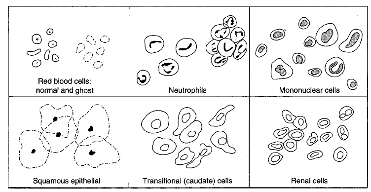
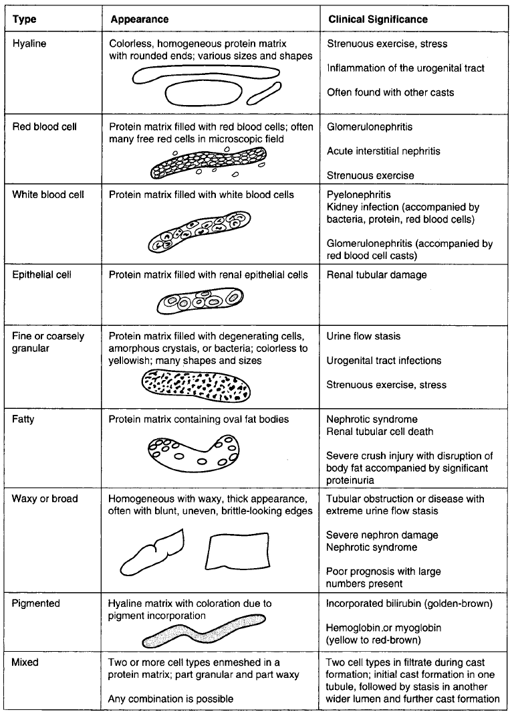
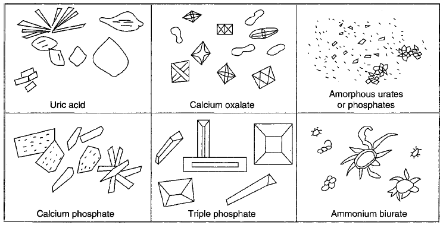
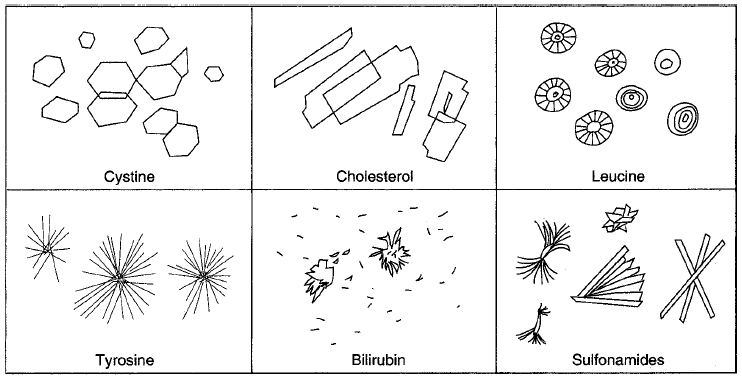
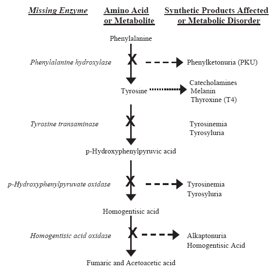
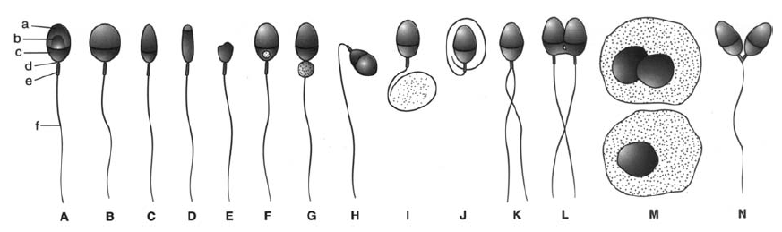

Clinical Chemistry
including
Urinalysis & Body Fluid Analysis
Chemistry
Basics
Laboratory Math and Statistical Concepts
Concepts important include math and statistics. What is the concentration
of a solution: percent solution (w/w)(w/v)(v/v), molarity, normality
(equivalents per liter), and how to compute dilutions. Statistics include being
able to compute mean, range (dispersion), standard deviation, coefficient of
variation.
Laboratory Automation and Computer Systems
Importance is attached to understanding advantages and disadvantages of
automation: advantages are increased production per time, minimized variability,
reduced errors in manual manipulation, reduced sample volumes, reduced
consumable costs; disadvantages are initial costs, discontinuity of product,
need for technical skill. Continuous flow analyzers insert samples into a
stream of tubing and create gaps between reactions. Random access analysis can
take a single sample and perform multiple tests in a system. Batch analyzers
effectively perform a single test on multiple samples in a run.
Laboratory information systems have functions of providing a database
for patient information, compiling specimen test results, producing patient
reports, producing ancillary reports, and storing data.
Spectrophotometry and Light Emission Techniques
Spectrophotometers Light sources includ deuterium or hydrogen lamps
for UV, tungsten lamps for visible light, and mercury lamps (often used in
HPLC). Wavelength monochromators are colored glass filters, interference
filters, prisms, and diffraction gratings. Sample cells can be cuvettes,
tubing (usually in automated equipment), and plastic packs. Photodetectors
include photocell (barrier-layer cell), phototube, and photomultiplier tube.
The concentration of a substance is related to the absorbance of light via
Beer's law: A = εlc, where l = light path length, c
= concentration, and ε = extinction coefficient for the
particular molecular substance. Transmittance is a percentage defined as T =
I/I0 × 100, where I is the radiant intensity of the
sample and I0 is the radiant intensity of a sample in just
the solvent (a blank). Note that absorbance is related to transmittance by the
equation: A = 2 − log %T. Thus with 100% transmittance, A =
2.0 − log 100 = 0 (no absorbance). When only 10% of the light is
transmitted, then A = 2.0 − log 10 = 1.0. Thus an absorbance of 1.
0 means only the 10% of the light is transmitted. What would an absorbance of
2.0 mean? 2.0 = 2.0 − log %T is log %T = 0, in which T = 1.
So T = 1%. With A = 3.0, T = 0.1%.
In atomic absorption spectrophotometry (AAS), the atomic state is
analyzed for the element in a flame [burner head] (freeing it of chemical bonds)
and a light source (hollow cathode lamp) is passed through the atomized gas to
see if it absorbs. Absorption is particular to mamy atoms in their atomized
states. Wavelength selection is as for a regular spectrophotometer (monochromator
and photodetector (PMT).
Nephelometry is the method to assess concentrations based on light
scattered in the forward direction; intensity is proportional to particles in
solution. Turbidimetry is the measurment of the unscattered light:
thus it measures the light blocked by particles in solution.
Electrochemistry
Electrochemistry measures electrical signals associated with chemical
systems incorporated into an electrochemical cells. Where there is an
anode/cathode system, electrons flow from electrode of high electron affinity
to electrode of low affinity if connected by salt bridge. Electrons flow from
the anode to the cathode. Potentiometry is the measurement of voltage
potentials where there is zero current electrochemistry measurements. A pH
meter is an example of potentiometry. Ion-selective electrodes (ISE) also work
by potentiometry. Glass membrane electrodes are ISE for pH. Coulometry
measures the electricity passing between two electrodes in an electrochemical
cell, with the amount proportional to substance produced or consumed in a redox
on the electrodes. Amperometry measures current flowing through the
electrochemical cell when a potential is applied to the electrodes.
Osmometry
For solutes dissolved in solvents, particularly water for biological systems,
four phenomena are described:
- The osmotic pressure of the system is increased.
- At any temperature, the solution vapor pressure is lowered below that of
the pure solvent.
- With the change in vapor pressure, the boiling point of the solution is
raised above that of the pure solvent.
- The freezing point of the solution is lowered below that of the pure
solvent.
A 1 molal solution containing a nondissociated solute is said to have 1 mol of
solute dissolved in 1 kg of water. The solution should boil at 0.52° C
higher than would pure water, freeze at 1.858° C lower than pure water.
Solution vapor pressure should be 0.3 mm Hg lower than for pure water (pure
water vapor pressure is 23.8 mm Hg at 25° C). The osmotic pressure will go
from zero to 17,000 mm Hg (= 22.4 atm). We assume an activity of one for the
solute particles (no molecular interaction or special association). The
osmolality of an ionic solute should be the concentration of the salt (in
mol/kg water) times the number of particles or ions which will form in solution
times and activity coefficient to indicate the less than ideal nature of the
solution. The pressure is the sum of the pressures exerted by each species in
the solution.
Most of the osmolality of serum derives from the dissolved salts. Proteins and
species of large molecular weight contribute to only 0.3% of serum osmolality.
Nonelectrolytes (glucose, urea) likewise are sufficiently low in concentration
and contribute little as well. Serum osmolality is calculated to be approx. 307
mmol/kg water, with activity coefficients factored in, it becomes 290 mOsmol/kg
water.
Osmometry determines particle concentration related to osmotic pressure
of a solution, and this pressure determines movement of solvent across membrane.
The osmolality of a solution is the moles of particles per kg water and
depends on both number and type of particle. Colligative properties are
functions of particle counts per kg solvent and include osmotic pressure,
freezing and boiling points, and vapor pressure. There is a depression of
freezing point and vapor pressure as the particles in solution increase. The
osmolal gap is the difference between calculated and measured osmolality.
Calculated plasma osmolality in mOsm/kg = 2 × Na (mEq/L) + glucose (mg/dl)
÷ 18 mg/dmol + BUN (mg/dl) ÷ 2.8 mg/dmol. When the osmolal gap
> 0, there is likely an abnormal concentration of unmeasureable substances
in the blood (usually EtOH).
Freezing Point Depression Osmometer
Vapor pressure or osmotic pressure determinations are dependent upon changes in
ambient temperature. Freezing point depression measurements are much less so.
For this reason, freezing point depression is often determined to understand
the osmolality of a solution. It is often referred to as an osmometer or rarely
a cryoscope. Vapor pressure osmometers are also used from time to time to
measure total osmolality in serum and urine. The freezing point osmometer has
the following components:
- Thermostatically controlled cooling bath or block maintained at
−7° C.
- A rapid stirring mechanism to initiate freezing of a sample.
- A thermistor probe connected to a Wheatstone bridge circuit to measure
sample temperature, the thermistor being a glass bead attached to a metal stem
whose resistance varies with temperature.
- A galvanometer to display the freezing curve used as a guide when measuring
potentiometer is used.
- A variable resistor (measuring potentiometer) to null the current in the
Wheatstone bridge.
The thermistor probe and stirring wire are lowered into the sample, stirring
being gentle, and this assembly is then lowered into the cooling block/bath set
several degrees below zero. The galvanometer movement will indicate that
supercooling has occurred in the sample. The sample is then elevated above the
cooling bath and the stirring pattern altered to seed for rapid freezing. The
sample is a slush with 2-3% of the solvent solidifying. The galvanometer
reverses direction, and the released heat of fusion warms the solution and
remains unstirred, indicating equilibrium between freezing and thawing. The
balancing potentiometer is adjusted during this brief (2-3 min) equilibrium
period to null the galvanometer. At the end of the equilibrium plateau, the
galvanometer will indicate the decreased temperature as the sample freezes to a
complete solid.
Although it can be calculated directly from the pot readings, reference
compounds are usually used to calibrate the device so that a direct milliOsmol
determination is made. Alternatively, if it is found that freezing point is
−0.53° C, since the molal freezing point depression of pure water is
−1.86°, the osmolality is calculated as −0.53/−1.86 *
1000 or 285. Units in mOsmol/kg water.
Vapor Pressure Osmometer
Wescor, Inc. (Logan UT) introduced what is indirectly a vapor pressure
osmometer, a device which essentially measures the dew point decrease relative
to that of the pure water solvent. A thermocouple serves to measure temperature
differences. A 7 µl sample is spotted on to a 5 mm filter paper disk and
placed within a vaporization-condensation chamber. The chamber is sealed and
thermal and vapor equilibrium allowed to establish. An electric current is
passed through the thermocouple, which cools the thermocouple to a temp below
the dew point, the temp at which saturation vapor pressure equals actual vapor
pressure. With water condensing on the thermocouple junction, the heat of
condensation raises the temperature of the thermocouple back to the dew point
so that no more water condenses.
Pre-Analytical Variables
Preanalytical variables in lab testing are those affecting specimen
integrity. Collection, transport, handling, storage variables affect results.
In collection, the order of draw is vital to prevent cross-contamination with
anticoagulants.
Special Methods in Clinical Chemistry
Special methods in clinchem include electrophoresis, with mobility depending on
several factors. Analytical methods of electrophoresis are done on proteins.
Immunoassays includ knowing concepts of antigens, antibodies, and "labels":
enzymes, fluorophoes, chemiluminescent moieities, anr radioisotopes. ELISAs use
labeling of Ag or Ab in some cases and often used to test hormones. EIA or EMIT
(enzyme-multiplied immunoassay technique) is an enzyme-based assay using
labeled antigen and used for drug monitoring. FPIA uses fluorophore-labeled
antigen and used for hormone testing and surfactant/albumin ratio. The FIA is
often used in catechooamine test with fluorophore-antigen that is proportional
to analyte. The RIA uses radioisotope-labeled antigen, while the IRMA
(immunoradiometric assay) uses radiolabeled antibody: both are used for hormone
testing or drug monitoring. Adsorption chromatography is based on competition
between binding for a solid stationary phase with liquid mobile phase. In
partition chromatography (liquid-liquid), the molecular preference for one
immiscible phase for another over another is shown. With ion-exchange, a
charged stationary phase and the strength of the charge is shown. Thin-layer
chromatography is effectively an adsorption type which can resolve substances
semiquantitatively using an retention factor (Rf).
Anatomy and Physiology
Kidney
At the macroscopic level the kidney has three basic structures: the cortex,
medulla, and pelvis. At the microscopic level the nephron is the functional
unit composed of glomerulus enveloped by Bowman's capsule, the proximal tubules,
the loop of Henle, the distal tubules, and the collecting ducts. The filtrate
of the glomerulus is cell and protein free and is formed at 125 ml/min. The
clearance is the ml plasma from which the kidney removes a particular substance
per minute. The plasma renal flow is the number of milliliters of plasma passed
in the kidney in 1 minute, about 625 ml/min. The proximal tubules reabsorbs
sodium very actively, drawing 75% of filtrate water and small molecules (glucose,
amino acids, ions, other small molecules) by osmosis. Excess substances are
excreted in the urine, so the kidney provides maximal level sets. Urea and
creatinine are not reabsorbed in the proximal tubule. The level of urine
osmolarity is controlled in the loop of Henle. The distal tubule reabsorbs some
salt, water, and HCO32−, but eliminates uric acid,
ammonia, and hydrogen ion; it is controlled by hormones.
Water balance is a function of stimulation of the brain thirst center for intake
and the influence of antidiuretic hormone on the renal tubules. Ionic balance
is affected by the steroid aldosterone. The kidney influences acid-base levels
of the blood by blocking HCO32− or elimination of
protons. Urea, uric acid, and creatinine are passed through the glomerulus
but some urea and uric acid can be reabsorbed to control nonprotein nitrogen.
The kidney synthesizes the hormone renin in the juxtaglomerular cells in
response to the level of blood pressure: renin is metabolized to produce the
angiotensins which are potent vasoconstrictors, so low blood pressure can
induce it. Prostaglandins are also produced in the kidney and affect
blood flow through the kidney itself. Erythropoietin is produced by kidney
cells and its production is sensitive to oxygen levels of the blood: in
relative hypoxia, EPO is release to stimulate heme production, iron
sequestration and RBC synthesis. Dihydroxycholecalciferol hydrolase will
activate to form Vitamin D in unusable form.
Renal system disorders include glomerulonephritis, which results when immune
complexes formed against group A β-hemolytic streptococci cause damage to
the glomerulus, leading to anemia, uremia, and edema. Nephrotic syndrome
describes the increased permeability of the glomerular basement membrane to
proteins, and is seen with proteinuria and edema. Diseases of the tubules lead
to GFR decreases and an effect on acid-base balance. Bacteria can cause urinary
tract infections. Renal calculi are deposits of calcium and uric acid often
following UTIs, and can cause hematuria. Acute renal failure is sequel to
cardiovascular system failure, tubular necrosis, of obstruction caused in lower
urinary tract, and systems are oliguria, proteinuria, and hematuria. Chronic
renal failure has many causes from chronic glomerulonephritis to obstructive
uropathy to renal vascular disease.
Liver
The macroscopic structure shows a bilobed organ that is highly vascularized by
hepatic artery and portal vein. The microscopic structural and functional unit
of the liver is the lobule, composed of a cord of hepatocytes
surrounding a central vein, sinusoids of blood spaces lined by
endothelial and Kupffer's cells surrounding the cords, draining into a central
vein, and bile canaliculi which are small channels between the
hepatocytes carrying bile formed by hepatocytes to the bile ducts.
Bile is composed of bile acids, salts, pigments and cholesterol. Bile salts
are reabsorbed by the intestine and re-excreted. Bilirubin is the breakdown
product of hemoglobin. It comes from biliverdin, and is a reduction product.
It is conjugated to an ester to make it water soluble. In the intestine it is
converted to urobilinogen, which is later oxidized to urobilin and then excreted
in feces. Some urobilinogen is excreted in kidney. Excessive bilirubin in the
blood produces the jaundice coloration.
Disorders of the liver involve conditions like jaundice. Prehepatic jaundice
are conditions not indicative of abnormal liver function but rather excessive
bilirubin perhaps caused by hemolytic anemia or ineffective erythropoiesis.
Hepatic jaundice is that indicating hepatobiliary disease, in which the liver
fails to process bilirubin. Posthepatic jaundice will not indicate hepatocyte
dysfunction but perhaps inaability to excrete bile: obstruction of bile flow
such as by gallstones or tumor. Conjugated bilirubin levels in serum or urine
are high whild there is colorless stool or low urobilinogen levels in urine.
Cirrhosis is a breakdown in the lobular architecture, and indicative of alcohol
abuse. Reye's syndrome is a liver destruction by viral infection: there is an
accumulation of ammonia in the blood. Hepatitis can also lead to liver disorder.
GI Tract and Pancreas
The gastrointestinal tract includes the pancreas. GI tract composed of mouth,
stomach, duodenum, jejunum-ileum and the colon as 5 major regions. Digestion
begins in the mouth and continues in stomach and duodenum. Gastric fluid is
composed of HCl, pepsin intrinsic factor, and mucus, with pH < 3. The
hormone gastrin is responsible for acid production and secretion. The parietal
cells in the stomach produce intrinsic factor which is necessary to transport
vitamin B12 across intestinal wall.
GI function tests look mostly at malabsorption. The analysis of gastric fluid
can reveal pernicious anemia (achlorhydria: pH not low). Hypersecretion of
gastric fluid might indicate a secreting tumor (Zollinger-Ellison syndrome),
and nonprandial secretion could lead to ulcers. It might also indicate a
vagotomy (the vagus nerve severing often used to treat ulcers). A lactose
intolerance test involves ingestion of a lactose cocktail followed by
measuring glucose: if it is low, there may be a lactase deficiency.
The pancreas is quite vascularized and joined to the small intestine at the
ampulla of Vater. It has an endocrine function in cells of the islets of
Langerhans: α cells secrete glucagon to stimulate the liver to breakdown
glycogen (glycogenolysis), β cells secrete insulin both to promote
glycogenesis in response to excess serum glucose (the opposite effect of
glucagon), δ cells produce gastrin and somatostatin. The exocrine
function of the pancreas is done by the acinar cells, which produce amylase for
starch and glycogen breakdown, lipase to convert fats to fatty acids and
alcohol form of the ester, and trypsin to breakdown protein.
The presence of amylase in the blood might signal acute pancreatitis. When
pulmonary disease is found, a check should be made for intestinal malabsorption
since that might be caused by poor pancreatic enzyme secretion dependent upon
chloride ion transport: the combination can indicate cystic fibrosis.
Pancreatitis can indicate several problems: alcohol abuse, gallbladder disease,
lipid disorders, and abnormal release of activated pancreatic enzymes into the
surrounding tissue. Diabetes mellitus of the type I is because insulin is no
longer produced by β cells, whereas type II is not a disorder of the
pancreas but rather an insensitivity to insulin of dependent tissues. In
pancreatic cancer, the ducts of the pancreas function abnromally. An insulinoma
is a tumor of the β cells that can be revealed by profound hypoglycemia.
In testing the exocrine function of the pancreas, the secretin test is a
complex test involving intubation and gathering of pancreatic fluid in reaction
to secretin stimulation: secretin is produced by stomach cells to stimulate the
pancreas. Quantitative fecal fat analysis involves collecting a 72 hour set of
specimens, extracting with ether, and weighing the fat to determine if there is
pancreatic exocrine insufficiency. For a screening procedure, a small amount of
feces can be treated with fat-soluble stain and examined for lipid droplets.
Devices to measure the electrolytes in the sweat have been developed:
pilocarpine (nitrate) is administered to induce sweating on an area of the skin
on to an absorptive disc, and then the salts are eluted from the disc to
measure chloride and sodium.
Analytes and Pathophysiology
Amino Acids
Of the 20 amino acids that are vital to humans for proteins, almost half of
them cannot be produced in human metabolism. The 9 essential amino acids
required in the diet are Val, Leu, Ile, Met, Trp, Phe, Thr, Lys, and His. Note
that three of these are the branched alkanes, two are the aromatic nuclei, two
are basic, the other a thioether, and the other an aminoalkyl. Some of the
amino acids are glucogenic (or glycogenic) in that they can generate
metabolites involved in the catabolism of glucose. Others are ketogenic and can
only generate ketone bodies.
Disorders of amino acid metabolism include phenylketonuria (PKU): phenylalanine
hydroxylase is required to convert Phe → Tyr, and there is a deficiency
that can cause mental retardation in children. Maple syrup urine disease
(MSUD) is a deficiency of a decarboxylase for the ketoacid forms of the
branched alkane amino acids (Val, Leu, Ile) and can result in the same effects
of PKU. Homocystinuria is a result of impaired enzyme activity leading
to elevated levels of HCys and Met in plasma and urine.
The major protein components of plasma are albumin, globulins, fibrinogen and
complement. Albumin is a transport protein providing most of the osmotic
pressure in blood. Prealbumin (because it has higher electrophoretic mobility
than albumin) can bind and transport thyroid hormones. Globulins are water
insoluble composed of multiple fractions: α1 globulins include
α1 fetoprotein (AFP) and α1-antitrypsin;
α2-globulins include haptoglobin, ceruloplasmin, and α
2-macroglobulin; β-globulins include transferrin and C-reactive
protein; γ-globulins includes the immunoglobulins G, A, M, D, and E.
These proteins are synthesized in the liver except for the Igs, which are
synthesized by B lymphocytes. These proteins are catabolized in the liver,
kidney, and GI tract. Total proteins in the serum range from 6.5 to 8.3 g/dl.
Total nitrogen reflects both protein and nonprotein nitrogen. Kjeldahl's method
converts protein nitrogen into ammonia which is then assayed. Refractometry has
been used in the past to determine protein levels (concentrations). The biuret
method is a chemical assay for determining protein. In serum protein
electrophoresis, a protein sample has component proteins resolved in a
cellulose acetate or agarose medium at pH 8.6. Albumin has the highest mobility.
Immunofixation electrophoresis (IFE) is used to evaluate the immunoglobulins.
Essentially the proteins are electrophoretically separated as for SPE, and then
an antiserum is added for IgA, IgG, and IgM, as well as to the &κ; and
&λ; light chains in order to determine if there is a monoclonal
paraproteinemia.
For protein in urine, qualitative dipstick tests exist to assess proteinuria,
glycosuria, and other abnormal urine findings. Turbidimetry can also be done
by adding a precipitant and measuring the turbidity photometrically.
What do protein disorders in body fluids reveal? Hypopoteinemia might reflect
liver or kidney disease, blood loss, or malnutrition. Hyperproteinemia might
be due to dehydration or perhaps excess γ-globulin production.
Low serum albumin can be due to liver dysfunction, poor diet, inflammation in
the GI tract, and renal disease. Specific globulin disorders include:
- α1-antitrypsin deficiency caused by pulmonary disease;
increased levels might be because of inflammation or pregnancy.
- High α1-fetoprotein in pregnancy might be because of
neural tube defects, spina bifida, or twins. High levels may indicate liver
cancer. Decreased levels in pregnancy indicate risk of Down's syndrome.
- Increased haptoglobin is seen in
chronic inflammation, burns, and rheumatic disease. Decreased levels are found
in transfusion reactions or hemolytic disease.
- Decreased ceruloplamsin is seen in Wilson's disease or malnutrition.
- Iron deficiency anemia will induce high levels of transferrin.
- Increased Ig levels generally indicate infections, possible liver disease,
multiple myeloma, Waldenstrom's macroglobulinemia (IgM), and autoimmune reactions.
Water and Electrolyte Balance
60% of male body weight is water while 50% of the female body weight is water.
Two-thirds of water is intracellular. 25% of the extracellular fluid is plasma.
Sodium is by far the most abundant extracellular cation. Sodium is regulated by
renin, ADH, and aldosterone. A low blood volume (or cardiac failure) can induce
the secretion of renin from the kidney, which is converted to angiotensin to
cause intense vasoconstriction. Additionally ADH is released with high blood
pressure, retaining fluid volume. Aldosterone is produced by the adrenal cortex
and this induces synthesis of sodium transport proteins to actively transport
sodium from kidney tubules into the blood. Hyponatremia has many causes
but can indicate GI-based loss, burns, or renal dysfunction or failure. It
might also be caused by excess body water (dilutional hyponatremia).
Hypernatremia might result from excess body water loss (dehydration, sweating,
diarrhea).
Potassium in the major intracellular cation. It is regulated primarily by
dietary intake as well as by excretion. Aldosterone also enables potassium
re-absorption as well from the tubules. The pH balance also affects potassium:
Reduced urinary acidity will permit greater excretion of potassium. A higher
blood pH will induce a greater ability of potassium to enter cells. Hypokalemia
can result from low dietary intake, loss through the GI tract, renal
dysfunction, and there is a danger of cardiac arrhythmia. Hyperkalemia is quite
rare to observe: it might result from excessive dietary intake, adrenal failure,
crush injuries, or blood transfusions.
Chloride anion is the major extracellular anion, and its concentration is a
function of sodium and carbonate ions. In metabolically active tissues, carbon
dioxide and thus bicarbonate ion might be high, which can induce a chloride
shift in which chloride is moved into the the RBCs. Hypochloremia can be
caused by renal disease, diabetic ketoacidosis, or prolonged vomiting.
Hyperchloremia might result from dehydration, acute renal failure, prolonged
diarrhea (with loss of sodium bicarbonate), or by salicylate intoxication.
Bicarbonate is the second most abundant anion in the ECF and is important in
blood buffering of pH. Its level is regulated by the kidney and in the lungs.
Carbonic anhydrase can regulate the balance of bicarbonate by converting it to
carbon dioxide quickly. Bicarbonate levels that are high can indicate
respiratory acidosis while those that are low can indicate metabolic acidosis,
renal failure, or diarrhea.
Ion levels can be measured using ion-specific electrodes or by amperometric-
coulometric titration, particularly for chloride determination, in which silver
is added to combine with chloride. Additionally, AAS can assess.
The anion gap is computed as the difference between the sum of Na and
K ions and of Cl and HCO3 anions. This gap is normally 6-18 mmol
(mEq) per liter, which means that other anions provide neutrality too (organic
acids mostly). When the gap is altered it can indicate an abnormal metabolic
state.
Acid-Base Balance
In metabolic activity, carbon dioxicde and organic acids are formed in large
quantities, which means hydrogen ion concentration is also increased. The
presence of protons helps to induce release of oxygen from oxyhemoglobin.
When this comes back to the alveolar tissues of the lungs, the protons are
released from the Hb, and combine with the HCO3−
to form CO2 and H2O, made possible by carbonic anhydrase.
Blood-gas Analysis requires the sampling of arterial blood in a glass
or plastic syringe (although capillary systems can be used if the blood is
arterialized
). Blood is collected in heparin (liquid or lyophilized).
Collection involving air bubbles could affect pCO2. The specimen
should be placed on ice and should be tested within 15 minutes: pH values
might decrease and pCO2 might increase otherwise.
Nonprotein Nitrogen
Urea is the primary form of nitrogen excretion and is synthesized in the liver.
In the lab it is determined using a coupled enzyme assay that produces ammonium
ion that is incorporated in an NAD(P)H-producing assay. Alternatively,
a pH indicator dye can detect ammonium presence. A more direct method is to
use a diacetyl monoxime assay. Azotemia is an elevated level of blood
urea. Prerenal azotemia is elevation due to factors not related to
kidney dysfunction: decreased renal blood flow by congestive heart failure,
shock, dehydration, decrease in blood volume, rapid protein breakdown perhaps
due to a major illness, or a high-protein diet.
Creatine is also produced in the liver from amino acid metabolism, and its
phosphate form is a source of high energy storage in skeletal muscle.
Creatinine is actually an anhydrous form of creatine. It is excreted by the
kidney. Creatinine is not affected by the diet, so its level is a reflection
of the GFR. The Jaffé reaction is a classic reaction in which
picric acid is added to produce a chromogen for colorimetric determination.
A coupled kinetic assay forming hydrogen peroxide allows determination using
a colored product. The formula for the GFR in general is
GFR = [urine concentration] × [urine flow] ÷ [plasma concentration]
For the creatinine assay, determine both serum and urine creatinine
(use a 24 h specimen), then apply the formula:
{[urine creatinine (mg/l)] × [urine volume (ml)] × 1.73 m2 min/ml} ÷
{[plasma creatinine (mg/l) × [24 h × 60 min/h] × [body
surface area (m2)]}
The final result is in ml/min. The BUN:creatinine ratio varies from 10:1 to
20:1, and higher ratios might indicate that BUN has prerenal rather than renal
causes.
Uric acid is also produced in the liver. It is formed by the catabolism of DNA
and RNA. Its laboatory assay is by the oxidation of uric acid by uricase to
allantoin and H2O2 which is coupled to a peroxidase using
phenol and 4-amino-phenazone. Altenatively the peroxide formation might be
coupled to oxidation of ethanol to acetate. Elevated levels might confirm or be
caused by gout, by chemotherapy (increased cell destruction), renal disease, or
toxemia in pregnancy. Decreased levels of uric acid could indicate liver or
kidney disease.
Ammonia is not normally excreted by the kidney but produced intracellularly and
used in the liver to produce urea. Any measure of ammonia in the body fluids
indicates severe liver dysfunction (liver failure or Reye's syndrome). Ammonia
can be measured using GluDHase directly, which uses α-ketoglutarate and
NADPH in reductive amination to form glutamate and to track formation of
NADP. Alternatively an ammonia ISE can be used to determine levels of ammonia.
Carbohydrates
Carbohydrates are either monosaccharides and as aldehydes or ketones are
reducing sugars. Disaccharides include maltose, lactose, and sucrose.
Polysaccharides are starch and glycogen (which differ to the degree of
branching). Glucose levels are affected by insulin, glucagon, epinephrine, hGH
and ACTH (because pituitary hormones affect the adrenal gland and utilization
of glucose), glucocorticoids, and thyroid hormones. Glucocorticoids usually
increase proteins affecting gluconeogenesis, which is used to produce glucose.
Thyroid hormones affect the breakdown of glycogen, which stimulates increased
blood glucose. Hyperglycemia is when the blood glucose increases to more than
110 mg/dl and could indicate diabetes mellitus or liver failure. Hypoglycemia
results when the level falls to below 70 mg/dl and might be the result of
hormone deficiency, a drug reaction, excess insuline (insulinoma) or a genetic
disorder. Glycosuria occurs in hyperglycemia when the glucose exceeds 160-180
mg/dl.
Serum glucose can be analyzed in multiple ways:
- glucose oxidase: glucose is oxidized to gluconic acid and the
hydrogen peroxide is coupled to a chromogenic peroxidase reaction; this
reaction has interferences by uric acid, bilirubin, and ascorbic acid
- hexokinase to G6P which is then coupled to G6PDH to measure NADPH formation
- o-toluidine is a nonenzymatic method with glucose in acetic acid to
form a colored product; however, this has positive interferences from mannose
and galactose, and negative interference from bilirubin, so is not very specific
- long-term elevated glucose levels can be assessed using a glycated Hb
assay: this is used to look at insulin compliance therapy
Glucose tolerance testing (GTT) can be used to look for pregnancy-induced
diabetes. The test first draws a baseline sample, gives a 75 g dose of
glucose over a 5 min period, then blood is drawn at 30, 60, 120, and 180 minutes
to be measured for glucose (urine might also be tested). In normal patients,
urine will be negative and the highest levels are at 30-60 min interval.
In diabetics, the peak is at 30-60 min, but it will remain elevated at the later
times too. In another type of test, a 2-hour post-fast test is done. Blood
is drawn from a fasting patient, and then 2 h later after a breakfast: the
blood glucose should be close the fasting level.
Lipids
Lipids are composed of triglycerides and other water-insoluble materials.
Triglycerides form 98% of the fat in food. 95% of the mass is fatty acid and 5%
is glycerol. The other 2% is cholesterol (animals), phospholipids, diglycerides,
fat-soluble vitamins, steroids and terpenes. Lipids are ingested then digested.
Lipases and other enzymes, as well as bile salts and stomach acid break them
down to mono- and diglycerides. Cholesterol is emulsified by bile for
absorption. In absorption, fatty acids form chylomicrons and enter the
lymphatics. Short fatty acids can bind to albumin. Triglycerides are
transported in the blood as chylomicrons or by very low-density lipoproteins
(VLDLs) and cholesterol is transported by LDLs and HDLs. Note that
sphingolipids are those important for neuronal function.
Frederikson's Classification of Hyperlipoproteinemias
| Type
| Plasma Appearance
| Cholesterol Level
| Triglyceride Level
| Lipoprotein Abnormality
|
|---|
| I (rare) | creamy | ↔, ↑ | ↑↑↑
| high chylomicrons
|
| IIA (common) | clear | ↑↑↑ | ↔
| high LDL
|
| IIB (common) | clear | ↑↑↑ | ↑
| high LDL, VLDL
|
| III (rare) | cloudy | ↑↑ | ↑↑
| abnormal LDL, VLDL
|
| IV (common) | milky | ↔, ↑ | ↑↑↑
| high VLDL
|
| V (rare) | creamy, milky | ↑ | ↑↑
| high chylomicrons, VLDL
|
|
↑ = slight increase, ↑↑ = moderate increase,
↑↑↑ = extreme increase, ↔ = no change
|
Serum triglyceride levels are affected by diet, and high triglyceride levels
can be caused by diabetes and pancreatitis. It might also indicate problems
with lipoprotein lipase (LPL) function, since TGs are metabolized and brought
into the cells as fatty acids and glycerol. Elevated cholesterol could indicate
genetic problems affecting their metabolism in the liver, or problems with apoB
receptors on cell surfaces, which incorporate cholesterol. Hyperlipoproteinemia
has several different classifications. It might result from hyperlipidemia,
causing overproduction to handle the lipids. The Frederickson classification
(see table) is based on a test of the appearance of plasma kept at 4° for
24 h. Hypolipoproteinemia may be due to genetic defects affecting LDL and HDL
(reduction or absence). The absence of LDL can lead to a failure to thrive,
steatorrhea, CNS degeneration, and malabsorption of fat and vitamins. The
absence of HDL (Tangier disease) can lead to accumulation of cholesterol esters
in tonsils, adenoids, and spleen, but is generally considered a benign disease.
Interestingly, decreased LDL levels are increase life expectancy and decreased
risk of myocardial infarction. Lower HDL is associated with an increaed risk of
atherosclerosis.
Lipid analysis includes test for total cholesterol, formation of free
cholesterol (a peroxidase-based test), use of an oxygen (Warburg) electrode
when a cholesterol oxidase is added to cholesterol. Analysis of HDL is done by
precipitating LDL and VLDL and then measuring HDL. LDL can be determined in
three ways: using total cholesterol, HDL, and TG determinations and computing
the following formula: TC − (HDL + TG) ÷ 5; ultracentrifugation;
immunoseparation with an anti-LDL antibody. Triglycerides can be measured using
a three-enzyme coupled assay: lipase, glycerol kinase, G6PDHase to measure NADH;
and a colorimetric assay involvign peroxidase-formed chromogen.
Vitamins
Vitamins are important part of laboratory chemistry. The fat-soluble are A, D,
E, and K. Vitamin A is in the form of retinal, retinol, and retinoic acid.
Vitamin A is stored in liver and transferred to cells to promote mRNA synthesis.
The vitamin is crucial to stimulating vision in rod cells of the retina, so
its absence causes night blindness. Vitamin D is a sterol known as
cholecalciferol. It can be produced in the skin by a precursor affected by UV
light, or it can be obtained in the diet. It is important for bone
mineralization and neuromuscular activity, and it can regular uptake of calcium
and phosphate. Its deficiency leads to rickets (bones will not calcify) or
osteomalacia (abnormal bone synthesis). Vitamin E (α-tocopherol) can only
be obtained by diet and accumulates in liver, adipose tissue, and muscle; it is
connected with normal neurological structure and function, and it is also an
anti-oxidant preventing free radical formation. Deficiency can cause normocytic
normochromia anemia. Vitamin K (phylloquinone) is obtained from the diet or by
gut flora and is important in forming coagulation factors, particularly
prothrombin.
The water-soluble vitamins are B complex and C. Vitamin C is a reducing agent
and important in collagen synthesis and biosynthesis of some neurotransmitters.
The B vitamins are thiamine, riboflavin, niacin, pantoethenic acid, biotin,
pyridoxine, folates, and cyanocobalamin and are vital to most metabolic
enzymatic activities.
Tumor Markers
Tumor markers are important in detecting cancer and monitoring response to
anti-cancer therapy. Generally they are monitored by immunoassays. Oncofetal
antigens are normally present in embryos and fetuses but also seen in certain
tumors. Carcinoembryonic antigen (CEA) is used to assess colon tumors,
although is not specific, since there are colon cancers without elevated CEA
levels. α-Fetoprotein (AFP) might be used to detect hepatic tumors
(hepatomas) and testicular tumors. Carbohydrate-associated antigen
CA-125) is a glycoprotein that can be used to detect ovarian cancer. CA-19 is
another glycoprotein that can be observed in gastrointestinal tumors. PSA might
be used in screen and monitoring prostate carcinoma. Bladder tumor-associated
antigens include fibrin degradation products and complement-related proteins.
There are two placental proteins synthesized by trophoblasts and their tumors:
chorionicgonadotropin (CG) can be used to determine pregnancy, but also
indicate tumors of the testes or ovaries and also trophoblastic neoplasia.
Human placental lactogen (hPL) can be monitored to indicate fetal
well-being, but might be present in trophoblastic neoplasms. Alkaline
phosphatase might be elevated in cases of bone cancer. Additionally
altered/increased levels of hormones might indicate malignancy of the organ
that produces the hormone (high hGH might indicate pituitary tumor).
Porphyrins
Porphyrins are important in biosynthesis of hemo- and myoglobins and in
cytochromes. Disturbances in heme synthesis can cause porphyria. Porphyrin
is synthesized from porphin (four pyrrole rings). The liver and bone marrow
are the main sites of porphyrin synthesis. Regulation of the biosynthesis of
porphyrin is at δ-aminolevulinic acid (ALA) synthase. Porphyrin forms
of importance are protoporphyrin (in the feces), uroporphyrin (in urine),
and coproporphyrin (urine and feces), which are all intermediates in heme
synthesis. Porphobilinogen (PBG) and ALA are precursors which can accumulate
in certain disorders and can be observed in urine with acute porphyria.
Free erythrocyte porphyrins (FEP) can be extracted from RBCs, with the primary
one being protoporphyrin; lead poisoning and iron deficiency anemia can result
in increased FEP.
Porphyrin Disorders
| Condition | Frequency
| Other porphyrin levels
|
|---|
| Neurologic Porphyrias
symptoms include abdominal pain, psychotic behavior, neuromuscular difficulties
ALA and porphobilinogen levels in urine are increased
|
|
| acute intermittent porphyria | most common | ↑ uroporphyrin
|
| variegate porphyria | rare
| ↑ uroporphyrin
↑ coproporphyrin
|
| acute intermittent porphyria | most common | ↑ uroporphyrin
|
| Cutaneous Porphyrias
excess porphyrins in skin leading to skin lesions induced by photosensitivity
of the porphyrins in the skin
ALA and porphobilinogen in urine are normal
|
| congenital erythropoietic porphyria | rarest of inherited
| ↑ uroporphyrin
↑ coproporphyrin
|
| protoporphyria | somewhat rare
| ↑ protoporphyrin
↑ FEP
|
| porphyria cutanea tarda | most common | ↑ uroporphyrin
|
| Porphyrinuria
secondary to pregnancy, neoplasia, intoxication, liver disease
| ↑ coproporphyrin (urine)
|
| Porphyrinemia
moderate elevation in protoporphyrin in RBCs secondary to
- iron deficiency state: poor nutrition, malabsorption, poor iron transport,
blood loss
- anemia: hemolytic, iron-deficiency, sideroblastic
- lead poisoning
|
Porphyria cutanea tarda is seen in adults with liver disease or excessive
alcohol intake.
Porphyrin analysis involves qualitative and quantitative procedures. Specimens
must be protected from light. Both PBG and urinary porphyrins are best fresh
early morning urine (10-20 ml). The Watson-Schwartz test or Hoesch test are
qualitative and should be PBG-negative for normal patients. Urine porphyrins
uroporphyrin and coproporphyrin can be tested in a screen. Quantitative tests
are run on urine (PBG, UP, CP, and ALA). Blood tests include ALA dehydratase,
and protoporphyrin in whole blood or RBC. Fecal tests are for coproporphyrin
and protoprophyrin.
Iron
Iron is absorbed by the intestine (mainly in duodenum). It is transported by
transferrin (binds Fe3+). It is stored to an iron-binding protein
called ferritin or in an insoluble form as hemosiderin. The storage of iron
is equally divided in the liver, bone, and spleen. Iron is moved to the
mitochondria for heme synthesis. Iron deficiency anemia can be caused by
blood loss via menstrual cycle, ulder, or a tumor. Iron excess (overload)
can manifest as hemosiderosis (no tissue injury), hemochromatosis, which can be
hereditary (automsomal recessive) and lead to iron deposition in liver, heart,
and kidney (causing organ failure), or by sideroblastic anemia caused by
iron overload of unknown cause. Acquired hemochromatosis can be a result of a
thalassemia or lead poisoning and occurs with chronic excessive absorption of
normal iron intake. The analysis of iron involves several parameters:
serum iron induces release of Fe3+ from TRF and reduction to
Fe2+,
iron-binding capacity (IBC) is measuring max iron that TRF can bind,
TRF levels by immunoassay or RID, or plasma ferritin. Low serum iron might
indicate iron deficiency state, chronic inflammation, menstruation, blood
loss or myocardial infarction. High serum iron can be due to overload, iron
poisoning, hepatitis, and use of oral contraceptives. Transferrin might be
elevated in iron deficiency anemia, as will IBC. IBC can be low in cases
of iron failing to load into RBC or in iron overload, while TRF is normal.
Ferritin will decrease early in anemia and increase early in chronic diseases,
but is a sensitive indicator of iron deficiency.
Bilirubin is formed when protoporphyrin IX is converted to biliverdin which is
then reduced. It is bound to albumin for transport to liver, passed through
the hepatocyte and conjugated to glucuronic acid. Excreted into bile, the
glucuronide is hydrolyzed and reduced by the intestinal flora to urobilinogen.
Some is reabsorbed back to the liver and re-excreted as bile. Another portion
is execreted in urine. Some is oxidized into urobilin which colors the stool.
Cardiac Markers
Troponin (Tn) is a protein with three subunits: TnC, TnI, and TnT. Levels of
TnI and TnT are useful to diagnose and stratify the risk of myocardial
infarction. Both TnI and TnT are present in cardiac and skeletal muscle with
different genes encoding them based on muscle type. TnC has the same sequence
in skeletal and cardiac so cannot distinguish these types. In ischemic injury
to muscle these proteins degrade and become abundant in serum. In particular
TnT levels will peak within 24 h of a MI but show increases within 1-6 h and
return to normal after 10-15 d. TnT has a longer serum half-life than TnI.
Myoglobin, while not specific to muscle type, will increase within 2 h after
acute MI and peak at 6-9 h, reaching normal after 24 h. However, exercise,
surgery, renal failure, and muscular dystrophy can account for Mb increases.
Bone
Bone is tissue with a mineral (calcium + phosphate) and organic (mostly
collagen) component. There are also cellular components: bone-forming
osteoblasts, osteocytes, and bone-resorbing osteoclasts. Bone disorders fall
into three classes: (i) metabolic bond diseases include osteoporosis (which can
result from decreased osteoblastic or increased osteoclastic acivity),
osteomalacia ("soft bones") usually the result of vitamin D deficiency leading
to hypocalcemia (look for elevated PTH); rickets, which is similar to osteomalacia
and has three possible causes: phosphate depletion by renal wasting, vitamin
D deficiency, or PTH excess; scurvy as the result of long-term vitamin C
insufficiency leading to failure to strength collagen cross-linking; renal
osteodystrophy in which kidney dysfunction leads to hyperphosphatemia, low
vitamin D, etc; (ii) mineralm metabolims changes such hyperparathyroidism,
hyperpituitarism, hypo- or hypercalcemia, hypo- or hyperphosphatemia, and
hypomagnesemia; (iii) disorders of unknown etiology which include Paget's
disease (osteitis deformans) with bone loss leading to architecture that is
chaotic (believed to be slow virus affecting osteoclasts). Laboratory tests
to assess bone disease include serum calcium, phosphate, and magnesium, and
these values will be affected by bone deposition and resorption, renal clearance,
and intestinal absoprtion. Hormone anslysis includes PTH, vitamin D,
calcitonin, estrogen, and testosterone (osteoporosis and estrogne levels will
be important). Markers of bone metabolism include calcitonin, alkaline
phosphatase, urinary hydroxyproline, deoxypyridinoline, and N-telopeptide.
Osteocalcin is produced by osteoblasts and serum levels reflect osteoblast
activity. Osteocalcin is produced with vitamin K and is tested using immunoassay.
Alkaline phosphatase is elevated in bone growth, hyperparathyroidism, renal
osteodystrophy, osteomalacia, estrogen deficiency, and Paget's disease. It
is made by osteoblasts and could indicate bone formation activity.
Urinary hydroxyproline is present when collagen is degraded and is a nonspecific
marker for bone resorption. Deoxypyridinoline is a protein stabilizing collagen
chains during collagen synthesis and a highly specific marker of bone formation.
Assays include HPLC and immunoassay. Urinary N-telopeptide is a specific
marker of bone breakdown as osteoclasts generate it degrading type I collagen;
it can be assay by ELISA. Acid phosphatase is present in high amounts during
bone resorption.
Enyzmology
Enzymes
Enzymes are proteins with catalytic activity. The major classes of
enzymes are oxidoreductases that include dehydrogenases, the transferases
which transfer groups other than hydrogen (Asp and Ala transaminase, creatine
kinase, γ-Glu transferase), hydrolases which hydrolyze ethers or
esters (ALP and ACP, amylase, cholinesterase), lyases in which groups are removed
by elimination creating or addition to double bonds, isomerases catalyzing
interconversion of geometric or optical isomers, and ligases joining two
substrate molecules. Recall the equation for an enzyme-catalyzed reaction for
one or more substrates, and the formation and release of one or more products.
Recall also Michaelis-Menten question that relates the velocity of a reaction
to substrate concentration and to inherent properties of Vmax
and Km. Note that the Lineweaver-Burk plots the inverse of
the velocity against the inverse of the substrate, and the line slope =
Km/Vmax, the y-intercept is the inverse of
the Vmax, and the x-intercept is the negative of the inverse
of the Km. In 1st order kinetics, the reaction rate varies
with the substrate concentration as it is less than saturating. In zero-order
kinetics, the substrate concentration is effectively in excess (saturating)
and changes only occur with enzyme concentration because the rate is dependent
only on Vmax.
Enzyme inhibition has three types. Competitive inhibition is that caused when
the inhibitor binds directly to the same site as the substrate, and thus
prevents real substrate from being catalyzed. This has an effect on the
Km, causing an apparent increase that is related to the
equilibrium constant of the inhibitor. Noncompetitive inhibition binds to
site other than the substrate binding site, and it effectively reduces the
Vmax. Uncompetitive inhibition results when the inhibitor
binds to the enzyme-substrate complex, and this results in am apparent
decrease in both the Km (because the inhibitor makes the
substrate appear to bind more tightly) and the Vmax because
the ultimate effect is to reduce catalysis.
Phosphatases
Phosphatases promote hydrolysis of phosphate esters.
Acid phosphatase (ACP) is present in every tissue with significant
amounts in RBCs and platelets. 50% of the ACP activity in males is dues to
prostate gland with high levels in semen. ACP is assayed using p
-nitrophenylphosphate or thymolphthalein monophosphate in a medium with pH <
6.0. Isozymes can be studied by inhibiting prostate ACP using tartrate,
immunoassay with specific antibodies, or electrophoretic separation. Negative
interference of ACP is caused by anticoagulants (fluoride, oxalate, heparin),
while positive interference is seen with hemolytic samples. ACP can be used to
detect metastatic carcinoma.
Alkaline phosphatase (ALP) is also found, like ACP ubiquitously with
large amounts in liver, bone, intestine, kidney, and placenta. The
Bessey-Lowry-Brock reaction using p-nitrophenylphosphate at pH > 8.0
is used to assay it. Interferences are as for ACP. ALP can be significantly
elevated in the 3rd trimester of pregnancy and persons with liver disease
(hepatitis, cirrhosis) bone disease, hyperthyroidism, and diabetes mellitus.
ALP has four isoenzymes representing the fraction: bone, liver, intestine, and
placenta. Osteomalacia, rickets, and Paget's disease can elevate the bone
fraction; in children the bone ALP is normally high. Hepatobiliary obstruction
elevates liver ALP. The placental ALP is elevated between 16-20 weeks of
pregnancy (5th month). Information
on placental alkaline phosphatase (PALP). A method for the analysis
of serum ALP isoenzymes by agarose gel is given in
Detailed Methods.
Transaminases
Transaminases move amino groups on and off keto acids. AST catalyzes the
Asp + keto-acid → oxaloacetate + α-amino cognate. AST is present
in cardiac tissue, liver, skeletal muscle, and RBCs. AST can be assayed in
at least three ways: (1) dinitrophenylhydrazine will form a colored product
with OAA, (2) diazonium salts react with OAA to form another product, and
(3) the Karmen method is a coupled assay in which OAA product reacts with
NADH to form malate + NAD, which is detected. Elevations of AST may indicate
acute MI, viral hepatitis, or skeletal muscle disease. ALT catalyzes the
reaction Ala + α-ketoglutarate → pyruvate + Glu. ALT is mostly in
the liver, but amounts in heart, skeletal muscle, and RBCs are present as well.
Creatine Kinase (CK)
Creatine kinase enables the storage of massive amounts of energy in the form
of ATP (which can be limiting in cells) in a form that reduces the entropy of
ATP. It catalyzes creatine + ATP → creatine-phosphate + ADP, which is
reversible. During energy buildup, the reaction favors CP, while during
intense energy use, the reaction is reversed to favor ATP formation. CK is
found in abundant amounts in skeletal muscle, brain, and cardiac muscle. Its
activity can be assayed in two ways (1) the Tanzer-Gilvarg couples the CK
to two enzymes, pyruvate kinase and LDH, to measure NADH formation at 340 nm.
(2) Oliver-Rosalki assay utilizes creatine-phosphate to generate creatine + ATP,
which then drives hexokinase to form G6P, which then drives the G6PDH reaction
to monitor NADH. Hemolyzed samples will be a problem in these assays because
adenylate kinase will interfere with either the ADP or ATP present: AK will
cause positive interference. Additionally Cys will be added since its
active site is a sulfhydryl that is sensitive to oxidation. CK has three
different homo and hetero-multimeric isozymes: CK-MM is the major form in
striated and cardiac muscle and normal serum and elevated in hypothyroidism
and IM injections; CK-MB is a cardiac form and elevated in ischemic heart
disease: if > 6% of total CK, it is specific for myocardial damage; levels
rise within 48-72 h after acute MI, peak at 12-24 h, and return to normal within
48-72 h. CK-BB is found in low levels in normal serum but increases with brain
damage. Isoenzyme analysis can be done using electrophoresis, IEX chromatography,
or immunoassay.
Lactate Dehydrogenase
Lactate dehydrogenase (LD) catalyzes lactate + NAD ↔ pyruvate + NADH.
Although ubiquitous, high amounts are found in heart, liver, with lower levels
in RBC, skeletal muscle, and kidney. Total activity is measured by Wacker method
and NADH reaction monitored. The Wroblewski-Ladue method measures the decrease
in NADH absorbance using pyruvate. LD is used to diagnose problems with
many organs: cardiac, hepatic, skeletal muscle, and renal disease. Very high
LD levels are seen in pernicious anemia, viral hepatitis, cirrhosis, and trauma.
In most cases isoform analysis is used to assess the problem. LD is a
heterotetramer and makes 5 isoforms: LD1 is 25% of all LD and present
in heart and RBC; LD2 is 35% of the total and found in heart, RBC,
and kidney; LD3 is 22% of the total and found in lung, lymphocytes,
spleen, and pancreas. LD4 is 10% of the total and mostly in liver
and skeletal muscle. LD5 is also about 10% of total and distrbuted
like LD4. The isozymes are numbered as they move electrophoretically,
with LD1 with the highest mobility to the anode (positive pole), thus
the H (heart) isoform has the greater negative charge. Immunoinhbition of the
M form is used to assay the actvity of the LD1 H4 form
only.
Miscellaneous Enyzmes
GGT
γ-Glutamyltransferase (GGT) catalyzes the transfer of the
γ-glutamyl group of glutathione to a peptide, amino acid, or water.
Glutathione is γ-Glu-Cys-Glu, where the amide bond is the γ-carboxyl
of Glu and not the α-COOH: it is formed in two steps by heterodimeric
enzyme glutmate cysteine ligase also called gamma-glutamylcysteine
synthetase (GCL: Glu + Cys + ATP → γ-Glu-Cys + ADP + P
i, in plants it is a homodimeric redox) and by glutathione
synthetase (GSHS: γ-Glu-Cys + Gly + ATP → γ-Glu-Cys-Gly +
ADP + Pi). GGT essentially removes the γ-Glu function from GSH.
If water is the substrate, Glu is recovered as product. If to a peptide, Glu
is added to its structure. GGT is present in kidney, brain, prostate, pancreas
and liver, and there might be high amounts of urinary GGT. The Ssasz assay
using γ-Glu-p-nitroanilide to monitor release of
p-nitroaniline is used clinically. GGT might be elevated in hepatobiliary
disorders or bile tract obstruction and in patients using warfarin,
phenobarbital, and Dilantin, which induce the enzyme. GGT might be ordered with
ALP if liver disorder is suspected: if GGT is normal and ALP high, then bone
disease might be the problem. Acute pancreatitis might elevate GGT, and in
diabetes, GGT is increased with TGs. GGT might be elevated in alcoholism too
and be used to monitor compliance with therapy.
AMS
Amylase (AMS) is the glycogen and starch breakdown hydrolytic enzyme, forms of it
found in salivary gland, pancreas, and skeletal muscle. It will be elevated
in acute pancreatitis, rising 2-12 h after episode and peaking at 24 h. Mumps
and parotiditis or any trauma or lesion to salivary gland will also elevate
AMS. Hyperlipidemia may show low to normal AMS. Opiates may cause an elevation
of AMS because of constricting pancreatic sphincters.
Cholinesterase
Cholinesterases are enzymes hydrolyzing choline esters. Acetylcholinesterase
(AChE) and pseudocholinesterase (PChE) are both described here. AChE works
on the neurotransmitter ACh whereas PChE works on butyryl esters of choline.
AChE is mostly in brains and neurons, and RBC, while PChE is serum, liver,
pancreas, heart, and white matter of the nervous system. Total activity is
measured in one of three ways: (1) manometrically by liberation of CO2
from acetate; (2) electrometrically by measuring pH drop from liberation of
acetic acid; (3) the Ellman technique using a thiol ester whose thiol product
reacts with a disulfide to form a colored product. The clinical value
of PChE is an indicator of general protein synthesis activity: PChE decreases
in hepatocellular disease, starvation, burn injuries, and poisoing by insecticides.
G6PHD
G6PDH is distrbitued in adremal glands, spleen, thymus, RBCs, and lymph nodes.
G6PDH is vital to protecting against oxidation of Hb and to prevent RBC hemolysis.
Its assay is G6P + NADP and measuring NADPH colorimetrically. Clinical value
is that G6PDH is an inherited sex-linked trait deficiency most common in blacks.
In myocardial infarction and megaloblastic anemia, increases are observed.
5′-nucleotidase (5NT) is a liver enzyme but can be expressed in diseased
bone. In liver disease both 5NT and ALP are going to be elevated; it can be
a sensitive marker in liver cancer.
Endocrinology
Hormones and Their Tissue Sources
| Tissue/Gland | Hormones Produced | Target(s) | Function
|
|---|
| Hypothalamus
| thyrotropin-releasing hormone (TRH)
| anterior pituitary
| control TSH production and release
|
| corticotropin-releasing factor (CRF)
| anterior pituitary
| control ACTH production and release
|
| other releasing factors
|
|
|
| anterior pituitary
| thyroid-stimulating hormone (TSH) | thyroid | induce production of
thyroid hormones thyroxine (T4) and triiodothyronine (T3)
|
| adrenocorticotropic hormone (ACTH)
| adrenal gland (cortex)
| control production of corticosteroids
|
| follicle-stimulating hormone (FSH)
| ovary, testes
| stimulate development of ovarian follice for ovum and spermatozoal growth
|
| luteinizing hormone (LH)
| ovary, testes
|
|
| prolactin
| mammary glands
|
|
| growth hormone (GH)
| |
|
| posterior pituitary
| vasopressin
|
|
|
| oxytocin
|
|
|
| adrenal medulla
| epinephrine, norepinephrine
|
|
|
| adrenal cortex
| cortisol
|
|
|
| aldosterone
|
|
|
| 11-deoxycortisol
|
|
|
| thyroid
| triiodothyronine
|
|
|
| thyroxine
| |
|
| calcitonin
| |
|
| parathyroid
| parathyroid hormone (PTH)
| |
|
| pancreas
| insulin
| |
|
| glucagon
| |
|
| gastrointestinal tract
| gastrin
| |
|
| others
| |
|
| ovaries
| estrogens
| |
|
| progesterone
| |
|
| placenta
| progesterone
| |
|
| human chorionic gonadotropin (hCG)
| |
|
| human placental lactogen
| |
|
| testes
| testosterone,
| |
|
| other androgens
| |
|
| kidneys
| 1,25-(OH)2 vitamin D
| |
|
| erythropoietin
| bone marrow
|
|
| unknown prostaglandins
| |
|
Many of the peptide hormones secreted to the blood have a short half-life in
circulation (from 5-60 min). Steroid hormones are synthesized from cholesterol
and are transported on a protein in blood (albumin?); thyroid hormones are also
transported by albumin. Their half lives are longer from 60-100 min. Quite a
few hormones are modifications of amino acids. Prostaglandins are produced from
fatty acids. Hormones usually interact with specific receptors on a cell
surface or within the cell.
Releasing factors are produced and secreted based on various changes to the
physiology. For example, a decline in blood pressure cause CRF secretion, which
induces production of ACTH and a constriction of blood flow. Prohormones are
the inactive precursors in which a fragment is removed to activate the hormone.
The hypersecretion of one hormone might have effects on another hormone,
usually resulting in its hyposecretion. Primary factors center on pituitary
gland disorder, perhaps by a pituitary adenoma or hyperplasia. Secondary
factors center on the disorders of the hypothalamus or related to ectopic
production.
Growth hormone hypersecretion has different effects depending on age. In adults
it appears as acromegaly as the distal parts of the extremities enlarge. In
children it can manifest as gigantism. It might result from pituitary adenoma,
and this too leads to hypersecretion of other hormones. GH hyposecretion can
lead to pituitary dwarfism in which stature is small the limbs are proportional.
Prolactin (PRL). Hypersecretion causes galactorrhea or lactation. It can cause
infertility and amenorrhea in women and impotence in men, and is usually caused
by pituitary adenoma. Hyposecretion causes lack of lactation in postpartum
women.
Adrenocorticotropic hormone (ACTH). Hypersecretion is Cushing's disease that
lead to truncal obesity, hyperglycemia, hypertension, and protein wasting. It
can result from pituitary adenoma, adrenal hyperplasia, or excess production
by nonendocrine tumor. Hyposecretion results in weight loss, weakness, and GI
problems.
Thyroid stimulating hormone (TSH) hypersecretion leads to thyrotoxicosis
caused by hyperthyroidism. Hyposecretion can be hard to differentiate from
primary hypothyroidism.
For the gonadotropiins FSH and LH, hypersecretion can result in sexual precocity
and might result from brain tumors in the hypothalamus or near it. Hyposecretion
may result in sexual underdevelopment and infertility.
The antidiuretic hormone (ADH) also goes by the name vasopressin, and along with
oxytocin is produced in the posterior pituitary. Changes in blood pressure or
blood volume affect the release of ADH (lower bp stimulates release), which targets
the kidney tubules and fluid resportion. Hypersecrtion of ADH results in the
syndrome of inappropriate ADH secretion (SIADH). It might occcur with
meningitis, head injury, tuberculosis, hypoadrenalism, hypothyroidism, and
cirrhosis. SIADH is assocated with hyponatremia, and hypertonic urine. There
is a strong chance ADH is being produced by ectopic tumors. Hyposecretion of
ADH is associated with diabetes insipidus, leading to insatiable thirst,
polydipsia, and polyuria. This might result from destruction of the posterior
pituitary or the hypothalamus.
There are no known disorders associated with oxytocin.
Adrenal Glands
The adrenal glands are composed of a cortex with three zona: zona glomerulosa,
zona fasciculata, zona reticularis. The medulla is composed of chromaffin cells.
The cells of the zona fasciculata and reticularis produce glucocorticoids.
Mineraloccorticoids are produced by the zona glomerulosa. The catechnolamines
are produced by the medulla. Plasma proteins albumin or the corti
ctosteroid-binding protein (CBP) transport the glucocorticoids which target
cells to induce protein and lipid breakdown in general and inhibit protein
synthesis, stimulating glucoeneogenesis. Cortisol has that effect: it
suppresses inflammation, increase urine production, and stimulates
erythropoiesis. Targets of glucocorticoids includ kidney glomerulus and tubules,
bone marrow stem cells, hepatocytes, and adipose tissue.
Mineral corticosteroids are also transported on CBP and albumin and catabolized
by liver and kidney. Aldosterone stimulates Na resorption in distal convoluted
tubules in exchange for K or H. Through renin/angiotensin, it increases
blood volume and pressue and regulates ECF. The large intestine is also
a targer. Decreases in blood volume or pressure induced release of renin,
and this produces angiotensin I and II. Angiotensin II causes aldosterone
release.
The catecholamines have several effects, one of which is to increase blood
pressure, heart rate, and blood glucse by glycogenolysis. Targets are liver
and adipose tissue. 20% of catecholamines are converted to metanephrine
and normetanephrine, and 80% are converted by monoamine oxidase to vanillylmandelic
acid (VMA).
Hyperadrenalism can be manifest as (1) Cushing's syndrome, where cortisol is
in excess because of excess ACTH or ACTH-independent adrenal cortical dysfunction.
(2) Hyperaldosteronism has two causes: (a) Conn's syndrome can be an adrenal
adenoma or hyperplasia secreting aldosterone (a rare cause of hypertension) or
(b) excess renin inducing elevated aldosterone; (3) Congential adrenal hyperplasia
is a genetic disorder in which cortisol and aldosterone biosynthetic pathway
enzymes are deficient (21-hydroxylase in particular), which leads to increased
ACTH levels. Hypoadrenalism occurs probably by three conditions as well:
(1) Addison's disease, a rare disease involving cellular dysfunction in
the cortex, (2) a secondary insufficiency because of decreased levels of CRF
or ACTH, (3) long-term suppression of the hypothalamic-pituitary-adrenal axis
by glucocorticoids. The major problem with the adrenal medulla can be
pheochromocytoma, a benign tumor causing hypersecretion of the catecholamines.
To determine Cushing's syndrome, a dexamethasone suppression test is
done: it should result in inhibition of cortisol release at the level of
the pituitary. Additional tests might be forthcoming. Plasma cortisol has
a diurnal variation, with the highest levels in the morning and lowest in
the early evening, which might be < 50% of morning levels. Samples are
normally drawn at 0800 and 1600.
Primary hyperaldosteronism is evaluated using both serum and urinary potassium:
if serum potassium < 3.5 mmol/L and urine potassium > 30 mmol/24 h, then
the disorer is indicated. Follow up with a high salt challenge and measure
plasma aldosterone: if the aldosterone does not change, it is probably an
an aldosterone-producing tumor, but it if rises, it is due to adrenal hyperplasia.
In congential adrenal hyperplasia there is potential adrenal insufficiency.
Look for excess androgen: measure testosterone and pregnanetriol. For
Addison's disease, look at postural hypotension, decreased Na and elevated
K. Inject ACTH and then collect plasma for both cortisol and ACTH measurment
at 30 and 60 min. If ACTH remains high and there is no cortisol response,
then Addison's disease is indicated.
For pheochromocytoma, look for elevations in catecholamine metabolites
in urine: VMA, metapnephrines or maybe plamsa epineprine and norepinehprine.
For episodic hypertenstion, a clonidine suppression test is done (clonidine
suppresses catecholamine release from the CNS, but not the adrenal gland.
Thyroid Gland
The follicular cells of the thyroid gland produce thyroxine (T4)
and triiodothyronine (T3). The parafollicular cells produce
calcitonin. T3 is formed from T4 by the loss of an
iodine atom, and T3 is far more abundant than T4 in
the circulation. 98% of both hormones circulate on thyroxine-binding
globulin (TBG) and albumin. The free (unbound) enzyme is physiologically
active. Thyroid hormones target the CNS, heart and other tissues, affecting
carbohydrates, lipids, and proteins. TRF from the hypothalamus induces
release of TSH from anterior pituitary, and this stimulates the thyroid to
produce T3 and T4. These hormones inhibit release of
TSH at high levels. Hypothyroidism is a disorder that afflicts women:men
in a 4:1 ratio between age 30-60 y. It leads to goiter, fatigue, impaired
intellectual function, and loss of appetite. Myxedema (loss of hair, swelling
in hands and face, coarse skin) occurs as disease progresses. Primary
hypothyroidism results from insufficiency because of damaged glands or
thyroidectomy, or congential absence of thyroid gland. There is a
decreated T3, T4, free thyroxine index (FT4I),
T3 uptake (T3U), and increased TSH. Secondary
hypothyroidism will be a low TSH along with other low values for the thyroid
parameters. Tertiary hypothyroidism is caused by a low TRF from the
hypothalamus. Hashimoto's Disease is chronic immune thyroiditis which involves
massive infiltration of the gland with lymphocytes leading to hypothyroidism.
Hyperthyroidism, also called thyrotoxicosis, is manifest as weight loss,
loss of muscle mass, hyperactivity, quick fatigability, insomnia, increased
sweating, nervousness, palpitations, goiter, and bulging eyes. Pituitary
tumors with excessive TSH, thyroid carcinoma, or toxic multinodular carcinoma
maybe the cause; high thyroid levels and low TSH suggests this. Graves'
disease in an autoimmune condition affeting women:men in a 6:1 ratio:
these are Igs mimicing TSH agonism and inducing hyperthyroidism with increased
thyroid parameters all the way around. Thyroid function tests include:
- T3 resin uptake (T3U) analyzes TBG for binding
hormones. It is an indirect measure of free binding sites on TBG.
- FT4I is computed as the product of total T4 and
T3U.
- Antibody screens look for the antibodies that cause Graves' disease
ahd chronic immunen thyroiditis (Hashimoto's disease).
- TRF stimulation test is an injection of TRF and mesured of blood samples
of TSH. If TSH increases, the patient is normal, but there is no change
in a hyperthyroid patient.
Parathyroid Gland
The parathyroid gland produces parathormone important in mineral homeostasis
with respect to calcium and phosphorus in kidney and bone. There is a
complex relationship between PTH, cholecalciferol (vitamin D) and calcitonin.
PTH requires no transport protein. The serum level of ionized calcium
is the determinant of PTH release. PTH release is also affected by magnesium,
biogenic amines (Epi, NorEpi, serotonin), and vitamin D. Calcium levels are
affected by PTH, vitamin D, and calcitonin. PTH induces calcium via bone
resorption, stimulating osteoclasts, and in the kidney, it stimulates resorption
from the convoluted tubules. PTH serves to lower the concentrations of phosphate,
while vitamin D causes its increase. Calcitonin antagonizes PTH in that it
stimulates bone mineralization and limiting resorption of multiple ions in the
kidney (calcium, phosphate, sodium, potassium, and magnesium).
Hyocalcemia might result from two possibilities: insufficiency of PTH or vitamin
D. Primary hypoparathyroidism is related to problems with the parathyroid
gland: surgical removal of the gland, postsurgical trauma, or radiotherapy to
the thyroid gland, and tetany (muscle spasms), drying of the skin, brittle hair,
hypotension and GI upset are symptoms. High phosphorus and low calcium in the
serum indicate this. Idiopathic hypoparathyroidism is rare and likely hereditary
and seen in conjunction with other endocrine disorders: again high P and low
Ca in serum are indicators. Pseudohypoparathyroidimsm is not a true problem with
the gland but to absence of responsive in kidney or target organ to PTH: PTH
levels are normal to elevated.
Hypercalcemia is when serum Ca is > 102 mg/l (10.2 mg/dl) or when levels are
sustained > 100 ml/l. Symptoms include polyuria, polydipsia, kidney stones,
acid-base disorders, nausea, stupor and coma. Most of the time hypercalcemia
can be caused by hyperparathyroidism or by malignancy (multiple myeloma, leukemia,
lymphoma). Primary hyperparathyroidism results from adenoma or hyperplasia.
It can result from other endocrine disorders such as multiple endocrine
neoplasia (MEN), involving pituitary, pancreas, thyroid and adrenal. PTH is
elevated and so is serum Ca, while P is normal to decreased. Secondary
hyperparathyroidism is attempt to compensative for hypocalcemia: renal dysfunction
with poor phosphate excretion (concomitant low serum Ca): generally PTH is
elevated, but serum Ca is low and serum P is elevated. Total function tests
include determination of total and ionized Ca, phosphorus, and both N- and
C-terminal PTH. C-terminal analysis shows the intact PTH and is used to detect
hyperparathyroidism, while N-terminal looks at whole PTH and N-terminal fragments.
Other analytes to measure include calcitonin, vitamin D, magnesium, bicarbonate,
and nephrogeneous cAMP (urinary cAMP).
Reproductive Hormones
FSH and LH are glycoproteins. FSH stimulates ovaries for the follicular cells
to produce the ovum and thecal cells to produce estrogen in the human female;
in human males it stimulates Sertoli cells to produce sperm. LH stimulates the
ovarian follicle to produce ovulation and luteal cells to produce progesterone;
in the maile, Leydig cells are stimulated to produce testosterone. Note that the
LRF (LHRH) is produced by the hypothalamus controls the release of LH.
Estrogens are released from the ovaries and have affecs of inhibiting FSH
relese from pituitary and stimulating LH, they stimulate gonads, and in the
uterus stimulate endometrial development. As LH stimulates the corpus luteum
development, it produces progesterone which is used to maintain the endometrium,
and it stimulates lactation of the mammary gland. Androgens produced by the
testes still stimulate changes in the male physique (prostate, genitalia,
larynx, and skeleton). Specifically estradiol is produced by maturing
follicle within ovary. Estrone is produced from androstanedione in peripheral
tissues or from estradiol in the ovaries. Estriol is produced by the
placenta. Androstenedione is a female androgen.
Of the male androgens, testosterone is a major hormone, while small amounts of
androstanedione, dehydroepiandrosterone, and estradiol are produced. Major
effects of testosterone are changes to tissues of male reproductive system
including prostate gland, and other secondary characteristics such as
laryngeal hypertrophy and initiation of spermatogenesis. The other androgens
affect secondary sex characteristics. Adrenal gland androstenedione is
converted to testosterone and accounts for 5% of total testosterone in men.
Testosterone inhibits LH release to stop stimulation of the Leydig cell
production.
Hypogonadism is an androgen deficiency. Preadolescent cases show infantile
genitalia persistence with less-than-normal growth as the normal period of
adolescence occurs. Primary hypogonadism is a defect in testicular development
when FSH and LH levels do not taper and there is an elevated level of FSH
and LH; other lab tests are testosterone in serum and 17-ketosteroids in urine,
both decreased. Secondary hypogonadism is caused by primary hypopituitarism
or by hypothalamic dysfunction resulting in decreased FHS and LH. A combination
of lower gonadotropins in serum and urine and the serum androgens will result.
Hypergonadism results from excessive androgen, often from testicular tumor.
Primary hypergonadism will show high serum androgens and urinary 17-ketosteroids
and gonadotropin leves will be reduced (as a normal response to elevated levels
of androgen). Secondary hypergonadism is subsequent to hyperpituitarism with
elevated gonadotropins and high serum androgens and high urinary 17-ketosteroids.
Ovarian function can be characterized as hypo- or hyperfunction. Preadolescent
hypofunction results in delayed or absent menstruation, and postadolescent
hypogonadism results in secondary amenorrhea. Primary ovarian hypofunction
is because of the ovary itself. Menopause is a normal condition of changes
to the ovary itself and a cause of hypofunction. Turner's syndrome is a
congenital disorder in which ovaries cannot secrete estrogen. Secondary
ovarian hypofunction results in changes to a normally function ovary caused
by dysfunctioning endocrine functions that regulate the ovary: the three most
common are (1) tumors/necrosis of pituitary (Sheehan's syndrome), (2) congenital
hypothalamic disorders, (3) other illnesses such as congenital heart disease,
chronic renal disease, rheumatoid arthritis, rapid weight loss, anorexia
nervosa, hyperthyroidism. Hyperfunction might be primary, which might be an
estrogen-secreting tumor (showing as irregular uterine bleeding) or it might
be secondary (idiopathic) caused by abnormal FSH or LH elevation (sexual
precocity can be a manifestion in preadolescents). Hirsuitism is a condition
of excess hair on the midline of the body affecting lip, chin, chest and results
from excess androgen from ovaries or adrenal glands. Polycystic ovary syndrome
is associated with infertility and menstrual irregularities.
Toxic and Therapeutic Drugs
Toxicology is the study of toxic drugs or poisons. A toxicant (poison)
is any substance that, when taken in sufficient quantity, causes sickness or
death. Toxicity is a relative term used to compare one substance with another;
a toxic substance is one with a toxicity defined as extremely
or
super
toxic.
Specific Drugs
Analgesics are anti-inflammatory agents and painkillers.
Salicylate is the active chemical of aspirin and serum levels > 90 mg/dl
are toxic (peaks can be reached 6 h after toxic dose ingestion). Symptoms start
initially with respiratory alkalosis, pyruvate→lactate conversion,
inhibited oxidative phosphorylation, high production of keto acids from fatty
acids, leading to metabolic acidosis. A forced alkaline diuresis can stimulate
salicylate renal clearance. Acetominophen > 30 mg/dl causes hepatic
toxicity, peaking 2 h after dosing. Acetamidoquinone is formed at high levels
and cause hepatocyte death leading to hepatocystic necrosis 3-4 d after
overdose (it is normally detoxified by the liver via GSH conjugation.
N-acetylcysteine is an antidote as it is a substitute for GSH and binds to
metabolite.
Barbituates are tranquilizers that depress the CNS. Pento- and
secobarbital are short-acting; amo-, β-, and butobarbital are
intermediate-acting; phenobarbital is long-acting. Intoxication can cause
cardiac arrest and respiratory depression. Treatment is toe manage respiration
and stimulating cardiac output (no antidote).
Narcotics include opiates and opoids: heroin, morphine, codeine,
methadone. These drugs reduce the response of the carbon dioxide chemoreceptors
that stimulate breathing and thus cause respiratory depression, and induce coma.
Heroin is metabolized to morphine which is then conjugated as glucuronide and
excreted renally. Naloxone is an antidote in case of overdose.
Pesticides include a large number of organophosphates and carbamates.
They inhibit AChE and thus potentiate the effects of acetylcholine, causing
muscle cramps and CNS effects. The PChE lab test should be done. Atropine
sulfate antagonizes the effects of ACh and is an antidote.
Carbon monoxide has a 200-fold greater affinity for Hb than oxygen. It
forms carboxyhemoglobin and can cause low oxygenation. Hyperbaric oxygen
treatment will help to displace the carboxyhemoglobin. Other treatments are to
deal with symptoms, such as using muscle relaxants and to maintain
cardiorespiratory function.
Metal poisoning includes intoxication by lead, mercury, arsenic and
heavy metals. Lead poisoning is observed in RBC changes but causes
gastrointestinal irritation, weight loss, kidney damage, convulsions; in
children it can affect cognition and cause encephalopathy. Chelation therapy
(EDTA, pencillamine, etc) permits kidney excretion. Urinary ALA and RBC
protoporphyrins can confirm lead findings, as well as looking t serum and urine
lead levels. Dimercaprol (called British antilewisite) has been used to deal
with mercury poisoning, but all chelates work. Arsenic (in pesticides, weed
killer, some paints) can cause gastroenteritis, shedding of the stomach lining,
Mees' lines (in fingernails, because it binds keratin). Death is from
hemorrhagic gastroenteritis. Measure urinary arsenic. Penicillamine or BAL is
chelation therapy for As.
Ethanol is an intoxicant as blood levels of 100 mg/dl (0.1%) At 200-300
mg/dl there is slurred speech, marked ataxia, moodiness, and nausea and
vomiting. At 300-400 mg/dl there is labile mood, stage 1 anesthesia. At above
400 mg/dl (0.4%) coma and respiratory failure can occur.
Methanol leads to formation of formic acid which can cause metabolic
acidosis, pancreatic necrosis, and retinal damage leading to blindness. Sodium
bicarbonate will relieve acidosis and administration of EtOH will help to
prevent MeOH oxidation (competes with ADH).
Amphetamines are CNS stimulants blocking dopamine receptors; they are
metabolized in liver to benzoic acid. Cocaine is a CNS stimulant
metabolized by cholinesterase to form benzylecgonine and then excreted
in kidney. Overdose results in hypertension, myocardial infarction, and seizure;
cardiotoxicity is a great concern. No direct antidote to cocaine exists, so
treatment is to manage symptoms.
Cannabinoids include tetrahydrocannabinol which is can be
detected in urine. No effects of overdose are known.
Phencyclidine (PCP, angel dust) is an anesthetic with hallucinogenic
effects. Intoxication leads to violent behavior, seizures, respiratory
depression and death. Diazepam is used in overdose. PCP is excreted in urine
unmetabolized.
Drug Screen
Drug screens might be done on either blood or urine by handheld
immunoassays. GLC might be used in more sensitive detections and for
confirmatory purposes.
Confirmatory Drug Testing
Certain methods are necessary to confirm and quantiate drugs in patient
serum or urine. These are usually:
- GC-MS: used for a wide variety of drugs
- immunoassay: usually automated EIAs
- AAS: used in heavy metal testing
Testing of forensic samples for ethanol is done by GC, but an enzyme assay
using alcohol dehydrogenase and monitoring NADH formation can be done.
Therapeutic Drugs
Therapeutic drug monitoring is necessary for cardioactive drugs. Digoxin
is a cardiac glycoside with effects on cardiomyocyte ATPase. It peaks in the
blood about 6-10 h after dose (8 h specimen). Toxicity can be nausea, rapid
heart rate, and visual impairment. It is excreted as digoxigenin in urine.
Lidocaine is an antiarrhythmic drug binding to an α1-acid
glycoprotein and metabolized in the liver to produce ethylglycinexylide and
glycinexylide and used to correct faulty ventricular contractions.
Procainamide is used to control ventricular tachycardia, metabolized in
liver to N-acetylprocainamide which still has the same effect as the parent;
serum must be analyzed for both. Disopyramide is an antiarrhythmic
metabolized in liver to inactive form but excreted in urine unmodified.
Quinidine prolongs the electrical current of the heart and is metabolized
to several still-active metabolites (3-hydroxyquinidine is one); quinidine
potentiates digoxin regimen. The β-blocker propanolol is for both
atrial and ventricular arrhythmias and for hypertension.
Anticonvulsants alter CNS nerve transmission and act against seizures in
epilepsy. Phenobarbital treats all seizures but absence seizures. Serum levels
increase if valproic acid or salicylic acid are also does, and it is
metabolized in liver. Phenytoin is used for grand mal seizures,
metabolized in liver and its drug interactions are numerous, both prolonging
serum levels or increasing its metabolism. Valproic acid is for absence
(petit mal) seizures and it interacts with many other anticonvulsants by
inhibiting their liver metabolism. Primidone is used for grand mal and
complex-partial seizures and converts to phenobarbital (so both it and
phenobarb must be analyzed). Carbamazepine is used for facial pain and
various seizures. Ethosuximide is for petit mal seizures.
Theophylline is an anti-asthmatic bronchodilator metabolized in liver to
produce several metabolites (one of them caffeine).
Lithium is a psychotropic drug used for manic-depressive illness,
providing mood stabilization (thought to work at the synapse). It is excreted
in urine. The tricyclic antidepressants are used for depression that has
no known organic or social cause: the following parents and their metabolites
are assessed: imipramine → desipramine → 2-hydroxy-desipramine,
amitriptyline → nortriptyline. Fluoxetine is not a tricyclic, but like
them, inhibits serotonin re-uptake in the CNS and from platelets.
Several antineoplastic (DNA synthesis inhbitor) drugs are also monitored.
The pharmacochemistry of drugs follows different phases or steps or stages. The
drug may be liberated or release from a solid to solution. Then there is
absorption into the systemic circulation via the portal system, where it
undergoes first-pass elimination or metabolism. Then the drug undergoes
distribution, in which it enters the extravascular space in tissues, and this
process lasts from 30-120 min. Drug bioavailability is the drug mass absorbed
and avaialble for distribution. In the metabolism phase the parent drug might
be transformed (modified, or conjugated) to make it water soluble and
excretable. Metabolism includes oxidation, reduction, and hydrolysis of the
drug. In elimination, the drug might be removed via the kidney, liver by bile,
sweat, saliva, or exhalation. Steady-state maintenance of drug levels involves
regular dosing to produce peaks and troughs which can be mathematically
evaluated to provide an average (steady-state). Pharmacokinetics is the study
of how substance concentrations vary with time. First-order kinetics describes
the absorption, distribution, and elimination of drugs: the rate of change of
concentration is a function of the drug concentration within the solution.
Zero-order kinetics is a rate of change that is independent of the
concentration, and applies when the drug is changed that is effectively
constant. Michaelis-Menten kinetics applies if a drug in the system exceeds the
capacity of the system.
Urinalysis and Body Fluid Analysis
The Renal System
Structure and Function
The urinary system consists of two bean-shaped kidneys, the ureters, which
carry urine into the bladder for storage, and the urethra, which transports
urine outside the body.
Each kidney weighs approximately 150 g and measures 5 cm by 12 cm, and contains
1 to 1.5 million nephrons, which are the functional units of the kidney. A
nephron is composed of a glomerulus, which is the filtering unit, and renal
tubules, which are 30 to 40 mm in length. A glomerulus (plural:
glomeruli) is made up of tufts of blood vessels formed from the afferent
(entering) and efferent (exiting) arterioles. The renal tubules include
Bowman's (glomerular) capsule, the proximal convoluted tubules,
the loops of Henle, and the distal convoluted tubules. The
cortex of the kidney contains the glomeruli and the proximal convoluted
tubules. The medulla of the kidney consists of the loops of Henle, the
distal convoluted tubules, and the collecting tubules. The calyx is the
area where the collecting tubules join together and empty freshly formed urine
into the renal pelvis. From there, the urine flows into the ureters, then to
the bladder, and out the urethra. The kidneys maintain homeostasis by
regulating fluid balance, acid-base balance, and electrolyte balance. They are
primarily excreters of waste products and serve to maintain blood pressure and
erythropoiesis.
Urine Formation
In an adult, urine output volume ranges from 400 to 2,000 mL/day. Approximately
1,200 mL of blood per minute (i.e., 20-25% of blood volume) is supplied to the
kidneys through the renal artery, which branches into the afferent
arterioles and efferent arterioles.
Glomerular filtration is accomplished through the thin walls of the afferent
and efferent arterioles. The difference in the size of the lumen of these two
vessels produces an increase in the hydrostatic pressure within them. This
pressure increase forces the filtrate through the thin capillary epithelium and
into the space of Bowman's capsule, which surrounds the glomerulus (seeWeb
Color Image 9-1). The glomerulus functions as a sieve or filter. The
capillaries retain blood cells and serum proteins, whereas smaller molecules
(ions, amino acids, glucose, urea, creatinine, uric acid, ammonia, or dissolved
solutes with a molecular weight <70,000) and water filter into Bowman's
space. Approximately 20% of the volume of plasma (i.e., 120 mL/min) that passes
through the glomerular tuft is caught in Bowman's space and is referred to as
the glomerular filtrate. At this point, the filtrate is iso-osmotic with plasma
and is called an ultrafiltrate. It has a specific gravity of 1.010 +/-0.002 and
a pH of 7.4. The ultrafiltrate then passes into the tubular system, which
consists of the proximal convoluted tubules, the loops of Henle, and the distal
convoluted tubules.
Obviously, the body cannot lose 120 mL of water and essential substances every
minute. Thus, when the ultrafiltrate enters the proximal convoluted tubules
(PCT), cellular transport mechanisms begin to reabsorb essential substances and
water. Cellular mechanisms involved in tubular reabsorption can be active or
passive. Active transport occurs when substances to be reabsorbed
combine with a carrier protein contained in the membranes of the renal tubular
cells. Electrochemical energy produced by this interaction transfers the
substance across the cell membrane back into the bloodstream. Substances
reabsorbed by active transport include glucose, amino acids, and salts in the
PCT, chloride in the ascending loop of Henle; and sodium in the distal
convoluted tubules. Passive transport moves molecules across a membrane
based on concentration gradient or electrical potential. The ascending loop of
Henle is impermeable to water; therefore, passive reabsorption of water takes
place in all other parts of the nephron. Urea is passively reabsorbed in the
PCT and the ascending loop of Henle. Sodium is passively reabsorbed in the
ascending loop of Henle.
Constituents of Urine
Urine is continuously formed by the kidneys. Depending on dietary intake,
physical activity, metabolism and endocrine function, concentrations of urine
constituents vary. The largest component of urine is water.
- Urea accounts for half of the total dissolved solids in urine (6-18
g/24 h). It is a metabolic waste product from the breakdown of protein and
amino acids in the liver.
- Other organic compounds in urine are creatinine (0.3-0.8 g/24 h) and
uric acid (0.08-0.2 g/24 h). A fluid can be identified as urine if it
contains a high concentration of urea and creatinine.
- Chloride (100-250 mEq/24 h) is the major inorganic solid dissolved
in urine, followed by sodium (100-200 mEq/24 h) and potassium
(50-70 mEq/24 h).
A small amount of protein, mainly albumin, is excreted (150 mg/d)
in urine and urobilinogen is typically present at a concentration of 1
mg/dL [i. e., 1 Ehrlich unit (EU)].
In urinary sediment, a few squamous, transitional, and renal epithelial
cells per high power field (40×) as well as one to two red blood cells
(RBCs) or one to five white blood cells (WBCs) are considered normal findings.
Mucus and one to two hyaline casts per low-power field are common. Sperm cells
are occasionally observed in a urine specimen from a female, but not a male.
Amorphous urate and phosphate crystals, calcium oxalate, triple phosphate, and
uric acid crystals are common findings in urine sediment.
The Urine Specimen
Routine urinalysis testing describes the results of a series of
screening tests capable of detecting (in a semi-quantitative manner) renal,
urinary tract, metabolic and systemic diseases. Urine is readily available and
easy to collect.
When there is disease of the kidney or bladder, kidney function may be impaired.
Substances that are normally retained by the kidney may be excreted, and
substances that are normally excreted may be retained. The routine urinalysis
is a good screening test for the detection of changes in renal system.
2. Metabolic or systemic diseases may lead to the excretion of substances such
as abnormal amounts of metabolic end products or substances specific for a
particular disease that can be detected in urine. The amount of sodium or water
that is excreted is also indicative of systemic or metabolic disease.
All body fluid specimens should be considered infectious and collected,
transported, and handled according to safety protocols.
Urine specimens should be analyzed within 1 hour of collection, or they
must be stored in a dark refrigerator between 4-7°C to preserve
chemical and cellular constituents.
Quality Control in Urinalysis
Quality control (QC) is a system for monitoring analytic testing to
ensure the reliability and accuracy of each measurement performed on a specimen.
Laboratory quality control procedures are designed and implemented to detect
pre-analytical variables, such as improper specimen collection or inappropriate
specimen type or preservation, and analytical variables including analytical
(equipment or reagent problems) or technical errors during analysis to prevent
reporting of incorrect individual results. By performing and adhering to QC
procedures, a laboratory provides high quality service by removing the need for
recollection and retesting.
Pre-analytical variables are monitored in the urinalysis (and body fluid
analysis) laboratory by distributing prepared guidelines for specimen
collection, required specimen types, and specimen preservation to all
collection areas (e.g., physician's offices, nursing stations, outpatient
facilities, etc.). These guidelines must be evaluated periodically to ensure
that they continue to meet the standards of laboratory accreditation and the
needs of laboratory users.
Analytical variables in the urinalysis laboratory are monitored by
analyzing control materials (i.e., substances with known concentration
intervals) and comparing the observed values with the expected values published
for the controls. The control material is analyzed exactly like the individual
sample for the particular testing procedure. In urinalysis, much of the
analysis is qualitative or semi-quantitative in nature and specific reference
intervals are not used. Numeric or qualitative limits are determined for each
control. When tested, they must fall within the control limits to ensure that
the analytic system is functioning properly. Every testing method has a
characteristic inherent variability. Thus, a control, if it is quantitative in
nature, has a mean value ± two standard deviations, which is the 95%
confidence limit of parametric statistics. Each day that a method is performed,
quality control material must be analyzed. This is a regular responsibility of
clinical laboratory scientists. The quality control material can be a frozen
pooled sample, commercially available lyophilized pooled material, or
commercially available liquid preparations. It is important to follow the
manufacturer's instructions when preparing and using quality control materials.
- The control materials should be labeled with the date of preparation, its
expiration date, and the initials of the person who prepared the control
material.
- The control material is analyzed in the same manner that unknown samples
are tested, but prior to the testing of unknown samples.
- Two to three different levels of control substances are usually tested. A
normal control contains constituents at concentrations within healthy reference
intervals or descriptions. An abnormal control contains analytic constituents
at concentrations outside of the reference interval.
- A three-level control system usually contains a low, normal, and high
reference range when medically significant decisions are made at each level.
- The clinical laboratory scientist must assure that the control material has
validated the testing procedure before any individual values are reported.
- Control data should be permanently recorded with the date and name of the
clinical laboratory scientist who has done the testing as well as an
interpretation of the data. If any values are outside of the supplied reference
intervals, controls should be re-run and equipment troubleshooting should begin.
Any notes regarding these procedures must be kept with the permanent record.
Specific QC procedures. In a urinalysis laboratory, the first quality
control measure is to assure the identity and proper collection, handling and
preservation of the submitted specimens (pre-analytical variables). If there is
no identifying label on the body of the urine container, the sample must be
rejected. Collection, handling and preservation procedures must be followed
according to set laboratory guidelines. Control of analytical variables
includes the following procedures:
- Proper performance of the refractometer (if used), reagent dipsticks for
chemical testing, automated equipment, microscopes, and any confirmatory
testing methods must be assessed and the results must be recorded. Specific
protocols for testing the performance of equipment must be located in the
laboratory procedure manual.
- All controls and reagents have a lot number and expiration date. No
reagents or controls are to be used past their expiration dates, even if they
seem to be functioning properly. Any reagent that looks unusual or reacts
outside of the reference or control interval should not be used. All lot
numbers and expiration dates are recorded in the permanent quality control
record.
- Whenever a reagent is opened for the first time, the date and initials of
the person placing the control or reagent in use must appear on the container.
- Reagent dipsticks, which are plastic strips containing pads impregnated
with chemicals for urine chemical testing, are subject to deterioration from
moisture, heat, or light exposure. Reagent dipsticks are packaged in opaque
containers that contain a desiccant. They should be stored at room temperature
in a dry place and checked each day of use with at least two levels of a
control material.
- Strips that are brown or discolored indicate that there has been
contamination.
- The container should be recapped promptly after removing the number of
strips needed for immediate testing.
- The reagent pad areas should not be touched.
- The strip should be dipped into a well-mixed specimen (control or
individual) to moisten all test areas. The strip should be removed promptly,
drawing it along the edge of the urine container to remove excess urine, and
placing it horizontally on a clean piece of paper or in the automated strip
reader. Excessive dipping or keeping the strip vertical can cause the reagents
from one area to flow into another. If performed manually, the strip should be
held close to the color chart on the container when the technician is reading
results, and observations should be made in a well-lit area. If an automated
strip reader is used, the manufacturer's directions for equipment use should be
closely followed. All QC results of reagent strip tests should be maintained in
a permanent record (hard copies or computer files) for a specified period of
time.
- Whenever a new container of reagent strips or a new control is opened, the
strips should be tested using the new control material. All lot numbers and
expiration dates must be recorded.
- When testing unknown samples, any questionable reactions with the dipsticks
should be checked with the confirmatory tests according to laboratory protocol.
- Interfering substances in the urine specimen or improper technique can lead
to inaccurate results. The clinical laboratory scientist should be aware of the
limitations and interfering substances for each dipstick reaction.
- If a refractometer is used, the specific gravity of distilled water
(reference range, 1.000 ± 0.001), 5% NaCl (1.022 ± 0.001), 3%
NaCl (1.015 ± 0.001), 9% sucrose (1.034±0.001), or other known
substances should be measured. The results should be recorded. The specific
gravity of a normal and abnormal control substance should be measured and the
results recorded. Verification should be made that the results are all in range
and that the ranges are for that particular lot of control.
Whenever a confirmatory test is performed (e.g., a Clinitest for reducing
substances, Ictotest for bilirubin, sulfosalicylic acid test for protein), the
reagents must be checked with the normal and abnormal quality control material.
Results must be recorded and verified as being within the reference interval
before any unknown samples can be analyzed.
Commercially available control materials can be used to assess the
microscopic portion of urinalysis testing. It is important to follow the
manufacturer's instructions regarding the procedure for preparing the control
material to be microscopically assessed.
If a quality control result is out of control or out of the acceptable
limits of the control range, the problem must be identified and corrected
before any unknown testing can be performed.
The following steps are useful in identifying problems related to QC:
- A newly opened bottle of reagent should be tested with the controls. If the
new reagent is acceptable, the old reagent can be discarded, and testing can
continue with the new reagent.
- If the new reagent is also out of the control range, a new control can be
opened. If the reactivity is now within range, the old control can be discarded,
and testing can continue.
- If the reactivity is also out of the control range for the new reagent and
the new control, the supervisor should be notified before the work is continued.
- All problems and resolutions should be noted in the permanent QC record of
the laboratory manual.
- In general, potential inaccuracies that occur in urinalysis testing may be
attributed to:
- Failure to collect, handle, and preserve the specimen appropriately;
failure to maintain the identity of a specimen throughout the testing phases
- Failure to follow recommended procedures of the laboratory and manufacturer
regarding reagents and control material; failure to observe expiration dates
- Failure to use color charts for reagent dipstick and confirmatory testing
- Failure to followmanufacturer's instructions regarding use of automated equipment
- Expecting tests based on different methodologies to agree
- Lack of good control procedures
Types of Urine Specimens
To assess a individual's metabolic state, it is often necessary to regulate
certain aspects of urine specimen collection, such as the time, length, and
method of collection, as well as the individual's dietary and medicinal intake.
Types of urine specimens include: random, catheretic, first morning, and
timed. A special three-glass
urine specimen for prostate infection can
also be performed. Urine specimens used for evaluation of drug presence must be
collected in a special manner. Descriptions of these specimen types are listed
below.
Methods of Collection
The random urine specimen is the most commonly encountered specimen and the
most easily obtained.
- To obtain a random void specimen, the individual merely voids urine from
his/her bladder into a container. The container, usually a 100 to 200 mL cup,
should be sterile in case a bacterial, fungal, or viral culturemaybe needed.
Arandom specimen may be collected at any time of the day and is an ideal
specimen to screen for many abnormalities.
- A random midstream
clean catch,
in which contamination from the
external genitalia and vagina is minimized, is desirable if a bacterial culture
is to be performed. Before this specimen is collected, the glans penis of the
male or the urethral meatus of the female is thoroughly cleansed. To collect
the specimen, the individual begins to void a few milliliters of urine into the
toilet, then collects the midstream flow of urine into a sterile container. Any
remaining urine is passed into the toilet.
- A catheter specimen is obtained after a sterile catheter is inserted by a
physician through the urethra into the bladder, which allows the urine to flow
down the catheter into a collection bag. These specimens can be random or timed.
They are used for routine testing and microbial cultures. Urethral
catheterization is also used to examine the efficacy of a single kidney;
dual-lumen urethral catheters retrieve a specimen from each kidney. A catheter
is inserted through the urethra and into the ureter to obtain this type of
specimen.
- A suprapubic aspiration involves collecting urine directly from the bladder
by puncturing the abdominal wall and entering the bladder with a sterile needle
and syringe. The normally sterile urine is aspirated into the syringe and sent
to the laboratory for analysis. This specimen can be used to diagnose bacterial
infections of the bladder, especially anaerobes, as well as for cytology
studies and routine testing. This technique may be used with infants to avoid
fecal contamination of the specimen.
A first-morning specimen is collected immediately on arising and should be
delivered to the laboratory as quickly as possible. It is used to evaluate
orthostatic proteinuria and to detect low levels of substances that are
difficult to observe in a random sample, such as hormones. Substances are more
concentrated in a first morning specimen than in most random specimens because
the urine is retained in the bladder overnight.
Timed collections enable quantitation of various analytes in urine.
Circadian or diurnal variations in the excretion of various substances as well
as the effect of exercise, metabolism, and hydration may necessitate collection
of urine specimens at specific times, or for a specific amount of time (usually
2, 12, or 24 hours). Accurate timing is essential to ensure valid results.
Depending on the substance being measured, a urine preservative, as well as
dietary restrictions, may be necessary.
Drug-testing programs require particularly exacting methods of urine collection
that follow a standard chain-of-custody
process. This process ensures
that no specimen corruption has occurred. Proper identification of the specimen
must be maintained throughout the collection, transport, and testing process.
Signatures of all who come in direct contact with the specimen must be placed
on the chain-of-custody form. Typically, the urine specimen for drug testing is
a random sample. Specimen collection may be observed to guarantee that the
sample is not being tampered with. To assess possible tampering, urine
temperature can be measured within a period of 4 minutes following collection
and must fall between 32.5°C and 37.7°C to be considered acceptable,
otherwise the specimen may have been altered. Because of the exacting
requirements that must be followed in drug collection procedures, it is best to
review all procedures at http://www.drugfreeworkplace.gov/DrugTesting/DTesting.
aspx.
Aso-called three-glass
specimen involves collection of three separate
urine samples from a male. Urine is examined particularly for the differential
presence of white blood cells and bacteria in each of the three samples. The
first sample is a control, the second midstream sample is used as a control for
kidney and bladder infection, and the third component of the sample follows
prostatic massage. The third glass
will contain prostatic fluid, and in
prostatic infection, will contain a white blood cell and bacterial count at
least ten times that of the first control specimen. If the second sample
contains bacteria from a kidney or bladder infection, the results of the third
sample are invalid.
Specimen Preservation
Because the changes in the composition of unpreserved urine can alter the
physical, chemical, and microscopic results of a urinalysis, specimens must be
delivered to the laboratory promptly or be preserved using an approved method.
Testing of urine must occur within 2 hours of collection
Physical Examination Of Urine
Appearance
Observations of urine color and clarity should always be performed on a
well-mixed, uncentrifuged specimen.
Urine color can vary from colorless to black. Typical urine color. Throughout
the day, an individual's urine color can be a pale straw (almost colorless) or
yellow-amber color to a dark amber color, depending on the concentration of
substances and amount of water in the urine. High fluid intake results in
hypotonic dilute urine, which is pale in color. Darker urine results
from reduced fluid intake resulting in a darker, hypertonic urine. Urine color is
produced by the presence of three pigments:
- urochrome is a yellow pigment that is present in the highest
concentration and is secreted by tubule cells
- uroerythrin is a red pigment
- urobilin is an orange-red pigment from the oxidation of urobilinogen
Summary of Possible Causes of Urine Color and Appearance
| Appearance | Cause | Remarks
|
|---|
| colorless | dilute urine | polyuria; random specimen
|
| cloudy, hazy
|
- phosphates
- carbonates
- urates, uric acid
- cells
- leukocytes
- erythrocytes
- squamous epithelial
- transitional epithelial
- renal tubular epithelial
- bacteria
- yeast
- spermatozoa
- mucus
- abnormal crystals
|
- nonpathologic
- nonpathologic
- nonpathologic
- infection; inflammation
- glomerular damage; vascular injury
- nonpathologic
- nonpathologic; catheterization
- necrosis of tubules
- infection of upper or lower tract
- vaginal contaminant
- nonpathologic
- nonpathologic
- various metabolic and physiologic causes
|
| milky
|
|
- pyuria
- possible nephritic syndrome
|
| straw, yellow
|
- dilute or normal urine
- diabetes insipidus
- diabetes mellitus
|
- random specimen
- polyuria
- polyuria
|
| dark yellow, amber
|
|
- dehydration, strenuous exercise
- first morning specimen
|
| yellow-orange, orange
|
- bilirubin
- acriflavin
- phenazopyridine (Pyridium)
- nitrourantoin
|
- produces yellow foam
- taken for urinary tract infections; can interfere
with chemical test interpretation antibiotic
|
| yellow-green to yellow-brown
| bilirubin or biliverdin
|
|
| green to blue-green
|
- Pseudomonas
- various medications
- indican
|
- infection
- antidepressants, muscle relaxants
- intestinal infection
|
| brown-black
|
- methemoglobin
- homogentisic acid
- melanin
- Levadopa
- Flagyl
|
- older urine; denatured hemoglobin
- alkaptonuria
- excess production by melanoma
- Parkinson disease drug
|
| pink to red
|
- erythrocytes (cloudy urine)
- hemoglobin (clear urine)
- myoglobin (clear urine)
- porphyrins
- various foods
- various medications
|
- glomerular damage; vascular injury; menstrual contamination (clots)
- intravascular hemolysis
- strenuous exercise; muscle injury
- heme metabolites
- beets, blackberries
|
| red-purple
| porphyrins
| Port wine color upon standing
|
Abnormal urine color may result from pathologic or nonpathologic conditions,
such as medications and diet. Some dyes used to color food may cause changes in
urine color, as can the ingestion of rhubarb and beets in genetically
susceptible individuals.
- Red or red-brown is the most commonly seen abnormal urine color. A red
color usually indicates the presence of blood (hematuria) or hemoglobin
(hemoglobinuria). If this color is seen in the urine of a female, contamination
with menstrual blood should be considered. Other causes of red-colored urine
include myoglobin (myoglobinuria), porphyrins (porphyrinuria), food dyes, or
ingestion of rhubarb or beets.
- Dark brown to black urine can be caused by alkaptonuria or malignant
melanoma.
Alkaptonuria is a rare disorder caused by a lack of the enzyme homogentisic
acid oxidase. This enzyme is required for the catabolism of tyrosine and
phenylalanine. In this disorder, homogentisic acid is excreted into the urine.
The urine is normal in color when freshly voided but turns black on standing
or when alkalinized.
Individuals who have malignant melanoma excrete melanogen into their
urine. On exposure to light, this chromogen is converted to melanin, which
is black.
- Yellow-brown to yellow-green urine results from the excretion of bilirubin
(oxidized to biliverdin) or bile pigments into the urine of individuals who have
obstructive jaundice.
- Colors ranging from green to blue typically indicate the presence of a drug
metabolite or dye; however, the presence of indican (resulting from abnormal
breakdown of tryptophan) will produce blue urine. Green urine may indicate
a bacterial infection with Pseudomonas.
Urine appearance, transparency, clarity, turbidity or character indicates the
presence of particulate matter. It is important to examine a urine specimen at
room temperature for clarity. Urine is essentially clear, although cloudy
turbid urine does not always indicate a pathologic condition. Turbidity is
often caused by crystal precipitation, referred to as amorphous material, when
a specimen is refrigerated. This is a nonpathologic cause of turbidity. Other
nonpathologic causes of turbidity include the presence of mucus, powders,
squamous epithelial cells, and spermatozoa (inwomen). Pathologic causes of
turbid urine include the presence of bacteria, yeast, cells, abnormal crystals,
spermatozoa (in men), prostatic fluid, or lipids.
Odor
Odor is typically not reported on a urinalysis report unless it is unusually
prominent.
Normal odors. Urine has a faint, aromatic odor caused by the presence of
volatile acids produced by the ingestion of various foods. Distinctive odors
may result after ingestion of certain foods (e.g., asparagus, garlic, onions).
Abnormal odors may indicate pathologic conditions, improper handling, or
improper storage of the urine specimen. If allowed to stand, especially
unrefrigerated, bacteria in a urine specimen break down urea to form ammonia
and a strong ammoniacal odor.
- Large numbers of bacteria present in urine specimens from individuals who
have urinary tract infections (UTIs) can result in a putrid, foul odor.
- Increased ketone bodies excreted by diabetic or individuals
who are on starvation diets give the urine a fruity odor.
- A lack of any odor may indicate acute tubular necrosis.
- Amino acid disorders produce characteristic smelling urines.
- Phenylketonuria is associated with a mousy-smelling urine.
- Tyrosinuria produces a rancid odor.
- Maple syrup urine disease produces a maple syrup-smelling urine.
- Methionine malabsorption causes urine to smell like cabbage.
- Isovaleric acid and glutaric acid in urine give it a sweaty feet smell.
- Trimethylaminuria makes urine smell like rotting fish.
Specific Gravity, Refractive Index, Osmolality
Specific gravity, refractive index, and osmolality measurements of urine
indicate the amount of dissolved solids in urine or its concentration.
Specific gravity is a measure of the weight of a substance compared with an
equal volume of pure, solute-free water at the same temperature. Urine is water
that contains dissolved substances, primarily urea, sodium, and chloride. The
specific gravity of urine is a measure of its density, and it is influenced by
the number and size of the particles present. Because the specific gravity of
water is 1.000, and the specific gravity of urine is compared with it, the
number is a ratio and has no units. For urine, the specific gravity is reported
to the third decimal place with the healthy reference interval from 1.003 to
1.035.
Specific gravity reflects the ability of the kidney to concentrate and
dilute urine. Ordinarily, the specific gravity of urine is inversely
proportional to the volume.With disease of the kidney, this ability is lost,
and the specific gravity is fixed at 1.010 (similar to the initial plasma
filtrate concentration of the glomerulus) and is termed isosthenuria. Urine
specific gravity below 1.010 is termed hyposthenuric and above 1.010 is termed
hypersthenuric.
There are three basic methods for determining the specific gravity of urine:
by urinometer, refractometer, and reagent dipstick. The reagent strip is most
commonly used. Harmonic oscillation is used in automated instruments to
determine specific gravity (see Section VI below).
- The urinometer is rarely used in a clinical laboratory and is
included here only for completeness. It is a glass float weighted with mercury
with an air bubble above the weight and a graduated stem on top. The weighted
float displaces a volume of liquid equal to its weight and is calibrated at a
specific temperature to sink to a level of 1.000 in distilled water. Dissolved
substances in urine provide additional mass that causes the float to displace a
smaller volume of urine than distilled water. The specific gravity measurement
is read at the bottom of the meniscus on the stem of the urinometer. Urinometry
is considered an inaccurate method.
- A refractometer is not often used in a clinical laboratory. It measures the
refractive index of a solution, which is the ratio of the velocity of light in
air to the velocity of light in a solution. The velocity depends on the number
of dissolved particles in the solution and determines the angle at which light
passes through the solution. The clinical refractometer measures the angle and
mathematically converts this angle to specific gravity, which is read from a
scale in the handheld instrument. Refractometers should be calibrated each day
of use. Distilled water and sodium chloride or sucrose solutions of known
concentration, as well as commercial controls, should be measured and recorded.
The major advantages of the refractometer method are: a small volume of
specimen is required (1-2 drops); no temperature corrections are required; it
is simple to operate; and it gives rapid, reliable results.
Disadvantages include required corrections for large amounts of glucose and
protein, as with the urinometer, and a scale reading maximum of 1.035. Very
concentrated specimens or urine samples contaminated with radiographic dyes
need to be diluted and remeasured.
- Reagent strips can be used to measure the concentration of ions and give an
indirect measure of specific gravity. The results are not identical to specific
gravity because not all substances in urine ionize. Some ions, such as glucose,
urea, and radiographic dyes, do not react with the reagent strip. The principle
of the reagent strip reaction involves a change in the dissociation constant of
a polyelectrolyte on the reagent pad. When dipped into urine, the
polyelectrolyte on the pad releases hydrogen ions in proportion to the number
of ions already in the solution; the more hydrogen ions released into the
solution, the lower the pH, which reacts with an indicator dye on the reagent
pad. Low specific gravity (few ions in the urine, few hydrogen ions released
from the polyelectrolyte on the pad, alkaline) will produce a blue color,
whereas a higher specific gravity (more ions in the urine, more hydrogen ions
released from the pad, acid) produces a green to yellow color.
Proteins will produce a false positive (higher
specific gravity reading) because of anions present in the protein. Highly
buffered alkaline urines decrease the value because the method contains an
indicator that changes color when acid groups of the polyelectrolyte on the
reagent strip dissociate in proportion to the number of ions in the urine.
The disadvantage of the reagent strip compared with the refractometer is that
readings are in 0.005 intervals and must be compared to a color chart. The
strips need to be checked each day of use with commercially available control
urines and whenever a new container is opened.
Osmolality is a measure of the number of solute particles per unit of
solvent. It is affected only by the number of particles present and not their
density. It is used to assess the renal concentrating ability.
When evaluating renal concentration ability, small molecules (primarily sodium
and chloride) are of interest. Urea is not of interest and contributes more to
the specific gravity than do sodium and chloride. Because all three of these
molecules contribute equally to the osmolality of a urine specimen, a more
representative measure of renal concentrating ability can be obtained by
measuring serum and urine osmolality.
Specific gravity and osmolality have a good correlation in nondisease states,
but if a individual has a renal disease, osmolality measurements are preferred
because high-molecular-weight substances (e.g., protein and sugar, which are
excreted in various disease states) contribute to the specific gravity
measurement.
Measurement of urine osmolality can be done using a vapor pressure osmometer
or a freezing-point depression osmometer. These methods are described in
Chapter 1, Clinical Chemistry.
Urine volume
Urine volume normally ranges from 400 to 2,000 mL per day in a healthy adult.
Oliguria is a decrease in the normal daily urine output and commonly
accompanies states of dehydration, such as vomiting, diarrhea, perspiration, or
severe burns.
Anuria is the cessation of urine flow and may result from serious damage
to the kidneys or from a decrease in blood flow to the kidneys.
Nocturia is an increase in the nocturnal excretion of urine.
Polyuria is an increase in normal daily urine output and is observed in
individuals who have diabetes mellitus and diabetes insipidus. This condition
is also induced with use of diuretics, caffeine, or alcohol consumption.
Chemical Examination Of Urine
Possible Changes in an Unpreserved Urine Specimen When Left at
Room Temperature in Light
| Constituent
| Possible Change
| Comments
|
|---|
| Red blood cells, white blood cells, epithelial cells, casts
| decrease
| rapid decomposition in alkaline and hypotonic specimens
|
| glucose
| decrease
| utilized by cells and bacteria
|
| ketones
| decrease
| volatilized or utilized
|
| bilirubin and urobilinogen
| decrease
| unstable in light and acid urines
|
| bacteria
| increase
| - most enteric bacteria double every 20 minutes
- can alter other urinary constituents: produce peroxidase,
which interferes with blood dipstick reaction
- urea-splitting bacteria produce ammonia, which makes pH alkaline
- increase turbidity
|
| pH
| increase
| urea-splitting bacteria produce ammonia, which makes pH alkaline
and interferes with specific gravity and protein dipstick reaction;
may cause precipitation of crystals
|
| protein
| increase
| bacterial proliferation
|
| nitrates
| decrease
| reduced to nitrites by bacteria
|
| trichomonad
| decrease
| become immobile or die; possible misidentification as white blood cells
|
| crystals
| increase
| precipitation enhanced by standing and cooling,
which causes an increase in turbidity
|
Chemical abnormalities in Urine
Testing of a urine specimen should be done as soon as possible (within two
hours) after collection. Chemicals and cellular elements are not stable at room
temperature in an unpreserved specimen sitting in light (see table above). The
most common chemical abnormalities detected in urine are increased amounts of
sugars (e.g., glucose, galactose), protein, RBCs, WBCs, bilirubin, ketones, and
urobilinogen.
Reagent strip screening tests
Summary of the Reagents, Test Principle, Sensitivity, and Factors That
Can Affect Reagent Strip Testing
| Test | Reagents | Principle | Sensitivity | Affecting Factors
|
|---|
| pH
| Indicators: methyl red and bromthymol blue
| Substances act as either proton acceptors or proton donors
| 5-9
| Bacterial growth and metabolism may cause marked increase
|
| specific gravity
| Polyelectrolyte, bromthymol blue indicators; buffers
| pKa change of pretreated polyelectrolyte
| 0.005 increments between 1.000 and 1.030
| Alkaline urine, add 0.005 for pH > 6.5; protein may increase value
|
| blood
| H2O2, tetramethylbenzidine, or orthotoluidine
| Catalase and peroxidase activity of heme; myoglobin and red blood
cells causing oxidation of chromogen
| 5-20 red blood cells; 0.05-0.3 mg/dL hemoglobin
| oxidizing contaminants, ≥5 mg/dL ascorbic acid may inhibit reaction
|
| protein
| citrate buffer at pH 3; tetrabromphenol blue indicator
| protein error of indicators; indicator combines with protein,
which alters its spectral absorption
| 5-20 mg/dL albumin
| highly buffered alkaline urine may cause a false-positive result;
protein may normally be increased with exercise or dehydration
|
| glucose
| glucose oxidase; peroxidase; o-toluidine, potassium iodide, or
aminopropylcarbazol
| glucose + O2 → gluconic acid + H2O2
H2O2 + chromogen → oxidized chromogen + H2O
| 0.1 g/dL; more sensitive than Clinitest
| ≥50 mg/dL ascorbic acid may inhibit reaction
|
| ketones
| sodium nitroprusside
| acetoacetic acid + sodium nitroprusside → purple
| 5-10 mg/dL
| highly volatile; bacteria can degrade
|
| bilirubin
| dichloroaniline or dichloro-benzenediazonium tetrafluoroborate
| diazo reaction: bilirubin + diazonium salt → tan to purple
| 0.4-0.8 mg/dL; less sensitive than Ictotest
| unstable in light; large amounts of ascorbic acid or nitrite lower results
|
| urobilinogen
| dimethylaminobenzaldehyde
| urobilinogen + dimethylaminobenzaldehyde → yellow to brown-orange
| 0.2-8 Ehrlich units
| urobilinogen is unstable in urine; fresh specimen is required
|
| leukocyte esterase
| indoxylcarbonic acid ester, diazonium salt
| indoxylcarbonic acid ester + leukocyte esterases → indoxyl +
diazonium salt + purple
| 5-15/hpf intact or lysed leukocytes with esterases
| high levels of glucose and protein inhibit reaction; false-positive
with histiocytes and trichomonads
|
| nitrite
| p-arsanilic acid, tetrahydrobenzo(h)-quinolin-3-ol
| nitrite + p-arsanilic acid → diazonium +
tetra-hydrobenzo(h)-quinolin-3-ol → pink
| ≥105 bacteria/mL
| bacteria without reductase do not react; ≥25 mg/dL ascorbic acid
may inhibit reaction; <4-hour retention of urine in bladder;
lack of dietary nitrate
|
|
hpf = high-powered field
|
Routine urinalysis includes initial testing with reagent multitest strips,
which are plastic strips containing square pads impregnated with chemicals (see
table above for details of strip tests). Strips are available to test up to 12
analytes. Chemical strip testing typically includes tests for urine pH,
specific gravity, blood, protein, glucose, ketones, bilirubin, urobilinogen,
leukocyte esterase, and nitrite (see table below).
Clinical Significance of Chemical Dipstick Reactions
| Test | Clinical Significance
|
|---|
| pH
| kidney's ability to excrete excess acid; distal tubular dysfunction; acidic
with persistent metabolic and respiratory acidosis; persistent alkalinity with
metabolic alkalosis and urinary tract infection.
|
| specific gravity
| diabetes insipidus (deficient antidiuretic hormone); isosthenuria (loss of
tubular concentrating ability)
|
| blood
| bleeding in the urogenital tract as the result of trauma or irritations,
such as cystitis (bladder infection), glomerulonephritis (inflammation of the
glomerulus), pyelonephritis (inflammation of the kidney), burns, tumors, or
exposure to toxic chemicals; transfusion reactions; menstruation; myoglobin
|
| protein
| glomerular membrane damage, defective tubular reabsorption, immunoglobulin
light chains in multiple myeloma (Bence Jones protein), diabetic nephropathy;
transient elevation with fever, exercise, dehydration, acute phase of illness,
pregnancy, and orthostatic or postural proteinuria following long periods of
standing
|
| glucose
| diabetes mellitus, pregnancy, impaired tubular reabsorption
|
| ketones
| diabetes mellitus, starvation diets
|
| bilirubin
| liver damage such as hepatitis or cirrhosis; obstruction of the bile duct
|
| urobilinogen
| Liver damage such as hepatitis or cirrhosis; red blood cell lysis;
porphyrinuria
|
| leukocytes esterase
| urinary tract infections: cystitis, pyelonephritis
|
| nitrite
| cystitis, pyelonephritis
|
The reagent strip is dipped into the urine specimen and, at the specified time
for each test (determined by the manufacturer), the color reaction of each test
area is either manually compared to a color chart or assessed by an automated
urine analyzer (see Section VI below). If performed manually, it is important
to read each test at the time stated by the manufacturer by comparing the
reaction colors to the color chart. Highly pigmented urines may cause
difficulty in reading the colored reactions. The reagents incorporated into
each test area vary depending on the manufacturer. Test methodologies may vary
with each lot of strips. Therefore, it is important to read the package
information sheet enclosed with all reagents before using them. Knowledge of
each test methodology is needed to evaluate results and to select confirmatory
testing methods, if necessary.
The specific tests are:
- pH. The pH value is a measure of the kidney's ability to preserve
normal hydrogen ion concentration as part of the renal system's role in
maintenance of acid-base balance. The tubular cells exchange hydrogen for
sodium, and urine becomes acidic. Test methodology involves test strips coated
with substances that can function either as proton donors or proton acceptors
and that absorb radiant energy differently in these two different forms.
Indicators in the test area react to the different forms, changing color
according to the hydrogen ion content of the urine. The pH of urine in a normal
healthy adult ranges from 4.6 to 8, depending on dietary intake. High protein
intake results in acidic urine; a diet high in vegetables and fruits makes the
urine more alkaline.
- The specific gravity reagent test area method is based on the pKa
change of a pretreated polyelectrolyte (e.g., polymethylvinyl ether/maleic acid)
in relation to ionic concentration, where pH is the negative logarithm of the
hydrogen ion concentration, and the pKa is the negative dissociation constant
Ka of h1CO3. An increased concentration of electrolytes or many ions in urine
decreases the pKa of the polyelectrolytes in the test area, causing a decrease
in pH. The change in pH caused by increasing ion concentration is related to an
increase in specific gravity. Specific gravity is an indirect measure of
solutes in urine. An increased specific gravity can be caused by the presence
of glucose or protein in the urine. Radiographic dyes do not affect the
dipstick method. Persons with diabetes mellitus who are spilling glucose into
their urine often have polyuria, which leads to a pale-colored urine with a
high specific gravity. Diabetes insipidus is a condition in which there is
insufficient antidiuretic hormone (ADH). This condition is also accompanied by
polyuria and pale urine, but the specific gravity is low. A fixed specific
gravity of 1.010 (isosthenuria) indicates a loss of the concentrating ability
of the glomerulus.
- Blood in the urine may be in the form of intact RBCs or hemoglobin
from lysed RBCs. Myoglobin will also react with the blood test area on the
reagent strip. The dipstick method is based on the catalase and peroxidase
activity of heme, myoglobin, and red blood cells, which cause oxidation of
orthotoluidine or tetramethylbenzidine and produces a green to dark-blue color.
The dipstick sensitivity is 5 to 20 RBCs, or 0.05 to 0.3 mg/dL hemoglobin and
should normally be negative.
- Protein is normally excreted into the urine at a concentration of
150 mg/24 h. Approximately one third is albumin, with the remainder being small
globulins with molecular weights <50,000. The test is based on the
protein error
of indicators. The strip contains a citrate buffer at a pH of
3 and a tetrabromophenol blue indicator. At this pH, the indicator is yellow.
Proteins present in the sample combine with the indicator, altering the
spectral absorption of the dye; a yellow-green, green, or blue color results,
depending on the concentration of protein. The test is specific for albumin but
does not detect larger proteins. Highly buffered alkaline urine specimens may
produce a false-positive result with this method.
- Glucose is not typically detectable in urine. It is excreted into
the urine when the plasma level exceeds the kidney threshold of 150 to 180
mg/dL or when there is a defect in the reabsorption mechanism of glucose The
test strip is specific for glucose. The sensitivity is 100 mg/dL. In the first
of a double sequential enzyme reaction, gluconic acid and hydrogen peroxidase
are formed from the oxidation of glucose by glucose oxidase. In the second
reaction, peroxidase catalyzes the reaction of hydrogen peroxidase with
potassium iodide chromogen, which produces color from blue to green, orange, or
brown, depending on the quantity of glucose in the specimen.
- Ketones are the products of incomplete fat metabolism, and their
presence in urine indicates acidosis. The three ketone bodies present in urine
are acetoacetic (diacetic) acid, acetone, and 3-hydroxybutyrate. The test
method is based on the reaction of sodium nitroprusside with acetoacetic acid.
The test does not detect acetone or 3-hydroxybutyrate, but if one ketone is
excreted, all are excreted. Positive reactions produce a maroon color. The test
sensitivity is 5 to 10 mg/dL of acetoacetic acid.
- Bilirubin is not normally detectable in urine. The reagent strip
method can detect 0.4 to 0.8 mg/dL bilirubin with the diazo reaction, in which
2,4 dichloroaniline diazonium salt reacts with bilirubin to produce a
tan-to-purple color.
- Urobilinogen is normally present in urine in small amounts up to 4
mg/24 h. Paradimethylaminobenzaldehyde (Ehrlich's reagent) reacts with
urobilinogen (and porphobilinogen, depending on the brand of reagent strips) to
form colors ranging from light yellow to brown-orange. In a random urine
specimen, the normal concentration on the test strip reflects 0.2 and 1.0
Ehrlich units (EU). Increased concentrations can be detected by the strip
method, but the method is not suitable for detecting decreases in concentration.
Fresh specimens should be used for testing because urobilinogen is unstable in
urine.
- Leukocytes can be detected in urine with the leukocyte esterase
reaction. Granulocytic leukocyte esterases catalyze the hydrolysis of the
derivative pyrrole-N-tosyl- L-alanine ester to form pyrrole alcohol. The
alcohol then reacts with a diazonium salt to produce a purple color. The test
strip can detect 5 to 15 leukocytes per high-power field and is even sensitive
to lysed granulocytes. Vaginal cellular contamination or trichomonads can cause
a false-positive result.
- The nitrite test provides a rapid screen for the detection of bacteria that
are capable of reducing nitrates to nitrite. The test results should be
negative. False-negative reactions may occur if:
- the bacteria in the specimen do not have the enzymes necessary to reduce
nitrates
- the diet of the individual is deficient in nitrates
- the bacteria reduce the nitrate beyond the nitrate state to nitrogen or ammonia
- the urine has not been in the bladder at least 4 hours, so the bacteria did
not yet reduce the nitrates
On the reagent strip reaction, the Griess reaction detects nitrites that react
with an aromatic amine at an acid pH. The resultant azo product reacts with a
hydrobenzoquinolin compound to form a pink color in the presence of nitrite.
Confirmatory Testing
Glucose and other reducing substances, such as other disaccharides (e.g.,
fructose, galactose, lactose, pentose) and others (e.g., ascorbic acid) in the
urine can be detected with the copper reductase test (Clinitest). The test uses
the reagents copper sulfate, sodium hydroxide, sodium carbonate, and citric
acid incorporated into a tablet. In the five-drop method, five drops of urine
are added to 10 drops of distilled water in a test tube. One Clinitest tablet
is added, and the solution begins to boil. Copper sulfate reacts with reducing
substances in urine, converting cupric ions to cuprous ions in an exothermic
process. After 15 seconds, the tube is gently mixed and compared to a color
chart.Anegative reaction is blue. Depending on the concentration of reducing
substance(s), the solution changes from green-blue to orange. It is important
to watch the reaction because if a high glucose concentration is present (>2
g/dL), the color reaction will pass from orange to a brownish color and back to
blue (pass-through
phenomenon). If this occurs, the urine must be
retested at a lower concentration with a two-drop method (same procedure as the
five-drop method, except two drops of urine are added to the test tube). The
test sensitivity is 150 mg/dL, which is less sensitive than the dipstick method.
Thus, at low glucose concentrations, it is possible to have a positive
dipstick test and a negative Clinitest. It is also possible to have a positive
Clinitest and a negative dipstick test if the sugar present is one other than
glucose, or the urine contains another reducing substance (e.g., ascorbic acid).
Nonglucose mellituria can occur in certain conditions. Inherited enzyme
deficiencies can cause the accumulation of lactose, fructose, galactose,
pentose, or sucrose in plasma. All of the sugar cannot be reabsorbed, and it
appears in urine. Lactosuria can occur during late pregnancy or during
lactation. Pentosuria can occur following ingestion of certain fruits.
Fructosuria can occur with parenteral feedings with fructose. Sucrose is not a
reducing sugar, so it does not react in the Clinitest.
Precipitation tests for protein are more sensitive than are the reagent strip
methods and detect other proteins besides albumin. An aliquot (usually 1 mL) of
3% sulfosalicylic acid or trichloroacetic acid is added to an equal amount of
urine in a test tube and mixed by inversion. The tube is allowed to stand for
10 minutes and then is inverted twice. The degree of precipitation is graded
according to the following criteria:
- negative: no turbidity, =5 mg/dL protein
- 1 +: faint turbidity but no discrete granulation; �50 mg/dL protein
(
- 2 +: turbidity with granulation but no flocculation; �200 mg/dL protein
- 3 +: turbidity with granulation and flocculation; �500 mg/dL protein
- 4 +: clumps of precipitation; =1.0 g/dL protein
The test sensitivity is 5-10 mg/dL and detects albumin, globulins,
glycoproteins, and Bence Jones protein. Radiographic dyes react with this
method. When the radiographic dyes are present, the specific gravity of the
urine is usually >1.035, and typical crystals are seen on the microscopic
examination of the urine specimen.
The Ictotest® is a sensitive test for the detection of bilirubin in urine
in which 2,4-dichloro-benzene-diazonium tetrachlorozincate, sodium bicarbonate,
and sulfosalicylic acid are combined into a tablet. Five drops of urine are
placed on an asbestos cellulose test pad, which concentrates the specimen so
that much smaller concentrations of bilirubin (0. 05-0.1 mg/dL) can be detected
as compared with the dipstick method. The urine is allowed to absorb into the
pad for 1 minute, and then a reagent tablet is placed on the wet area of the
pad. One drop of distilled water is placed onto the tablet. After 5 seconds, a
second drop of distilled water is placed onto the tablet so that the drops run
down the side of the tablet onto the test pad. The tablet is removed, and the
test pad is observed within 1 minute for a purple color, which indicates the
presence of bilirubin. A pink or red color is a negative reaction.
Microscopic Examination Of The Urine
Urine sediment preparation
To ensure the accuracy and reproducibility of the urine microscopic examination,
each laboratory must establish a protocol for the preparation of the urine
sediment. Brightfield microscopy is the most commonly used method of sediment
examination. To see sediments with a low refractive index, such as hyaline
casts, sediment should be examined with decreased light obtained by decreasing
the illumination, not by lowering the condenser. Phase-contrast microscopy is
used to produce a phase difference of wavelengths of light, which gives better
contrast when viewing low refractive index sediments (hyaline and cellular
casts, mucous threads, and Trichomonas). Polarizing microscopy involves the use
of polarizing filters for observation of sediments that can rotate and refract
light in two dimensions at 90° to each other (e.g., lipids and crystals).
Factors that must be considered in urinalysis to help standardize the
microscopic examination include the following:
- Appropriate specimen collection, preservation, and handling. It is best to
examine a specimen within 1 hour of individual voiding because many aspects of
the chemical and microscopic examination change as the urine stands, especially
at room temperature.
- A standard amount of urine, usually 12 mL, is placed in a conical tube and
centrifuged for a uniform amount of time and speed, typically 5 minutes at a
relative centrifugal force of 400.
- The spun tube is decanted, which leaves approximately 1 mL of fluid in which
to resuspend the urinary sediment. If a stain is used, it should be added at
this time.
- A small drop of well-mixed sediment is placed onto a microscope slide and
shielded with a coverslip. Slides with uniform wells and coverslips are
commercially available for the microscopic examination of urine. Drop size
determines the amount of sediment viewed.
- A consistent method should be used to examine the urinary sediment. The
slide is first viewed on low power (10×) to assess the overall
composition of the specimen and to observe and count casts. Ten fields are
examined at this magnification. The light must be very low to see hyaline casts.
Other elements are counted on high power (40×). An average count of
sediments in ten fields is usually reported.
- Microscopic results must be correlated with the color, appearance, and dipstick
reactions for each specimen.
Microscopic sediment stains (supravital stains) can be used to aid the
identification of formed elements.
- The most commonly used stain is the Sternheimer-Malbin stain, which
consists of crystal violet and safranin O. This stain provides a more detailed
visualization of the internal structure of cells and casts.
- Another supravital urine sediment stain is 0.5% toluidine blue. It
differentially stains various cell components (e.g., the nucleus, cytoplasm) to
help distinguish cells that may be similar in size, such as leukocytes and
renal cells.
- Sudan III or oil red O stains are used to confirm the presence of neutral
lipids. Lipids or fats within renal cells or histiocytes (oval fat bodies) or
free-floating triglycerides stain red or orange with these two stains.
- The Prussian blue stain is used to confirm the presence of hemosiderin
(iron) in epithelial cells and casts, as well as hemosiderin that is
free-floating. The iron turns a characteristic blue color.
- Hansel stain consists of methylene blue and eosin-Y in methanol. It is used
to identify eosinophils.
- One to two drops of 2% acetic acid added to a few drops of urine sediment
can be used to differentiate RBCs from yeast cells, small WBCs, or epithelial
cells. The RBCs lyse; the yeast cells remain intact. The internal structures of
WBCs and the epithelial cells are accentuated.
Normal and abnormal cells in urine

RBCs are small biconcave disks without a nucleus. They are 7-10 µm in
diameter. In a hypertonic urine they become crenated, appearing to have a
crinkled border. In a hypotonic, alkaline urine, the RBCs swell and may lyse.
These lysed cell membranes are called ghost
or shadow cells
and
appear as faint, colorless circles. Normally, a urine specimen can contain 0 to
3 RBCs per high-power field; increased numbers may indicate renal bleeding or
glomerulonephritis (see Web Color Image 9-2).
WBCs, usually neutrophils, are larger than RBCs (10-15 µm diameter and
contain a distinct nucleus. A normal urine sample contains 0 to 5 WBCs per
high-power field. An increase is called pyuria and indicates the presence of an
infection or inflammation in the genitourinary tract. Frequent causes of pyuria
include bacterial infections (e.g., cystitis, pyelonephritis, prostatitis,
urethritis) or nonbacterial disorCHAPTER ders (e.g., glomerulonephritis, lupus
erythematosus, tumors). In dilute alkaline urines, WBCs can lyse or swell and
become glitter cells, in which Brownian movement of their internal granules
produces a sparkling appearance (see Web Color Images 9-3 and 9-4). Eosinophils
in a urine specimen are identified with the Hansel stain and indicate acute
interstitial nephritis caused by hypersensitivity reactions to medications such
as penicillin derivatives. Mononuclear cells (histiocytes, lymphocytes, or
plasma cells) indicate an inflammatory process or possible renal transplant
rejection.
There are three types of epithelial cells found in urine: squamous,
transitional, and renal tubular. They are derived from the linings of the
urogenital tract. A few of each type can normally be found in urine because of
normal sloughing of old cells.
- Squamous cells are derived from the lining of the vaginal tract and lower
portions of the female and male urethras. They are the most frequently seen but
least significant epithelial cell. Increased numbers in a female urine specimen
indicate that the specimen was not collected using the midstream clean-catch
technique. Squamous cells are large, 30 to 40 µm in diameter, and contain
abundant cytoplasm with a small (7 µm in diameter) centrally located
nucleus. Their cytoplasmic borders are irregular, and they are often folded
over on themselves in a urine specimen. Squamous epithelial cells covered with
bacteria are called
clue cells
and represent a vaginal bacterial
infection (see Web Color Image 9-5).
- Transitional or caudate epithelial cells line the urinary tract from the
renal pelvis to the proximal two thirds of the urethra. They measure 12 to 20
µm and are characteristically round or pear-shaped with a centrally
located nucleus. Unless present in large numbers (>10 per high-power field)
with unusual morphology, transitional cells are seldom pathologic.
Catheterization often causes these cells to appear in urine. When unusual in
morphology or in large numbers, samples of these cells should be referred for
cytologic examination and may indicate renal transplant rejection, acute
tubular necrosis, ischemic injury to the kidney, or renal carcinoma (see Web
Color Image 9-6).
- Renal tubular epithelial cells line each portion of the renal tubules and
are considered the most clinically important. Cells from the proximal or distal
convoluted tubules are relatively large (20-60 µm). They are oblong or
round to oval and contain an eccentric nucleus. Renal tubular cells from the
collecting ducts range from 12 to 20 µm and are cuboidal, polygonal, or
columnar. They have a single, large, dense nucleus that takes up approximately
two thirds of its interior. Increased numbers in urine are the result of acute
tubular necrosis from heavy metals or drug toxicity. Large numbers in urine are
also caused by all types of renal diseases and are often accompanied by
granular, waxy, or renal tubular cell casts and an increased number of blood
cells (see Web Color Image 9-7).
- Renal tubular cells containing fat are called oval fat bodies. They can be
stained with Sudan III or oil red O. When visualized with polarized light,
these fat globules display a Maltese cross shape.Oval fat bodies often indicate
glomerular dysfunction with renal tubular cell death. When present in a urine
specimen, these cells are accompanied by increased amounts of protein and cast
formation (see Web Color Image 9-8).
Tumor cells, platelets, or epithelial cells with viral inclusions are rarely
found in urine sediment. Cytologic techniques are more sensitive than
conventional urine microscopy in detecting and classifying these kinds of cells.
Urine casts

Urinary casts are formed in the distal and collecting tubules. Except for a few
hyaline or granular casts, which can accompany strenuous exercise (athletic
pseudonephritis) or severe stress, casts are not normally present in the urine.
The presence of urinary casts is termed cylindroiduria and their appearance is
often accompanied by proteinuria. Acid pH, urinary stasis, elevated protein,
and concentrated solutes in urine all favor the formation of casts. Renal
disease or damage along with these factors will produce different types of
urinary casts. Casts are better identified with the use of a supravital stain
and are typically reported as number of casts per low power field through the
microscope
Tamm-Horsfall protein, which is a mucoprotein secreted only by renal
tubular cells, forms the matrix of casts. As the tubular lumen contents become
concentrated (often due to stasis of urine flow), Tamm-Horsfall protein forms
fibrils that attach it to ductal cells and hold it temporarily in place. As it
is held in the tubule, it enmeshes into its matrix any cellular or chemical
substance that is present in the filtrate at the time it is formed. Eventually,
the cast detaches from the tubular epithelial cells and is flushed into the
urine.
Because casts form in the tubules, they are cylindrical with parallel sides
and rounded ends. Casts formed in the collecting ducts are broader than those
formed in the proximal and distal convoluted tubules.
The number and type of casts reflect the extent of renal tubule involvement
in disease processes. They are classified by the composition of their matrix
and the type of substance enmeshed within them. Hyaline casts consist primarily
of a homogeneous Tamm-Horsfall protein matrix with a low refractive index
similar to urine. Also, they are the hardest to view because they do not
contain any inclusions; they must be viewed with subdued light when using
bright-field microscopy (see Web Color Image 9-9). These casts appear in urine
after strenuous exercise or stress, although in small numbers they are
considered as normal sediment.
Cellular casts consist of a matrix of protein covered with different cell types. Red
blood cell casts are reddish in color and signify glomerular disease or physical damage
to the glomerulus. The outline of an erythrocyte must be observed in part of the cast
to identify these (seeWeb Color Image 9-10). White blood cell (leukocyte) casts are
associated with pyelonephritis and infection. The white blood cells are larger than red
cells and have multilobed nuclei and granules in the cytoplasm (see Web Color Image
9-11). Renal tubular epithelial cell casts are noted in tubular diseases such as drug
toxicity and tubular necrosis; the cells in these casts have a typical RTE cell appearance
(see Web Color Image 9-12). Casts containing a mixture of cells are referred to as
mixed cell casts.
Granular casts may be degenerated cellular casts or they may represent
protein aggregation on the Tamm-Horsfall cast matrix. They are classified as
either finely granular (see Web Color Image 9-13) or coarsely granular (see Web
Color Image 9-14) based on the appearance of the inclusions. Granular casts are
always associated with renal disease, either glomerular or tubulointerstitial.
Waxy casts are the final degenerative stage of finely granular casts. These
casts are smooth with blunt ends and cracks along the lateral edges. The
appearance of waxy casts in urine is a sign of renal failure or severe nephron
damage.
Other casts include fatty casts, pigmented casts, bacterial, fibrin, and
crystal casts depending on the inclusions within the protein matrix.
Crystals
Crystals are commonly found in urine sediment but are rarely clinically
significant. Precipitated crystals appear in various forms or as amorphous
material. Crystal identification is based on microscopic appearance and urine
pH. Normal crystals can be found in acid, alkaline, or neutral urine and are
reported as few, moderate, many or too numerous to count (TNTC) under
microscopic high power.

Normal crystals found in acidic urine are urates (i.e., uric acid, amorphous
urates) and calcium oxalate (see table below and figure above). Microscopically,
all urates appear yellow to reddish-brown.
Summary of Normal Urinary Crystals
| Crystal | pH | Color | Solubility
|
|---|
| uric acid | acid | yellow-brown | alkali or heat
|
| amorphous urates | acid | brick dust or yellow-brown | alkali and heat
|
| calcium oxalate | acid, neutral, alkaline | colorless (envelopes) | dilute HCl
|
| amorphous phosphate | alkaline, neutral | white-colorless | dilute acetic acid
|
| calcium phosphate | alkaline, neutral | colorless | dilute acetic acid
|
| triple phosphate | alkaline | colorless (coffin lids) | dilute acetic acid
|
| ammonium biurate | alkaline | yellow-brown (thorny apples) | acetic acid with heat
|
| calcium carbonate | alkaline | colorless (dumbbells) | gas from acetic acid
|
Uric acid crystals are yellow to red to orange in color and appear in many
shapes, including four-sided and flat; rhombic plates or prisms; ovals with
pointed ends; rosettes; wedges; and needles. They are best identified with
polarized light, under which they are multicolored (see Web Color Images 9-15
and 9-16).
Amorphous urates are yellow-brown granules, often found in clumps that may
obscure other elements present in the urine sediment. When present in large
amounts, they make the urine specimen appear pink-orange or reddish-brown and
turbid. They are easily solubilized by heating the urine specimen (see Web
Color Image 9-17).
Calcium oxalate crystals can be seen in acidic or neutral urine. On rare
occasions, they are found in alkaline urine. These crystals usually appear
under the microscope as small, colorless octahedrals that resemble envelopes or
with a cross on their surface. They can also appear in a dumbbell shape (see
Web Color Image 9-18).
Normal crystals found in alkaline urine are predominantly phosphates, which
include triple phosphate, amorphous phosphates, and calcium phosphate. Other
crystals found in alkaline urine are ammonium biurate and calcium carbonate.
Triple phosphate crystals have a distinct colorless, three- to six-sided prism
shape with oblique ends and are often called coffin lids (see Web Color Image
9-19).
Amorphous phosphates are granular in appearance. When present in large numbers,
they give the urine specimen a white turbidity. They can mask other elements
present in the urine sediment. Dilute acetic acid dissolves some of the
crystals, but can also lyse any RBCs that may be present (see Web Color Image
9-20).
Calcium phosphate (seeWeb Color Image 9-21) appears as colorless, thin
prisms, plates, or needles. These crystals are not frequently seen in urine,
but when present can be confused with sulfonamide crystals (see image below),
which are abnormal. The two are distinguished by adding dilute acetic acid to
the urine sediment. Calcium phosphate is soluble; sulfonamides are insoluble.
Ammonium biurate crystals are yellow-brown spheres with irregular
projections or thorns
and are referred to as thorny apples. They are
often seen in old specimens (see Web Color Image 9-22).
Calcium carbonate crystals are small, colorless dumbbells or spheres. They
often appear in clumps and can be confused with amorphous phosphates. They are
distinguished by the formation of carbon dioxide gas after the addition of
acetic acid (see Web Color Image 9-23).

Abnormal crystals are found in acidic or neutral urine and have characteristic
shapes (see figure above and table below). No abnormal crystals are found in
alkaline urine. Abnormal crystals found in urine are cystine, cholesterol,
leucine, tyrosine, bilirubin, sulfonamides, ampicillin, and radiographic dyes.
It is important to check the drug therapy of individuals when unusual crystals
are found in their urine specimens.
Summary of Abnormal Urinary Crystals
| Crystal | pH | Color | Solubility
|
|---|
| cystine | acid | colorless | ammonia, dilute HCl
|
| cholesterol | acid | colorless (notched rectangles) | chloroform
|
| leucine | acid, neutral | yellow | alkali and heat, alcohol
|
| tyrosine | acid, neutral | colorless-yellow | alkali or heat
|
| bilirubin | acid | yellow | acetic acid, HCl, NaOH, ether, chloroform, acetone
|
| sulfonamides | acid, neutral | colorless, yellow-brown |
|
| ampicillin | acid, neutral | colorless |
|
| radiographic dye | acid | colorless | 10% NaOH
|
Cystine crystals are colorless hexagonal plates that precipitate in acidic
urine. They result from an inherited metabolic defect that prevents the
reabsorption of cystine by the proximal convoluted tubule (see Web Color Image
9-24).
Cholesterol crystals in acidic urine resemble rectangular plates with a
notch in one or more corners. These crystals are seen in urine from individuals
with nephrotic syndrome or if the lymphatic system has been damaged. They are
seen when urine specimens have been refrigerated and in urine specimens with
elevated protein (see Web Color Image 9-25).
Leucine appears as yellow-brown oily looking spheres that contain concentric
circles with radial striations (seeWeb Color Image 9-26). These crystals are
observed in urine from individuals with liver failure.
Tyrosine crystals look like sheaths of fine needles. They are rare, but can
occur in individuals who have severe liver disease. They are found in acidic or
neutral urine (see Web Color Image 9-27).
Bilirubin can precipitate in acidic urine as yellowish spheres with spicules.
They appear in urine from individuals with liver disease and are composed of
the conjugated form of bilirubin (see Web Color Image 9-28).
Sulfonamides most often look like colorless or yellow-brown bundles of wheat
with central bindings in acidic or neutral urine that has been refrigerated.
Depending on the form of the sulfonamide drug the individual is taking, these
crystals can appear as rosettes, arrowheads, needles, petals, or round forms
with striations. They usually appear when individuals are not adequately
hydrated (seeWeb Color Image 9-29).
Ampicillin crystals appear as long, fine colorless needles or form coarse
sheaves after refrigeration.
Radiographic dyes (contrast media) may have many colorless forms and can be
confused with uric acid crystals or calcium carbonate crystals. When
radiographic dyes are present in a urine specimen, the specific gravity is very
high (>1.040) (Web Color Image 9-30).
Microorganisms, artifacts, and miscellaneous
Bacteria may or may not be significant, depending on the method of specimen
collection and how soon after collection the specimen is examined. If WBCs are
also present in the sediment with bacteria, an infection may exist. Bacteria
will appear as rods, cocci, cocci in chains, or all of these and are typically
reported as few, moderate or many under high power (Web Color Image 9-31).
Yeasts are usually found in the urine of individuals who have diabetes, but
may also have gained access to the urine from places they usually reside (e.g.,
skin, vaginal tract) as the urine is voided. Airborne yeasts may also
contaminate a urine specimen if it is left uncovered. Unless they are budding,
yeasts can be confused with RBCs. To differentiate RBCs and yeast, it is best
to add a drop of dilute acetic acid to the urine sediment and re-examine it.
RBCs lyse; yeast cells remain intact. Occasionally, mycelial forms of Candida
are seen (see Web Color Image 9-32).
The parasite Trichomonas vaginalis (8-20 µm) is seen in urine
specimens as the result of vaginal contamination. Small species can be confused
with WBCs, but the parasite has a characteristic undulating flagella.
Ova of the parasite Schistosoma haematobium are shed directly into urine.
These are large (30 × 80 µm) ovals with a lateral spine (Chapter 9).
Occasionally, amoebae can find their way to the bladder through the
lymphatics. Entamoeba histolytica (cyst 10-20 µm) is usually accompanied
by erythrocytes and leukocytes (Chapter 9).
Enterobius vermicularis (pinworm) eggs or ova (30 × 50 µm) can
contaminate urine when the female migrates to the perianal fold to lay its eggs.
Other intestinal parasites can be seen in urine that has been contaminated
with feces (Chapter 9).
Artifacts seen in urine include muscle fibers and vegetable cells seen with
fecal contamination, hair, cotton fibers (seeWeb Color Image 9-33) from diapers
or other cloth materials, starch granules from surgical gloves (see Web Color
Image 9-34), and oil droplets from lubricants used as catheter lubricants or
vaginal creams. If glass particles are on a slide or coverslip used to examine
urine sediment, these may appear as bright, refractile, and irregularly shaped
objects (see Web Color Image 9-35).
Mucus, a protein material produced by glands and epithelial cells in the
urogenital tract, is commonly observed in urine specimens, but has no clinical
significance. Microscopically, mucus appears as threadlike structures with low
refractive indexes, which requires subdued light for observation. The irregular
appearance of mucus helps to differentiate it from hyaline casts (see Web Color
Image 9-36).
Spermatozoa may be found in a female urine specimen after sexual intercourse
and are considered vaginal contaminants. Spermatozoa may be found in the urine
of men after recent sexual activity, ejaculation or nocturnal emission. Disease
of the genitourinary tract must also be considered if sperm are found in a
male's specimen (see Web Color Image 9-37).
Unstained hemosiderin granules appear as coarse yellow-brown granules and are
the result of ferritin degradation following a severe hemolytic episode.
Hemosiderin can be confused with amorphous crystals. The Prussian blue stain is
used to identify hemosiderin granules.
Automation In The Urinalysis Laboratory
Reflectance photometry
Automated reagent strip readers measure the light reflected from the reagent
strip color pads and compare the amount of reflected light with a known
standard. The concentration of a specific substance and concentration units are
displayed on the reader's display.
Principle of reaction: light reflected from the colored reagent pads decreases
in a direct proportion to the intensity of the color produced by the reaction
with the specific substance in the urine sample (e.g., the darker the color,
the less light reflected).
Automated urinalysis and microscopy
Automated high-throughput urine analyzers utilize laser-based flow cytometry,
impedance, and light scatter to identify specific sediment elements in a urine
sample; harmonic oscillation is used to assess specific gravity and reflectance
photometry reads the reagent strips. Hydrodynamic focusing is another method
used to identify specific sediments.
Principles of reactions
Harmonic oscillation is a method based upon densitometry in which a sound wave
of a specific frequency changes in proportion to the density of the urine sample.
The change in wave frequency is measured by a microprocessor and translates the
reading to specific gravity.
Laser-based flowcytometry measures sediment conductivity and light scatter.
Conductivity is based upon the impedance (the amount of resistance that occurs
when a sediment passes through an electrical field) of sediments and counts the
numbers of pulses (sediments). The size of the pulse indicates the size of the
sediment. Light scattering characteristics of the sediments are determined by
their movement through the laser light beam. Identification depends on how the
light is scattered by the sediment.
Hydrodynamic focusing involves the movement of single urine sediments past the
optics of a microscope to allow sediments to flow in several planes plane past
the microscope objective. A flow cell also measures sediment conductivity, size,
and light scattering traits. Questionable findings are viewed on a monitor for
operator identification and confirmation.
Metabolic Products In The Urine

Homogentisic acid, a product formed in the metabolic pathway of tyrosine,
is excreted in the urine of individuals who lack a specific enzyme and develop
alkaptonuria. Two screening tests are used to detect homogentisic acid: the
ferric chloride test and the silver nitrate test. A transient, dark blue color
is seen as two drops of 10% ferric chloride are added to 2 mL urine. A black
color develops after several drops of 10% ammonium hydroxide are added to 0.5
mL urine containing 4 mL of 3% silver nitrate.
A second metabolic pathway for tyrosine is responsible for the production of
melanin. When melanin and its precursors are present in urine, the urine turns
dark, even black, with exposure to light or air. To distinguish melanin from
homogentisic acid, two tests can be performed. In the ferric chloride tube test,
a gray or black precipitate will form with melanin. A red color is produced
with melanin and sodium nitroprusside.
Phenylketonuria (PKU) is a well-known aminoaciduria. It occurs in
approximately 1 in every 15,000 births, and most states require that newborn
infants be tested for this disease. If undetected, this condition results in
severe mental retardation. Increased amounts of phenylalanine metabolites in
urine give it a characteristic mousy odor.
PKU is caused by the failure to inherit the gene that produces the enzyme
phenylalanine hydrolase. The disease is usually first detected in blood because
urinary accumulation of phenylpyruvic acid takes 2 to 6 weeks. A newborn must
have adequate ingestion of dietary phenylalanine, which is a major constituent
of milk, prior to blood collection. Once detected, dietary restrictions that
eliminate phenylalanine are necessary. Phenylketonuria is diagnosed by
measuring plasma amino acids that indicate elevated plasma phenylalanine and
phenylalanine/tyrosine ratio.
The best known screening test for PKU is the bacterial inhibition test
developed by Guthrie. Blood is collected on filter paper disks typically using
a heelstick procedure. The blood-impregnated disks are placed on culture media
streaked with Bacillus subtilis bacteria. The Guthrie test is sensitive to
serum phenylalanine concentrations >4 mg/dL. If increased amounts of
phenylalanine are present in the blood, this will counteract the action of an
inhibitor present in the media, and Bacillus subtilis will grow around
the disk.
Phenylpyruvic acid can be detected in urine with the ferric chloride
reaction. Phenistix reagent strips are available for the detection of PKU. When
dipped into urine containing phenylpyruvic acid, a permanent blue-gray to
green-gray color is produced.
Other disorders of tyrosine metabolism can result from inherited or metabolic
defects. If tyrosine derived from the diet or from the metabolism of
phenylalanine is not metabolized, it accumulates in the serum up to 100 times
normal, producing tyrosinemia and overflow into the urine (tyrosyluria).
Cirrhosis of the liver, renal dysfunction, and rickets are the principal
clinical findings in hereditary tyrosinemia, which is rare. More often,
transient tyrosinemia, and thus tyrosyluria, occur in low-birth-weight infants
and must be distinguished from PKU. Precipitated tyrosine crystals may be seen
in urine sediment. A screening test to detect tyrosine in urine uses
nitrosonaphthol, which forms red complexes with tyrosine and tyramine, but is
nonspecific. Chromatography should be used to confirm the presence of increased
levels of tyrosine because normal urine contains some tyrosine.
Maple syrup urine disease (MSUD) is one of a group of disorders
associated with abnormal branched-chain amino acids. Failure to inherit the
gene for the enzyme necessary to produce oxidative decarboxylation of the keto
acids in the metabolic pathways of leucine, isoleucine, and valine results in
their accumulation in the blood and urine. These excess keto acids give urine a
characteristic maple syrup odor. The most commonly used screening test for keto
acids is the 2, 4-dinitrophenylhydrazine (DNPH) reaction. Addition of DNPH to
urine containing keto acids produces a yellow turbidity or precipitate.
Miscellaneous tests for metabolic products
Dysfunction in the metabolism of tryptophan can result in an increase of
indican or 5-hydroxyindoleacetic acid (5-HIAA) in the urine. In certain
intestinal disorders, including obstruction, the presence of abnormal bacteria,
malabsorption syndromes, or a rare inherited disorder (Hartnup disease),
increased amounts of tryptophan are converted to indole in the intestine. The
excess indole is then reabsorbed into the blood and converted to indican by the
liver and excreted into the urine. Indican in urine, when exposed to air, is
oxidized to indigo blue. Urinary indican is detected by an acidic ferric
chloride solution, which reacts with indican to form a deep-blue or purple
color.
In another metabolic pathway, tryptophan is converted to serotonin in the
argentaffin cells of the intestine. Malignant tumors of the argentaffin cells
produce excess amounts of serotonin, which results in elevated levels of the
urinary degradation product 5-HIAA. 5-HIAA can be detected in urine with the
addition of 1-nitroso-2-naphthol, which produces a purple to black color,
depending on the concentration of 5-HIAA.
Cystinuria is characterized by defective tubular reabsorption of cystine
and the amino acids arginine, lysine, and ornithine after glomerular filtration.
The demonstration of multiple amino acids not being reabsorbed rules out the
possibility of an error in metabolism, although the condition is inherited.
Approximately 65% of individuals who have cystinuria tend to form calculi. A
fresh, first morning urine specimen should be examined for cystine crystals. A
chemical screening test for urinary cystine uses the cyanide-nitroprusside test.
Sodium cyanide reduces cystine, and the free sulfhydryl groups then react with
nitroprusside to produce a red-purple color.
Homocystinuria is caused by deficiency of the liver enzyme cystathionine β
-synthase. Homocysteine is rapidly oxidized to homocystine, which accumulates
and is excreted in the urine. Children afflicted with this disease may have
seizures and thromboses, and they may become mentally retarded. A fresh urine
specimen should be tested for homocystine, because it is labile. The
cyanide-nitroprusside reaction is positive.
Elevated urinary calcium may be seen in individuals who have renal calculi,
hyperparathyroidism, osteoporosis, or multiple myeloma. Occasionally,
individuals who take large amounts of calcium supplement might produce high
urine calcium. Sulkowitch's test is a quick qualitative test for increased
levels of urinary calcium. Sulkowitch's reagent consists of oxalic acid,
ammonium oxalate, and glacial acetic acid. When reacted with urinary calcium,
calcium oxalate precipitates, producing turbidity that is graded on a scale
from 0 to 4. If large amounts of clumped calcium oxalate or calcium carbonate
crystals are noted in a freshly voided urine sample, it may be predictive of
the presence of renal calculi.
Urine porphyrins
Porphyrins are intermediate compounds in the production of heme.
Porphyrias are a group of disorders resulting from defects in the heme
synthesis pathway. Inherited enzyme deficiencies and lead poisoning interrupt
the heme synthesis pathway and produce porphyrins, which result from the
spontaneous and irreversible oxidation of their respective porphyrinogens.
These porphyrins cannot re-enter the heme synthesis pathway and are excreted in
urine and stool. Porphyrias are rare disorders. The mostcommontype in North
America is porphyria cutanea tarda.
The principle circulating porphyrins include uroporphyrin, coproporphyrin,
and protoporphyrin.
Porphyrin precursors commonly found in urine are porphobilinogen and
aminolevulinic acid (ALA).
In their oxidative forms, uroporphyrin, coproporphyrin, and protoporphyrin are
dark red or purple and fluorescent. The oxidative form of porphobilinogen,
porphobilin,Wednesday, 22 May 2013 18:35:49 is dark red. Thus, urine containing
porphobilinogen and porphobilin may appear dark red, often referred to as
port wine
color.
If test results are negative for blood in red-colored urine and the individual
is not taking medication that could color the urine, the specimen should be
tested for porphyrinuria.
There are two screening tests for porphyrinuria: the Ehrlich's reaction and
fluorescence under ultraviolet light from aWood's lamp (see 10 below). In
Ehrlich's reaction, urobilinogen and porphobilinogen react with p
-dimethylaminobenzaldehyde (Ehrlich's reagent) to produce a cherry-red color.
To detect ALA, acetylacetone is added to a urine specimen before testing to
convert ALA to porphobilinogen. Addition of Ehrlich's reagent produces a
cherry-red color in a specimen that yields positive test results. Increased
urinary ALA is a common screening test for lead poisoning.
If a cherry-red color is produced by a urine specimen after the addition of
Ehrlich's reagent, the Watson-Schwartz test is performed to differentiate
urobilinogen and porphobilinogen based on solubility differences. Chloroform is
added to the tube to extract urobilinogen, and porphobilinogen remains in the
aqueous phase. The tube is shaken vigorously, and the phases are allowed to
separate. If the red color resides only in the chloroform layer, increased
amounts of urobilinogen are present. If the aqueous layer is red,
porphobilinogen or other Ehrlichreactive substances are present.
Fluorescence screening detects the presence of urobilinogen, coproporphyrin,
and protoporphyrin. These porphyrins must be extracted into a mixture of
glacial acetic acid and ethyl acetate. The solvent layer is then examined with
a Wood's lamp. If the test is positive, the solvent layer fluoresces as pink,
violet, or red, depending on the concentration of porphyrins present.
The Hoesch screening test for porphobilinogen is a rapid screen for urinary
porphobilinogen. Two drops of urine are added to the Hoesch reagent, which is
Ehrlich's reagent plus HCl. The uppermost part of the solution turns red in the
presence of porphobilinogen.
Diseases Of The Kidney
Glomerular diseases
Four distinct morphologic changes of the glomeruli are recognized in glomerular
disease: cellular proliferation, leukocyte infiltration, glomerular
basement-membrane thickening, and hyalinization with sclerosis (hardening).
Hyalinization is the deposition of an albuminoid mass in tissues that typically
appears semi-transparent in H&E stains.
- Cellular proliferation includes increased numbers of epithelial cells,
mesangial cells, and endothelial cells, which compose the capillary endothelium
and accumulate in the glomerular tuft.
- Leukocyte infiltration results from local chemotactic response or cellular
proliferation. Neutrophils and macrophages can readily infiltrate glomeruli in
response to chemotactic factors.
- Glomerular basement-membrane thickening usually results from deposition of
precipitated proteins (e.g., immune complexes, fibrin).
- Hyalinization of glomeruli results from the accumulation of a homogeneous,
eosinophilic extracellular material in the glomeruli, which causes the
glomeruli to lose their structural detail and become sclerotic.
Immunologic disorders are the primary cause of glomerular injury. Circulating
immune complexes created in response to either endogenous (e.g., cellular) or
exogenous antigens (e.g., microorganisms) become trapped in the glomeruli. A
second immune response involves auto-antibodies that react directly with
antigens on the glomerular tissue. These may be cross-reacting antibodies
formed against exogenous antigens. Glomerular injury results from the toxic
substances (e.g., proteases, oxygen-derived free radicals, and arachidonic acid
metabolites) produced by the complements, neutrophils, monocytes, platelets,
and other factors at the site of antibody deposition.
Glomerulonephritis is an inflammatory process that affects the glomerulus and
includes some or all of these clinical findings: hematuria, proteinuria,
oliguria, azotemia, edema, and hypertension.
- Acute glomerulonephritis refers to a disease characterized by the rapid
onset of symptoms (e.g., fever, malaise, nausea, oliguria) caused by an
inflammatory process in the glomerulus. Blood, protein, and casts, particularly
RBC casts, are detected in urine. Poststreptococcal glomerulonephritis is most
frequently seen in children or young adults following a respiratory tract
infection caused by group A streptococci (e.g., Streptococcus pyogenes) in
which treatment either did not occur, or it failed. As the bacteria proliferate
and the body forms antibodies to them, opsonized bacteria form immune complexes
that deposit on the glomerular membrane. Approximately 95% of children and 60%
of adults recover spontaneously or with minimal therapy. The remainder recovers
more slowly or develops chronic glomerulonephritis.
- Crescentic (rapidly progressive) glomerulonephritis is a more serious type
of glomerulonephritis that often terminates in renal failure. Urinalysis
findings include hematuria, proteinuria, oliguria; RBCs; and hyaline, granular,
RBC, and WBC casts.It is characterized by cellular proliferation of epithelial
cells inside Bowman's capsule that form
crescents,
which cause pressure
changes in the glomerular 340 A Concise Review of Clinical Laboratory Science
tuft and can occlude the entrance to the proximal tubule. Fibrin deposition and
leukocyte infiltration are present. Fibrin degradation products and IgA
complexes eventually appear in urine, while extremely elevated serum protein
occurs as the disease progresses.
- Membranous glomerulonephritis is characterized by thickening of the
glomerular capillary basement membrane, which is usually caused by immune
complex deposition. The clinical course of this disease is variable, but may
progress to a nephrotic syndrome. Urinalysis findings include hematuria and
proteinuria.
- Mesangiocapillary (membranoproliferative) glomerulonephritis is
characterized by cellular proliferation and leukocyte infiltration that leads
to thickening of the glomerular basement membrane. Immune complex deposition
and complement activation over many years leads to chronic renal failure.
Laboratory findings may include hypocomplementemia, hematuria, and proteinuria.
- In focal glomerulonephritis, only a certain number of glomeruli are
sclerotic. Characteristic pathology findings include immune complex deposition
with hematuria and proteinuria.
- Chronic glomerulonephritis results from continual or permanent damage to
the glomerulus associated with irreversible loss of renal tissue and chronic
renal failure. Clinical signs include edema, hypertension, anemia, metabolic
acidosis, and oliguria that progresses to anuria. Urinalysis reveals hematuria,
proteinuria, isosthenuria, and many types of casts including broad or waxy.
Serum urea nitrogen, creatinine, phosphorous, and potassium levels are elevated;
serum calcium levels tend to be decreased. Progression to end-stage renal
disease may occur with further manifestation of fatigue, anemia, edema and
oliguria.
- Minimal change disease produces little cellular change in the glomeruli.
Frequently children are affected, probably through an allergic reaction. The
disease is usually transient and is characterized by edema, heavy proteinuria,
lipiduria, and hematuria.
Tubular and Interstitial Diseases
Acute tubular necrosis results from destruction of renal tubular epithelial
cells, which is caused by decreased perfusion of the kidneys and ischemia
(decreased blood flow) or certain agents (e.g., hemoglobin, myoglobin, drugs)
or toxins (e.g., heavy metals, poisons, organic solvents) that produce ischemia.
The resulting oliguria leads to acute renal failure. Urinalysis findings
include proteinuria, hematuria, pyuria, and many types of casts, depending on
the phase of the disease.
Tubular dysfunction can be a primary renal disease or secondary to some other
disease process. Fanconi's syndrome is any condition that is characterized by a
generalized proximal tubular dysfunction. As a result, the reabsorption of
water, glucose, phosphorus, potassium, calcium, and amino acids is decreased,
and these substances are excreted into the urine. Cystinosis is an inherited
trait that results in the intracellular deposition of cystine. Every cell in
the body is affected, including the proximal and distal tubular cells. The
kidney can no longer concentrate or acidify urine. The extensive renal cell
damage eventually requires dialysis or transplantation.
Tubulointerstitial disease results from other diseases that affect the
renal tubules and eventually involve the interstitium. Causes of
tubulointerstitial diseases are infections, toxins (e.g., drugs, heavy metals),
vascular or metabolic diseases, irradiation, neoplasms and organ transplant
rejection.
Urethritis is microbial infection of the urethra. Cystitis is
microbial infection of the bladder. Pyelitis is infection of the renal
pelvis. Pyelonephritis is infection of the renal pelvis and the
interstitium.
UTIs are more common in women than men, and 85% of UTIs are caused by
gramnegative enteric bacteria. The most common pathogen is Escherichia coli.
UTIs cause pain or burning on urination with urinary frequency and occasional
back pain. Urinalysis findings include: pyuria (i.e., presence of WBCs) and
bacturia with mild hematuria and proteinuria possible as well. Microscopic
examination of an upper UTI might reveal WBC and granular casts; these are not
seen in lower UTIs.
Acute pyelonephritis is an acute infection of the renal tubules,
interstitium, and renal pelvis. There are two possible mechanisms leading to
acute pyelonephritis: (1) Bacteria can ascend the ureters from a lower UTIs; or
(2) Bacteremia can occur with bacteria localizing in the kidney. Bacteria
multiply in the kidney, which causes inflammation that spreads to the tubules.
Large numbers of neutrophil enzymes and bacterial toxins cause necrosis of the
tubules. Urinalysis reveals pyuria with WBCs often in clumps, large numbers of
bacteria, leukocyte casts (and possibly granular, renal cell, or broad casts),
proteinuria, and hematuria.
Yeast infections of the urinary tract usually result from inoculation of
these organisms into the urinary tract by catheters or from the bloodstream, if
it is infected with yeast.
Chronic pyelonephritis is a chronic inflammation of the tu
bulointerstitial tissues and results in permanent scarring. Urinalysis findings
include pyuria and proteinuria. Bacteria and casts may or may not be present.
Polyuria and nocturia develop as tubular function is lost, which results in low
specific gravity of urine.
Acute interstitial nephritis is a condition of renal injury that results
from various drugs and toxins. Urinalysis results include hematuria,
proteinuria, WBCs (particularly eosinophils) and WBC casts with no bacteria.
Drugs, such as penicillin and sulfonamides, can produce an immediate allergic
reaction in the renal interstitium, which is caused by the binding of the
allergen to the interstitial protein. Heavy metals and aminoglycosides can
cause direct damage to tubules.
Acute renal failure (ARF) results from tubular necrosis with marked loss
of renal function. Prerenal causes of ARF (systemic disease such as cardiac or
pulmonary failure) that produce decreased blood flow to the kidneys, renal
causes (within the kidneys such as glomerular disease), and postrenal causes
(obstruction of the renal system such as tumors or calculi) all can lead to ARF.
Typical symptoms produced by ARF include decreased glomerular filtration rate
and oliguria, lack of renal concentrating ability, and increased serum BUN and
creatinine levels. There will be microscopic findings of casts or renal tubular
epithelial cells in prerenal disease, RBCsand cellular casts in renal causes,
and tumor cells or large numbers of clumped calcium oxalate crystals in
obstructive postrenal disease.
Chronic renal failure results from a progressive chronic loss of renal
function and can be caused by progression from the original renal disorder.
Urinalysis findings consist of isosthenuria at 1.010 (caused by the loss of
kidney concentrating ability), significant proteinuria, hematuria, and a
telescoped urine sediment (includes all types of casts: granular, broad and
waxy). Serum urea nitrogen and creatinine rise gradually.
Other Renal-Related Diseases
Systemic diseases producing glomerular damage include systemic lupus
erythematosus (SLE), amyloidosis, and diabetes mellitus. In individuals who
have SLE, immune complexes (e.g., DNA and anti-DNA) are deposited in the
glomerular membrane. Complement is activated, inflammatory cells are called to
the area, and the cellular proteases destroy the surrounding tissue. Disease
progression may lead to recurrent hematuria, acute nephritis, or nephrotic
syndrome. Chronic renal failure is a leading cause of death in SLE individuals
who have renal involvement.
Amyloidosis is characterized by deposition of amyloid between cells in any
organ or tissue of the body. Amyloid is a substance composed of 90% fibril
protein and 10% glycoprotein. The deposition of amyloid within the glomeruli
eventually destroys them. Clinical findings include proteinuria and nephrotic
syndrome. Eventually, renal failure and uremia occur as more and more glomeruli
are destroyed.
Diabetes mellitus can result in renal disease. Renal capillaries, as are
capillaries in the retina and periphery, are markedly affected if the diabetes
is uncontrolled. Prolonged glycosemia is toxic to the kidney, particularly the
glomerulus, and causes thickening of the basement membrane. These individuals
have an excessive thirst (polydipsia), which leads to high volume urine with a
high specific gravity because of the glucose it contains. Chronic renal failure
eventually develops with persistent proteinuria.
Nephrotic syndrome is characterized by pronounced proteinuria (i.e.,
≥ 3.5 g/day). Systemic diseases that can lead to nephrotic syndrome
include SLE, amyloidosis, systemic shock, untreated infection, malignancies,
and uncontrolled diabetes mellitus. Nephrotoxic agents such as drugs and
poisons can also lead to nephrotic syndrome. Many plasma proteins, particularly
albumin, are excreted into urine because of increased permeability of the
glomeruli. Other clinical findings include hypoproteinemia (particularly
albumin), hyperlipidemia, lipiduria, and edema. Decreased plasma
immunoglobulins and other low-molecular-weight molecules (e.g., complement
components, coagulation factors) make these individuals more susceptible to
infections and thrombosis. Urinalysis findings include marked proteinuria;
lipiduria with oval fat bodies; hematuria; and fatty, waxy, and renal tubular
epithelial cell casts.
Renal calculi are solid aggregates of mineral salts that form within various
glands. Calculi of the urinary tract are called kidney stones. They can be
found in the renal calyces, pelvis, ureters, or bladder. Calculi are usually
composed of a mixture of elements. Most renal calculi contain calcium and
oxalate. Other frequently seen components are phosphates, uric acid, and
cystine. Causes of calculi formation include underlying metabolic or endocrine
disorders, infections, or a fixed urinary pH. When the urine pH is optimal, and
the urine becomes supersaturated with a particular chemical component, renal
calculi tend to form. Urinary calculi are classified by location and chemical
nature. In the United States, most urinary calculi are found in kidneys or
ureters. Multiple calculi and bladder calculi are less common. Calcium calculi
are the most common in the United States. Techniques for analyzing calculi
include chemical and physical analysis, polarizing microscopy, and others.
Causes of Various Calculi Compositions
Calculi of calcium composition are caused by the following diseases or
physiologic conditions:
- idiopathic hypercalciuria
- primary hyperparathyroidism
- bone disease
- excessive milk, alkali, or vitamin D intake
- renal tubular acidosis
- sarcoidosis
- berylliosis
Calculi of calcium oxalate composition are caused by the following diseases
or physiologic conditions:
- oxaluria
- incomplete catabolism of carbohydrates
- isohydria at pH 5.5 to 6.0
- excessive glycogen breakdown
Calculi of calcium-phosphate composition are caused by the following diseases
or physiologic conditions:
- Same conditions as for calcium oxalate
- Alkaline infection (urea-splitting)
- Persistently alkaline urine
Calculi of magnesium ammonium phosphate hexahydrate composition are caused
by alkaline infection with urea-splitting bacteria.
Calculi composed of uric acid and urate are caused by the following diseases
or physiologic conditions:
- gout
- polycythemia
- leukemia
- lymphoma
- liver disease
- acid isohydria
- theophylline and thiazide therapy
- conditions associated with rapid protein catabolism
Calculi of cystine composition are caused by the following diseases or
physiologic conditions:
- transient acute phases of chronic renal diseases
- heavy metal nephrotoxicity
- aminoaciduria
- renal tubular acidosis syndromes
pH and Calculi Formation
Values of pH can be associated with calculi formation.
Urine consistently acid with a pH <5.5 favors the formation of uric acid,
cystine, or xanthine calculi.
Urine consistently acid with a pH between 5.5 and 6.0 favors the formation of
calcium oxalate and apatite calculi.
Urine consistently alkaline with a pH of >7.0 favors the formation of
magnesium ammonium phosphate or calcium phosphate calculi.
Renal Synthetic Products
Antidiuretic hormone, also called vasopressin, is a peptide
hormone produced by the by the hypothalamus of the brain and stored in the
posterior pituitary gland. It directly affects the cells of the distal
convoluted and collecting tubules of the kidney to control water reabsorption.
Increased serum levels of ADH cause increased water reabsorption, which leads
to a decreased amount of concentrated urine. Increased ADH is typically caused
by hypothalamic or pituitary tumor or adenoma. This is often referred to as the
Syndrome of Inappropriate ADH excretion (SIADH). Individuals exhibit
hyponatremia and water retention with low urine volume of high concentration
(elevated specific gravity).
Decreased ADH levels cause decreased water reabsorption, which induces
polydipsia (i.e., excessive thirst), polyuria and a large volume (diuresis) of
very dilute urine with a low specific gravity. This is referred to as diabetes
insipidus. Diabetes insipidus is a disease characterized by polyuria and
polydipsia resulting from inadequate ADH secretion or inability of the renal
tubules to respond to this hormone. Causes of decreased ADH include pituitary
or hypothalamic insufficiency; toxic drugs; tumors, and brain disorders caused
by trauma or neoplasms. Decreased renin also affects ADH
Renin is a proteolytic enzyme (some consider it a hormone) formed and
stored by juxtaglomerular cells of the kidney and released into the lymph and
the renal venous blood. Renin converts angiotensinogen into angiotensin
products. Angiotensin II causes vasoconstriction of renal arterioles and
reabsorption of sodium. which directly stimulate the synthesis and secretion of
aldosterone by the adrenal cortex
Low plasma volume and a low sodium level stimulate renin secretion, resulting
in aldosterone release, which causes sodium retention and reabsorption and
potassium loss. This results in water retention, which increases extracellular
fluid volume and elevated blood pressure. As systemic pressure increases, renin
production decreases. This produces a decrease in angiotensin and aldosterone
levels. Potassium loss stimulates aldosterone secretion and suppresses renin
release, whereas increased potassium decreases renin and aldosterone levels.
Lesions found in the kidney or its vascular supply can lead to increased renin
levels, resulting in increased aldosterone production and subsequent changes in
sodium and potassium excretion as well as possible hypertension.
Chronic renal failure can result in low, high, or normal renin levels.
Increased aldosterone levels can result from adrenal adenoma, low renin
production, potassium wastage, sodium retention, nephrosis, cirrhosis, and
heart failure.
Erythropoietin (EPO) is a glycoprotein hormone synthesized in
specialized renal tubular fibroblasts that are sensitive to low oxygen levels.
EPO stimulates bone marrow to produce more RBCs and thus increase the oxygen
carrying capacity of the blood. It is also thought that EPO increases the
efficacy of iron insertion into heme.
Dihydroxycholecalciferol hydrolase is an enzyme synthesized in the
juxtaglomerular cells of the kidney that is responsible for activating vitamin
D3. This enzyme is under the control of parathyroid hormone.
Urine Pregnancy Testing
Molecular characteristics of chorionic gonadotropin
The glycoprotein hormone chorionic gonadotropin (CG) is produced by the
syncytiotrophoblast cells of the placenta approximately 10 days after
conception. CG stimulates the corpus luteum in the ovary to synthesize
progesterone during the first weeks of pregnancy. The molecule consists of two
noncovalently bound polypeptide subunits: α and β. The α
subunit of CG is nearly identical to the α subunit of luteinizing hormone
(LH) and follicle-stimulating hormone (FSH); therefore, this subunit of CG
cross-reacts with LH in certain bioassay systems to give false-positive results.
The β subunit determines the biologic and immunologic specificity of CG.
Urine contains predominantly CGβ (core fragment) and to a lesser degree
unmodified CG and CGn (nicked). The rate of clearance varies for the different
CGs.
In the first 8 weeks of pregnancy, the CG concentration in maternal serum
rises geometrically. Detectable amounts (~5 IU/L) are present 8 to 11 days
after conception, which is in the third week of pregnancy as measured from the
last menstrual period. For women aged 18 to 40, serum CG concentrations of 5
IU/L or greater are consistent with pregnancy. Subsequently CG concentrations
start to decline in serum and urine, and by the end of the second trimester a
90% reduction from peak concentration has usually occurred.
Pregnancy testing is not a direct test for pregnancy (i.e., detection of a
fetus), but rather is a test to detect the presence of CG.
Methods for urine pregnancy testing
Home test kit assays are the most commonly used pregnancy tests in the
United States. Most kits provide a single test and use an immunochromatographic
method to measure urine CG. Detection limits vary from 6.3 to 50 IU/L.
First-morning urine specimens are preferred for qualitative urine pregnancy
tests because they are concentrated and contain abundant CG. Urine applied to
the device is absorbed into a nitrocellulose bed. The CG is concentrated into a
narrow band as the urine migrates. A labeled anti-CG antibody in the device
binds to the migrating CG and passes through a zone having solid phase capture
antibody to CG. The appearance of a colored line indicates a positive test.
Positive controls are typically integrated into the test system. False positive
results occur in 1% of tests because of the presence in urine of interfering
substances, such as proteins, drugs, bacteria, erythrocytes, or leukocytes.
False negative results have occurred because of low CG concentration. About
half of these qualitative tests will be positive on the day after the first
missed menstrual period. Qualitative serum assays are available and tend to be
more reliable than urine assays because urine CG concentrations vary
considerably.
Serous Body Fluids
Origin, Anatomic Relationship and Functions
The cavities of the body that hold abdominal organs, lungs, and the heart are
lined by two membranes consisting of mesothelial cells. The membrane that lines
the cavity is referred to as the parietal membrane and the membrane that forms
a sac around the organs is the visceral membrane. The small amount of fluid
between these two membranes is serous fluid. Serous fluid is an ultrafiltrate
of plasma and is produced and reabsorbed at a constant rate. This fluid
functions as a lubricant between the membranes of the cavities and to allow
free movement of the organs. The peritoneum encloses abdominal organs. The
fluid contained between the visceral and parietal membranes is peritoneal fluid.
The pleural cavity encloses the lungs. The fluid contained between the
visceral and parietal membranes here is pleural fluid. The pericardium encloses
the heart. The fluid contained between the visceral and parietal membranes in
this cavity is pericardial fluid.
Any disruption of the production and reabsorption of serous fluid because of an
alteration in the hydrostatic and oncotic pressure in the capillaries of the
cavities will cause an increase in fluid volume between the two membranes. This
abnormal fluid buildup is an effusion. Abnormal accumulation of fluid in any
body cavity indicates an abnormality.
There are two kinds of effusions, transudates and exudates.
Transudates result from excess filtration of blood serum across a physically
intact vascular wall due to disruption of reabsorption. This occurs in systemic
diseases that alter the hydrostatic pressure of the capillaries and include
congestive heart failure, hepatic cirrhosis or nephrotic syndrome. Exudates are
the active accumulation of fluid within body cavities associated with
inflammation of the membranes and vascular wall damage. Exudates, which are
closer to serum in chemical composition, are caused by inflammatory disorders,
malignancies, and infections.
Specimen collection of serous fluids is known as paracentesis and refers to the
percutaneous puncture of a body cavity for the aspiration and removal of fluid.
Thoracentesis peritoneocentesis pericardiocentesis are the
collections of pleural fluid, peritoneal fluid, and pericardial fluid,
respectively
Analysis of Serous Body Fluids
Comparison of Exudates and Transudates Based on Laboratory Profile
| Laboratory Value | Exudate | Transudate
|
|---|
| clarity | cloudy | clear
|
| color | yellow-green | yellow
|
| common cell type | segmented neutrophils | mononuclear cells
|
| White blood cell count (µL)
| >1,000 (pleural)
>500 (peritoneal)
| <1,000 (pleural)
<300 (peritoneal)
|
| clottable fibrinogen | yes | no
|
| glucose | ≤ plasma | equal to plasma
|
| total protein | >50% of plasma value | <50% of plasma value
|
| fluid-to-plasma total protein ratio | >0.5 | <0.5
|
| lactate dehydrogenase | >60% of plasma value | <60% of plasma value
|
Chemical examination of serous fluid differentiates between an exudate and a
transudate (see table). These include:
- A total protein evaluation and fluid-to-serum protein ratio can help
distinguish between the physiologic basis of different fluids. A serous fluid
with a protein value >50% of the serum value is considered an exudate,
whereas a fluid protein <50% of the serum value is a transudate. Serum
albumin-to-fluid albumin ratios are recommended for assessment of hepatic
transudates.
- A lactate dehydrogenase (LD) test with a fluid-to-serum LD ratio can also
be used to confirm the formation of the fluid. For transudates, the ratio of
fluid LD to serum LD is <0.6; for exudates the ratio is >0.6.
- Transudate glucose levels are equivalent to the plasma glucose levels;
however, exudate glucose levels are low compared to plasma glucose levels.
- Amylase determination aids in the diagnosis of pancreatitis, bowel
perforation, or metastasis.
- Triglyceride testing can confirm a chylous effusion; cholesterol analysis
is performed to assess a pseudochylous effusion.
- A pH value for pleural fluids is helpful for identifying effusions with
abnormally low pH values.
- Carcinoembryonic antigen (CEA) determination is useful in evaluating
effusions from individuals who have a past or current diagnosis of a
CEA-producing tumor.
- Assessment of spontaneous clotting.
Microbiological examination of serous fluids for bacteria or mycobacteria
includes Gram's stain, bacterial culture, and sensitivity studies. Serological
tests include antinuclear antibody and rheumatoid factor analyses to assess
immunologic disease.
Physical examination of serous body fluids includes examination of
appearance, cell count, and differential. See Table 9-7 for details.
Transudates are typically clear while exudate fluid is cloudy. Bacteria
produce white, turbid fluid and the presence of blood in the fluid can indicate
malignancy. Blood in pleural fluid can signify the occurrence of hemothorax; in
pericardial fluid it can indicate cardiac puncture; in peritoneal fluid it also
signifies trauma. Milky appearing fluid indicates the presence of chylous
material (triglycerides) from the thoracic duct or pseudochylous material
(cholesterol) from chronic inflammation.
Cells are differentiated using cytospin preparations. Typically, a 50- or
100-cell differential is performed. Cells found in normal serous fluid include
lymphocytes, monocytes and macrophages, and mesothelial cells from the parietal
and visceral membranes.
Nonmalignant cells found in disease states include the following:
- neutrophils can be found in an exudate during the early stage of inflammatory
diseases (see Web Color Image 9-39)
- eosinophils found in serous fluids are associated with infections, malignancy,
myocardial infarction, and hypersensitivity reactions
- RBCs can occur in association with hemorrhage, malignancy, or traumatic
puncture
Malignant cells can be found in serous fluids in individuals who have leukemia,
lymphoma, or metastatic tumors. Differentiating malignant cells from
mesothelial cells in particular is difficult. In cases of mesothelioma, a
greatly increased number of reactive mesothelial cells are observed in pleural
fluid.
A lack of mesothelial cells in a pleural fluid sample indicates tuberculosis
and is caused by the exudate fluid coating the pleural membranes.
Synovial Fluid
Origin and function of synovial fluid
Synovial fluid is present within the synovial cavity in free-moving
joints with the largest amount located in the knee joint cavity. It is produced
as an ultrafiltrate of plasma across the synovial membrane and has a chemical
composition similar to plasma. This fluid functions to lubricate the joints and
to provide the sole nutrient source for the joint tissue.
Synovial Fluid Analysis
Indications for synovial fluid analysis include arthritis (degeneration of the
articular membranes) and other joint diseases. Joint disorders are classified
as noninflammatory, inflammatory, septic, and hemorrhagic. Specimen collection
of synovial fluid is referred to as arthrocentesis. The degree and possible
causes of joint inflammation can be assessed with a synovial fluid analysis.
Synovial fluid can also be removed from a joint to provide therapeutic benefit
(i.e., to remove excess fluid or blood from an inflamed joint).
Normal Synovial Fluid Parameters
| Parameter | Typical Result
|
|---|
| volume | up to 3.5 mL
|
| color | straw to yellow
|
| clarity | clear
|
| viscosity | high
|
| clot formation | none
|
| red blood cell count | <2,000 µL
|
| white blood cell count | <200 µL
|
| differential:
|
| neutrophils | 50%-70%
|
| lymphocytes | 20%-40%
|
| monocyte/macrophage | 5%-15%
|
| crystals | none
|
| glucose | equal to plasma
|
| uric acid | equal to plasma
|
| total protein | 1-3 g/dL
|
| lactic acid | equal to plasma
|
| hyaluronic acid | 0.3-0.4 g/dL
|
A routine synovial fluid analysis is:
- physical examination consists of color, clarity, viscosity, and clot
formation observations (see table below)
- A yellow color is normal. Color abnormalities of red or brown are associated
with joint trauma, and infections can produce a greenish joint fluid.
- Clarity can be altered by RBCs, WBCs, crystals, bacteria, fibrin, or cellular
debris.
- Viscosity is related to the concentration of the mucoprotein hyaluronic
acid (necessary for joint lubrication) present in the specimen. Viscosity can
be decreased in inflammatory, septic or hemorrhagic conditions. Viscosity can
be estimated by expelling a drop of the synovial fluid from a syringe. Synovial
fluid of high viscosity (i.e., normal fluid) forms a
string
of 4 to 6
cm before breaking. Viscosity is also examined by looking at clot formation,
which indicates the presence of fibrinogen when the synovial membrane is
damaged or when there is hemorrhage or blood contamination during a traumatic
tap. The test is referred to as a Ropes or mucin clot test, and is performed by
adding synovial fluid to a 2% to 5% solution of acetic acid. Formation of a
solid clot indicates good viscosity.
- Microscopic examination of synovial fluid includes a hemacytometer count of
RBCs and WBCs (Chapter 3), a cytospin differential to determine the types of
WBCs, and a wet preparation examination for crystals (Table 9-8 for normal
values). Synoviocytes, which are cells that make up the synovial
membrane, are similar to mesothelial cells and are a normal finding in synovial
fluid. Other cells, such as LE, Reiter cells, and ragocytes, are indicative of
specific syndromes. An increase in RBCs indicates joint hemorrhage or traumatic
tap. A WBC count >2,000/µL, with a predominance of neutrophils, is
associated with bacterial arthritis, acute gouty arthritis, or rheumatoid
arthritis (see Web Color Image 9-40). The presence of lymphocytes indicates
nonseptic inflammation. Eosinophils may be present in cases of rheumatic fever
or parasitic infestation. LE cells are neutrophils that contain ingested
cellular material and indicate lupus erythematous; they are rarely seen in
synovial fluid. Reiter cells are vacuolated macrophages containing an ingested
neutrophil and indicate Reiter's syndrome (systemic inflammation).
Ragocytes are neutrophils containing precipitated immunoglobulins,
antinuclear antibodies, and rheumatoid factor and are common in septic and
rheumatoid arthritis and gout. The presence of crystals can be diagnostic of
joint disease.
- Monosodium urate monohydrate crystals are fine, needle-like crystals associated
with gouty arthritis. When examined under polarized light, these
crystals appear as thin yellow needle-like structures (seeWeb Color Image
9-41).
- Calcium pyrophosphate dihydrate crystals are rodlike or rhombic crystals
associated with pseudogout. When examined under polarized light, these
crystals appear as bluish plates and rods.
- Cholesterol crystals are flat, platelike crystals with notched corners. These
are seen in conditions of chronic rheumatoid arthritis.
- Calcium hydroxyapatite crystals can also be present, but can be seen only
with an electron microscope.
- Chemical examination of synovial fluid includes only a few diagnostically
useful tests (see Table 9-8 for normal values). A decrease in synovial glucose
that exceeds a plasma-fluid difference of >10 mg/dL indicates an
inflammatory condition or septic disorder. Increased protein levels indicate
synovium permeability changes and damage to the synovial membrane. Large
molecules, such as protein, are not filtered through the synovial membrane. An
increase in fluid uric acid levels helps diagnose gout when fluid crystals are
not found in the fluid. Increased lactate concentration is thought to occur
from conditions of increased anaerobic glycolysis in the synovial cavity, which
is associated with severe inflammatory conditions, such as septic arthritis.
Gonococcal arthritis produces normal-to-low lactate levels.
- A microbiologic examination can aid in the differential diagnosis of joint
disease. A Gram stain should be performed on all samples. A culture using
enriched medium is performed when Hemophilus or Neisseria infections are
suspected. The majority of infectious agents in septic arthritis are bacterial,
but can also include fungal, mycobacterium, or viral infections.
Seminal Fluid Analysis
Seminal Fluid Physiology
Seminal fluid is composed of secretions from the testes, epididymis, seminal
vesicles, and prostate gland. Spermatozoa cells form approximately 5% of the
ejaculate by volume. Seminal fluid is a complex solution of proteins and
enzymes that include the following components:
- acid phosphatase (unique to prostatic fluid)
- citric acid
- zinc
- fructose
- fibrinogen-like coagulable proteins
The function of seminal fluid is to activate spermatozoal motility, provide
nutritive substances, convey spermatozoa to the female egg, and provide enzymes
necessary to penetrate the ovum wall and achieve fertilization.
Spermatozoa develop from Sertoli cells and their maturation takes place in the
testes. Spermatozoa have a haploid complement of chromosomes. FSH (sometimes
called interstitial cell stimulating hormone
) from the pituitary gland
is necessary for the initiation of spermatogenesis. Inhibin (from Sertoli cells)
inhibits FSH synthesis. Testosterone (secreted by Leydig cells of the testes)
is necessary for the subsequent stages of sperm maturation. The stages of
cellular maturation from the youngest to the most mature follow this
progression: spermatogonia → spermatocytes → spermatids →
spermatozoa.
Indications for Seminal Fluid Analysis
Seminal fluid examination should be one of the first tests performed in any
infertility investigation. Qualification of donors for artificial insemination
programs requires a complete seminal analysis. Analysis can provide the
necessary information for the documentation of completeness for a vasectomy.
Evaluation of semen quality is necessary for semen and sperm banking. Seminal
fluid analysis often is necessary for forensic studies in sexually related
crimes, such as rape. Forensic studies of seminal fluid are also used in
paternity allegations.
Routine Analysis of Seminal Fluid
This type of analysis involves a physical, chemical, and microscopic
examination of the specimen. Analysis of the specimen should not begin until
after liquefaction has occurred.
- Physical examination includes an assessment of the appearance, volume, and
viscosity of the ejaculate.
- The normal appearance of semen is gray-white and opalescent, while a brown
or red color may indicate blood and a yellowish color can signify lack of
ejaculation (abstinence).
- Normal volume for an ejaculate is 2 to 5 mL. Volumes outside this range can
be associated with infertility.
- Viscosity can be estimated by observing the formation of droplets that form
when the fluid is expelled with a Pasteur pipette. A normal semen specimen
should liquefy approximately 30 to 60 minutes after ejaculation. Increased
viscosity is observed when the fluid forms a string as the drop is expelled
from the pipette.
- A microscopic examination is critical for fertility studies and includes a
determination of motility, sperm count, sperm morphology, viability, and an
examination of cells other than sperm.
- Motility is evaluated as an important indicator of fertility. Sperm
motility should be assessed on a liquified sample within 1 hour of collection.
Motility is directly proportional to the anatomic integrity of spermatozoa as
well as to the ability of sperm to fertilize an ovum. Sperm are evaluated
microscopically in a counting chamber (e.g., Makler chamber, Neubauer chamber).
The slide is prewarmed to 37°C, and sperm are examined with a high-dry
objective. At least 100 spermatozoa in at least 10 different fields are
evaluated on a 0-4+ scale. Motility rankings are based using the following
criteria:
- 0: Immobile
- 1.0: Mobile; no forward progression
- 2.0: Mobile; slow nondirectional motility
- 3.0: Mobile; moderate linear progression
- 4.0: Mobile; strong linear progression
Normal motility is defined as 50% or more of the sperm having a ranking of
3.0 or 4.0.
- Sperm counts can be obtained from a Neubauer counting chamber using the
same method that is used to obtain a manual WBC or RBC count. A 1:20 dilution
of the semen sample is made with sodium bicarbonate and formalin; tap water has
also been suggested as a diluent. This fixes the sperm (stops motility). A
normal sperm count is between 20 million and 200 million sperm per milliliter.
Infertility is highly associated with counts <20 million with 10 to 20
million considered a borderline result. To calculate total sperm count,
multiply the number of sperm per milliliter by the specimen volume. Use the
formulae that are used in the calculation of RBCs or WBCs for calculating
numbers of sperm/mL, depending on the number of hemacytometer squares counted
(Chapter 3).

Semen analysis: sperm morphology. A, normal; a, acrosome;
b, nucleus; c, postacrosomal cap; d, neckpiece;
e, midpiece; f, tail; B, normal; C, tapered head;
D, tapered head with acrosome deficiency; E, acrosomal
deficiency; F, head vacuole; G, cytoplasmic extrusion mass;
H, bent head; I, coiled tail; J, coiled tail; K, double
tail; L, pairing phenomenon (sperm agglutination);
M, sperm precursors (spermatids); N, bicephalic sperm.
- Spermatozoa morphology is also routinely assessed (see figure) (see Web Color
Image 9-42). Normally, at least 50% of the sperm should have normal morphology.
More than 50% morphologically abnormal sperm could be related to infertility.
- Viability is observed using supravital eosin staining of a sample of fresh
semen. A smear is then made of the stained solution. Viable sperm do not take
up the stain, whereas dead sperm have damaged membranes and absorb the stain.
One hundred sperm are counted and evaluated. The percentage of dead sperm
should not exceed the percentage of immobile sperm. Normally, 50% or more of
the sperm should be viable.
- The stained seminal fluid smear should also be examined for the presence of
cells other than spermatozoa. An ejaculate may normally contain leukocytes and
urethral epithelial cells. An increase of leukocytes>1 million/mL one
million per milliliter of ejaculate is suggestive of an inflammation. The
presence of RBCs or bacteria indicates a pathologic process.
- A chemical analysis of seminal fluid is of limited usefulness.However,
measurement of the pH, fructose level, and acid phosphatase activity can
provide diagnostic information.
- The pH should be obtained from a fresh seminal specimen.
- a pH >7.8 could indicate an infectious process.
- a pH <7.0 indicates either successful vasectomy or that the seminal
fluid is entirely prostatic fluid, which indicates tubule blockage or
inflammation.
- Fructose is produced and secreted by the seminal vesicles
- a fructose level of >13 µmol per ejaculate reflects normal
secretory function.
- a low fructose value can indicate ejaculatory duct obstruction or pathology of
the vas deferens.
- acid phosphatase activity can determine secretory function of the prostate
gland, because this gland uniquely secretes high levels of this enzyme.
Determination of this enzyme in forensic studies can be used to determine the
presence of seminal fluid.
- citric acid and zinc levels can be determined to evaluate prostate gland
function. Low levels of both substances are associated with prostatitis.
Cerebrospinal Fluid (CSF) Analysis
CSF Location, Formation and Functions
The central nervous system (CNS) is bathed by a network of CSF-filled
reservoirs internally and externally. CSF is synthesized by the choroid plexus
in the ventricles and circulates out to the subarachnoid spaces surrounding the
CNS (brain and spinal cord).
The CSF functions to protect and cushion the CNS, provide nutrients to neural
tissue, and remove metabolic waste. Approximately 500 mL/day of CSF is produced,
with a total volume of 140 to 170 mL in adults.
Specimen collection
This is only for diagnosis or for the treatment of disease.
Ventricular puncture to obtain CSF can be performed by a physician in special
circumstances. Typically, sterile lumbar puncture between L2 and L3 vertebrae
or between the L3 and L4 vertebrae is the most common collection area. This
collection taps CSF in the lumbar cistern of the subarachnoid space around the
base of the spinal cord where there is no chance of piercing the cord itself.
Three specimen tubes are aseptically collected and labeled as 1, 2, and 3. Each
tube is uniquely used for specific testing.
- Tube 1 is used for CSF chemistry analysis. This tube may contain tissue
juice and some cells from the spinal tap.
- Tube 2 is used for microbiology studies.
- Tube 3 is used for a hemocytometer cell count and cytospin differential.
This tube should contain no contaminating cells from surrounding tissue;
therefore, any cells found in this tube are intrinsic to the CSF. Physical
examination of the CSF sample may be done using this tube.
All testing on CSF specimens should be performed immediately upon receipt of
specimen because of rapid cellular degeneration.
Pathologic Ddseases
Diseases detected by and involving the CSF include the following conditions:
- subarachnoid or intracerebral hemorrhages (i.e., strokes or trauma)
- infections such as meningitis (e.g., bacterial, fungal, parasitic, or viral);
abscesses and encephalitis
- malignant processes such as primary brain tumors, metastatic tumors with a
primary site elsewhere, or leukemias and lymphomas
- multiple sclerosis
Routine CSF Analysis
This typically includes a physical, chemical, and microscopic analysis.
Gross examination includes a report of color and clarity of the specimen.
Normal CSF is clear and colorless. Turbidity is most often produced by the
increased presence of WBCs (>200 cells per milliliter), by increased RBCs
(>400 RBCs per milliliter), or by microorganisms. Cellular turbidity is
known as pleocytosis. Abnormal specimen color is most commonly caused by a
disease process. Pink or red CSF is the result of RBC lysis and can be seen
4-10 hours after a subarachnoid hemorrhage. This can also be caused by a
traumatic tap. Xanthochromic (i.e., yellow) specimens result from
breakdown of hemoglobin and bilirubin formation after pathologic bleeding in
CSF (often due to traumatic tap); When CSF protein is increased >250 mg/dL;
or when total bilirubin levels increase in liver disease. Brown specimens
result from presence of methemoglobin, subdural or intracerebral hematoma, or
presence of melanin caused by a melanoma.
Distinguishing between pathologic bleeding and traumatic tap is often necessary.
The following criteria are used to distinguish between the two:
- a serial decrease in RBCs in tubes 1 to 3 is seen with a traumatic tap
- a clotted specimen or clumped RBCs on microscopic examination indicates
traumatic tap
- the color of the supernatant of a bloody specimen after centrifugation can be
suggestive. A clear supernatant indicates a traumatic tap, whereas a pink, yellow,
or brown supernatant indicates pathologic bleeding. However, if a sample
contains bilirubin from lysed RBCs that have come from a traumatic tap, it
may have a yellowish color.
- a ratio of >500 RBCs for every WBC indicates traumatic tap
Chemical examination can include many analytes, but only a few have any
diagnostic value on a routine basis.
- Total protein in CSF represents a combination of prealbumin, albumin,
transferrin, and trace amounts of immunoglobulin G (IgG). Normally, CSF protein
ranges between 20 and 50 mg/dL, with albumin representing 50% to 70% of the
total. A CSF protein level provides information as to the integrity of the
blood-brain barrier since large protein molecules are kept out of CSF.
Increased protein levels in CSF can be the result of contamination with
peripheral blood on obtaining the specimen; obstruction of CSF circulation (e.g.,
hydrocephalus or tumor); tissue degeneration; increased permeability of the
blood-brain membrane caused by drugs, toxins, or infection (meningitis) or
intrathecal (by the brain) production of protein by tumors. Recognizing
increases in individual protein constituents in the CSF can be important.
Prealbumin is uniquely found in CSF specimens. Any albumin present in a
specimen is from the passage of plasma albumin across a damaged blood-brain
barrier (formed by tight junctions between endothelial cells). CSF albumin is
increased when the permeability of the blood-brain barrier is compromised (i.e.,
normal CSF/serum albumin index <9.0).
- IgG is present in trace amounts but can originate from intrathecal
production in the CNS. A CSF/serum IgG index <0.77 is normal. An IgG
CSF/serum index >0.77 is highly indicative of multiple sclerosis.
- CSF protein electrophoresis can be a useful tool to distinguish protein
content. Abnormal oligoclonal bands in the gamma region of the tracing
are comprised of IgG and are highly diagnostic of multiple sclerosis.
- Myelin basic proteins may be present with multiple sclerosis.
- CSF glucose is in equilibrium with plasma glucose. Normal values in the CSF
range from 50-80 mg/dL or approximately 60% of plasma glucose levels. Levels
are decreased in bacterial meningitis and fungal infections. Levels are
increased in hyperglycemia and in cases of a traumatic tap.
- CSF enzyme levels can be detected and are elevated in a variety of pathologic
conditions.
- LDH concentrations can be elevated in the following conditions:
- bacterial and viral meningitis
- subarachnoid hemorrhage
- lymphomas
- leukemias
- metastatic tumors
- creatine kinase (CK) levels can be elevated in the following conditions:
- stroke
- multiple sclerosis
- degenerative disorders
- primary brain tumors
- viral and bacterial meningitis
- epileptic seizure
- aspartate aminotransferase (AST) levels can be elevated in the following conditions:
- intracerebral hemorrhage
- subarachnoid hemorrhage
- bacterial meningitis
- CSF lactic acid concentrations are unrelated to plasma values. The normal
concentration ranges from 10-22 mg/dL. Lactate is increased with any disorder
associated with increased metabolism or ischemia in the CNS.
- CSF electrolytes reflect basically the same values as in serum, and their
measurement in CSF is of no diagnostic advantage.
Cell count in CSF normally reflects a lownumber of cells (seeWeb Color Image 9-43).
- Normally, mononuclear cells (i.e., lymphocytes, monocytes) predominate in a low
concentration of 0 to 10 cells per microliter.
(1) Neutrophils compose 0% to 6%.
(2) Monocytes compose 15% to 45%.
(3) Lymphocytes compose the majority of cell types: 40% to 80%.
- RBCs should be absent. The presence of RBCs indicates either cerebral hemorrhage
or traumatic tap.
- Cell counts must be performed within 1 hour of collection.
- If increasedWBCsare found, a cytospin smear is prepared, and the smear undergoes
Wright's stain to determine a WBC differential count.
- Any other cell type or a change in differential percent could indicate a serious
disorder.
- an increase in neutrophils is indicative of bacterial meningitis
- an increase in lymphocytes can be found in cases of viral, tubercular, or
fungal meningitis
- plasma cells may be found in individuals who have multiple sclerosis or
chronic inflammatory conditions
- an eosinophilia may be associated with parasitic or fungal disorders (seeWeb
Color Image 9-44).
- macrophages can be found in CSF in association with hemorrhage. The presence
of ferritin granules in the cytoplasm of CSF macrophages may indicate
an older or chronic hemorrhagic condition.
- malignant cells can be present as a result of a CNS tumor, metastatic tumor or
a leukemic process.
Microscopic examination consists of a Gram's stain or acid-fast stain,
as well as a microbiologic culture and sensitivity determination. Viral studies
or fungal cultures can also be performed (see Chapter 7).
Meningitis-causing organisms include the following:
- Cryptococcus spp.
- Coccidioides immitis
- Mycobacterium tuberculosis
- Haemophilus influenzae
- Neisseria meningitidis
- Streptococcus pneumoniae
- Staphylococcus aureus
Gastric Fluid Analysis
Physiology of Gastric Secretion and Digestion
Three physiologic functions of the stomach include:
- serves as an expandable reservoir for ingested food;
- initiates protein digestion by pepsin;
- secretion of intrinsic factor for binding and absorption of vitamin B12 in
the ileum.
Three general phases of gastric secretion include
- the cephalic (neurogenic) phase involves vagus nerve stimulation
caused by stimuli such as taste, smell, or sight. Anticipation of food (i.e.,
hunger response) has four effects on the stomach. Gastrin is secreted into the
blood by specialized G cells in the pyloric gland and stomach and by the delta
cells of the pancreas. Gastrin induces secretion of hydrochloric acid by
parietal cells of the gastric glands in the proximal body and fundus and
secretion of pepsin by the chief cells. Vagal excitation lowers the threshold
of parietal cells to gastrin stimulation. Gastric peristalsis and emptying is
promoted.
- the gastric phase involves stomach distention and continued gastric
secretion of digestive juices.
- the intestinal phase involves digestion in the small intestines.
Secretion of gastrin by G cells is inhibited by gastric inhibitory polypeptide
(GIP, a member of the secretin family), which is secreted by the duodenal
glands in the small intestine. GIP also causes insulin to be secreted and
stimulates lipoprotein lipase. Gastrin secretion is reduced at a pH = 3.0 and
stops completely at a pH = 1.5. When K cells in the distal duodenum and
proximal jejunum come in contact with fats, glucose, or amino acids, gastric
GIP is produced.
Chemical Composition of Gastric Fluid
Hydrochloric acid (HCI) is present in varying amounts, secreted by parietal
cells in the fundus of the stomach. HCl converts pepsinogen to pepsin and
hydrolyzes polypeptides and disaccharides. Pepsin catalyzes proteolysis at a pH
of 1.6-3.6. Mucus is present to protect the mucosa of the stomach from
autodigestion. Other substances are present such as water, various enzymes,
proteins, and intrinsic factor.
Gastric Fluid Analysis
This may be necessary for the diagnosis of digestive disorders or ulcers.
Assessment of gastric acidity. Gastric acidity may fall into one of several
categories.
- Anacidity refers to the failure of the stomach acidity to fall lower
than 6.0 in a stimulation test.
- Hypochlorhydria refers to the physiologic failure of pH to fall
below 3.5, although it decreases 1.0 pH unit or more upon gastric stimulation.
- Achlorhydria is the physiologic failure of pH to fall below 3.5 or
1.0 pH unit with gastric stimulation.
Evaluation of gastric fluid acidity may be performed to determine the proper
surgical procedure to be used for peptic ulcer treatment.
Gastric analysis may aid in the diagnosis of Zollinger-Ellison syndrome,
which usually results from a neoplasm of the pancreas and causes increased
gastric secretion of acid, secretory volume, and very high blood gastrin levels.
Determination of gastric acid secretion in response to insulin-induced
hypoglycemia can be beneficial to assess the completeness of surgical vagotomy.
A routine physical evaluation of gastric fluid includes the following
measurements:
- appearance (i.e., normal is translucent, pale gray, and slightly viscous)
- volume (i.e., normal is 50 to 75 mL)
- odor (i.e., normal is faintly pungent)
- mucus (i.e., normal quantity varies)
- microscopic examination
- measurement of gastric acid and pH
Gastric Fluid Collection
This is performed using several methods.
The basal gastric secretion test measures fasting levels of gastric production.
A Levin tube is placed in the stomach for fluid collection.
The gastric secretion collected represents the amount of secretion during a
15-hour fast.
Four 15- or 30-minute specimens are collected. On each gastric specimen, the
volume, pH, titratable acidity, and calculated acid output is determined.
Stimulation of fluid formation involves the use of pentagastrin to stimulate
maximal secretion.
Insulin-induced hypoglycemia test is often used to test for the completeness of
vagotomy. Hypoglycemia stimulates the vagus to stimulate gastric acid secretion
within 2 hours after insulin injection. Blood glucose measurements are also
taken every 30 minutes (i.e., preinsulin and postinsulin injection) to make
sure that glucose falls to 50 mg/dL or lower.
Tubeless gastric analysis is a noninvasive method to determine gastric acidity.
Dianex blue, which is a carboxylic acid cationic resin with an indicator
dye (i.e., azure A) coupled to it, is given orally to the individual. Hydrogen
ions in gastric secretion combine with the resin and release the azure A ions,
which are absorbed into the bloodstream in the small intestine and excreted in
the urine.
Fecal Analysis
Abnormal fecal formation
This is often secondary to gastrointestinal disease.
Diarrhea is defined as an increase in volume, liquidity, and frequency of bowel
movements as compared with normal. Secretory diarrhea is caused by
increased intestinal secretion of a solute. This condition can be caused by
endotoxin-producing bacteria, mucosal damage, and drugs (e.g., caffeine,
prostaglandins). Osmotic diarrhea results from the increased ingestion
of osmotically active solutes that draw fluid into the gastrointestinal tract.
This is seen in the following conditions or treatments:
- maldigestion caused by a lactase deficiency or a lipase deficiency
- malabsorption (i.e., celiac disease, tropical sprue)
- laxative use
- parasitic infections
- small bowel resection
Increased intestinal motility is caused by parasympathetic nervous system
activity (e.g., stress or stimulation with caffeine), laxatives (e.g., castor
oil), and cardiovascular drugs (e.g., digitalis).
Steatorrhea is defined as fecal fat excretion exceeding 3 g/day. Dietary
fat has only a small effect on the total amount of fecal fat. With steatorrhea,
feces appear pale, greasy, bulky, spongy, or pasty in consistency and have a
very strong odor. Steatorrhea can occur in combination with diarrhea and can
result from either maldigestion or malabsorption. Maldigestion results from
decreased levels of pancreatic enzymes (e.g., pancreatitis, pancreatic cancer)
or decreased bile-acid formation (e.g., obstructive jaundice). Malabsorption
results from diseases that damage intestinal mucosa (e.g., tropical sprue,
celiac disease)
Specimen collection
This generally follows rules of common sense.
- Patients are instructed about how to obtain a proper specimen.
- A specimen container can be any clean, nonbreakable, leakproof container
that is large enough to contain the specimen.
- The type and amount of fecal specimen depends on the type of test ordered.
- For fecal occult blood, WBCs, or qualitative fat, only a small specimen
is required.
- Quantitative fecal fat analysis requires a 72-hour specimen.
- The technologist must be aware of contaminants such as urine, water, or paper.
Macroscopic Examination
This is the observation of specimen color, consistency, and form, among other
things
Color changes of the stool specimen can result from gastrointestinal
irregularities. Color changes of stool and their indications include the
following:
- brown: normal
- gray: intestinal obstruction or barium
- red: blood or food dyes
- black: blood from upper gastrointestinal tract, iron therapy, antacids,
or charcoal treatment
- green: vegetables, biliverdin
Consistency can demonstrate the following variety:
- formed: normal
- hard: constipated
- watery: diarrhea or steatorrhea
Form of the stool specimen and changes in form can also be caused by
gastrointestinal irregularities. The types of fecal form and their indications
include the following:
- cylindrical: normal
- ribbon-like: intestinal strictures, such as tumor blockage
- small, round: constipation
- bulky and frothy: steatorrhea
- mucoid: colitis, constipation
Chemical Examination
This typically includes an examination for only blood, fat, or carbohydrates.
Fecal blood determination is important as an early detector of colorectal
cancer. Other causes of blood in feces include hemorrhoids, anal fissures,
colon polyps, ulcerative colitis, and Crohn's disease. The physician must be
aware that any bleeding from the gums to the anus can result in positive fecal
blood. Melena is defined as large amounts of fecal blood (i.e., 50-100
mL/d) that turn the stool black. Occult (hidden) blood refers to small
amounts of fecal blood (i.e., 30-50 mL/d).
Testing principles are designed for sensitivity and turnaround times.
Hemoglobin-reduction methods are based on the reaction of hemoglobin (Hb) with
hydrogen peroxide (H2O2) and an indicator. These methods
are popular and very common because of their ease of operation and short
testing time. The chemical reaction formula is demonstrated as follows: H
2O2 + Indicator → Oxidized indicator + H2O +
(Hb) (blue-green color). Common indicators used from most sensitive to least
sensitive) are benzidine (carcinogenic), o-toluidine, and guaiac (most
common). There are a variety of interfering factors that can cause
false-positive or false-negative test results. False-positive results are seen
with a diet of rare-cooked meats; some vegetables (e.g., turnips, broccoli);
some fruits (e.g., cantaloupes, bananas); and drugs (e.g., aspirin).
False-negative results can be caused by vitamin C (ascorbic acid). There are
limitations to the sensitivity and specificity of this method. More than one
fecal site needs to be tested for accuracy. If Hb has been degraded on standing
or in the gastrointestinal tract, its pseudoperoxidase activity has been lost,
and it will not react with the indicator.
Fetal hemoglobin (Hb F) in feces must sometimes be determined, because
differentiation between fetal and maternal blood is critical. Newborns may
excrete stools (meconium) containing blood and other substances originating
from maternal blood that was ingested during delivery. Maternal RBCs can be
distinguished from fetal RBCs in a stool sample with the Apt test. The
test principle is based on the alkaline resistance of fetal Hb. A fecal
suspension is made, and 5 mL of the supernatant is mixed with 1 mL of 0.25
mol/L sodium hydroxide. If the pink color of the blood changes to yellow or
brown in 2 minutes, the Hb present is Hb A (i.e., adult, maternal). If the pink
color remains, the Hb present is Hb F.
Quantitative fecal fat is a definitive test for steatorrhea.
Two days before collection, the individual is put on a normal diet to
include adequate fat and caloric intake.
Typically, a 72-hour sample is needed.
The test principle is based on the determination of fat content by either
titrimetric or gavimetric methods.
The procedure involves first weighing the sample and then homogenizing it.
- Analysis by the titrimetric method involves the following basic steps:
- lipids are converted to free fatty acids before extraction with a solvent
- the extracted free fatty acids are titrated against sodium hydroxide
- this method measures up to 80% of the total fat content
- Analysis by the gravimetric method quantitates up to 100% of fats.
Normal values range between 1 and 6 g/day of fecal fat. Percent fat retention
can be calculated using the following formula:
percent fat retention = dietary gram fat fecal fat ÷
dietary gram fat
Fecal carbohydrate analysis may be necessary to differentiate
disaccharidase enzyme deficiencies. If disaccharides from the diet are not
enzymatically reduced to monosaccharides, they will remain in the intestine and
be osmotically active, producing an osmotic diarrhea. Causes of osmotic
diarrhea due to an increase of disaccharides in the gastrointestinal tract
include the following disorders: Hereditary disaccharidase deficiency is rare.
Acquired disaccharidase deficiency occurs from malabsorption diseases (e.g.,
tropical sprue) or from drug effects (i.e., neomycin). Lactose intolerance is
the most common cause, and it is seen most often in African or Asian
populations.
Osmotic diarrheal stools characteristically have an acid pH between 5.0 and
6.0. Normal feces are alkaline (i.e., >7.0).
Analysis for disaccharidase deficiency includes the following testing
methods:
- Clinitest can be used to test for reducing sugars, but the specific
disaccharide is not identified, and sucrose cannot be detected.
- Determination of specific enzyme deficiencies can be made by an oral
tolerance test using specific sugars (e.g., lactose, sucrose). Normally, the
disaccharide is converted to a monosaccharide (e.g., glucose, galactose) in the
small intestine. An increase in the individual's blood glucose or galactose 30
mg/dL greater than the fasting level indicates adequate enzyme activity.
Microscopic Examination
This analysis of feces is necessary to identify stool WBCs, the qualitative
presence of increased fecal fat, and meat or muscle fibers.
A determination of fecal WBCs aids in the differential diagnosis of
diarrhea. A smear is made on a glass slide and stained with Wright's stain. The
presence of stool WBCs, especially neutrophils, indicates an infectious or
inflammatory intestinal mucosal wall. Bacteria that cause increased fecal WBCs
include Salmonella, Shigella, Campylobacter,
Yersinia, and E. coli. The finding of stool WBCs can indicate
ulcerative colitis, dysentery (bacterial), ulcerative diverticulitis,
intestinal tuberculosis, and abscesses.
The presence of fecal fat can also be qualitatively determined
microscopically.
- Sudan III, Sudan IV, or oil red O stains all stain fecal triglycerides
orange to red in suspension.
- a suspension of the fecal preparation can also be placed on a slide with
several drops of ethanol
- stain is added to the slide, and the wet preparation is shielded with a
cover slip and observed for stained fat globules
- normal stool contains more than 60 globules per high-power field
- to a second slide, HCl and heat can be added, which also causes free fatty
acids to be stained. An increase in the number of fat globules is normally
observed
- an increased number of globules>100 per high-power field, and large
globules measuring 40 to 80 µm, are indicative of steatorrhea
- Differentiation. Cases of maldigestion can be differentiated from
malabsorption by comparing results from both slide preparations (see table
below).
Maldigestion and Malabsorption Differentiation
| Cause | First Slide (Neutral Fat) | Second Slide (Free Fatty Acids)
|
|---|
| Malabsorption | Normal | Increased
|
| Maldigestion | Increased | Normal or increased
|
The increased presence of meat fibers can be diagnostically significant. An
increase in fecal meat fibers (creatorrhea) indicates impaired digestion and/or
rapid intestinal transit. This indicates pancreatic insufficiency, gastrocolic
fistulas, or biliary obstruction. Meat fibers are identified microscopically as
rectangular or cylindrical fibers with cross striations.
Detailed Methods
Carbohydrates
Glucose
Sample types:
- serum or plasma
- if only doing glucose, sampling tube can be NaF/K-oxalate (gray cap) tube
- use red cap or plain tube when collecting for tests beyond glucose
- urine, spot, or 24 h collection
- CSF
A minimum 0.1 ml (ideally 0.2 ml) sample is necessary. Cell separation from
serum/plasma should be within 1 h of collection for reliable results. Samples
can be stored 4-8° for about a week, but must be checked for any bacterial
contamination or degradation. Multiply by 0.05555 to convert from mg/dl to mM.
The following should be considered in glucose testing:
- A fasting glucose requires at least an 8-hour fast overnight with a
preprandial sample drawn in the morning
- The oral glucose tolerance test (OGTT) requires an 8 hour fast (Tietz
advises 10-16 h) followed by administration of 75 g glucose in 300 ml water
for adults (~1.1 g glucose/kg assuming 70 kg adult). For children administer
a 1.75 g glucose/kg dose but up to a maximum of 75 g. Immediately recover
a blood sample (time zero baseline), and the samples at 30, 60, 90, and 120 min.
Make sure no medications affecting the OGTT are used. The OGTT is more reliable
if an unrestricted diet is consumed for 3 days with at least 150 g carbohydrates
per day and physical activity. Note that the OGTT is not necessary in diagnosing
IDDM but is diagnostic for gestational diabetes mellitus (GDM) that shows
impaired tolerance (e.g., 100-140 mg/dl fasting levels), and unexplained pathologies
involving the kidney, nervous system, or retina.
Reference Intervals for Glucose-Related Tests
| mg/dl
|
|---|
| fasting glucose | 70-100
|
2nd hour administered glucose
random glucose | 70-120
|
| urine | < 15
|
| CSF | 40-75
|
| OGTT - between 30 - 90 min | < 170
|
| OGTT - 120 - 180 min | < 130
|
| OGTT pregnancy 60 min | < 190
|
| OGTT pregnancy 120 min | < 165
|
| OGTT pregnancy 180 min | < 145
|
| 60 min pregnant diabetic screen | < 140
|
Method(s)
Essentially two methods are available. The test should be linear from the LOD
to 700 mg/dl glcuose. At Duzen, normal and pathological controls from Bio-Rad
and CRECQ are used at two concentrations with every run (carousel load).
Coupled Hexokinase/G6P Dehydrogenase
This is essentially a more accurate kinetic method in which added reagents are
two enzymes, hexokinase and glucose-6-phosphate dehydrogenase (G6P
dehydrogenase), and ATP and NAD+. The ATP is required by hexokinase,
which produces G6P and ADP as products. G6P is required by the 2nd enzyme, and
NAD+ is used as substrate, producing 6-phosphogluconate, NADH, and
H+. Note the second enzyme converts the aldehyde sugar to the
organic acid. The production of NADH is followed spectrophotometrically at 340
nm. All reagents are added at room temperature (25°). Normally G6P utilizes
NADP+ and not NAD+, but NAD+ can be used as a
substitute for the enzyme. For the reference method, the sample should be
de-protetinated using the barium hydroxide/zinc sulfate reagents [Ba(OH)
2/ZnSO4], but often the sample is analyzed without
deproteination; not all calibrators and controls must also be de-proteinated if
the procedure is done.
Interferences/Limitations. NaF, EDTA, heparin, oxalate, and citrate
anticoagulators are not known to interfere. Hemolyzed samples (> 0.5 g
Hb/dl) cannot be used since the phosphate esters and enzymes present in RBCs
interfere. Drugs, bilirubin, and lipemic (> 500 mg TG/dl) cause positive
interference: perform the analysis with isotonic saline or buffer instead of
reagent. Possible drug interactions include aminosalicylic acid, carbamezipine,
corticosteroids, thyroxine, diuretics, lithium carbonate, nicotinic acid,
phenothiazines, lead poisoning.
Coupling of the HK/G6PDH can also be done with phenazine methosulfate (PMS) +
2-(p-iodophenyl)-3-(p-nitrophenyl)-5-phenyltetrazolium chloride
(INT), a tetrazolium substitute reacting with NADPH to form a colored product
absorbing at 520 nm.
The Abbott SPECTRUM has the following reagents and final concentrations:
bacterial G6PDH at > 1600 U/L, yeast hexokinase at > 1200 U/L, 1 mM NAD,
5 mM ATP, 5 mM MgCl2, 100 mM Tris, < 0.1 mM NaN3.
Vial R1 contains lyophilized reagent, which is resuspended with vial of R2
reagent and mixed until dissolved. The combination is added to the appropriate
volume of sample.
The Roche ULTIMATE 5 product for the Cobas MIRA has an R1 reagent (15 ×
30 ml) which is 85 mM TrisHCl, 3.6 mM ATP, 1.8 mM NAD+, >
20 µkat hexokinase, > 10 µkat G6PDH. R2 reagent is 475 ml of
10 mM TrisHCl, and < 0.1% NaN3.
Coupled Glucose Oxidase/Peroxidase
 In addition to the two enzymes, o-dianisidine is added. The first reaction
is of glucose oxidized to gluconic acid (no phosphorylation or phosphate form
here): glucose + 2 H2O + O2 → gluconic acid +
2 H2O2. The second reaction utilizes the hydrogen peroxide
to oxidize the o-dianisidine: o-dianisidine + H2O2
→ oxidized product + H2O.
In addition to the two enzymes, o-dianisidine is added. The first reaction
is of glucose oxidized to gluconic acid (no phosphorylation or phosphate form
here): glucose + 2 H2O + O2 → gluconic acid +
2 H2O2. The second reaction utilizes the hydrogen peroxide
to oxidize the o-dianisidine: o-dianisidine + H2O2
→ oxidized product + H2O.
Glycosylated hemoglobin
Other carbohydrates
(e.g. lactate)
Acid Base
pH, pCO2, pO2
Osmolality, base excess
Electrolytes
Sodium, potassium, chloride, bicarbonate, anion gap
Calcium, magnesium, phosphorus
Protein and Other Nitrogen-Containing Compounds
Total protein
Measured in a wide variety of body fluids:
- serum and plasma: collect in red cap or uncapped tube, and can be sampled
any time of day
- urine: a 24 h collection will prove more reliable
- CSF
- other types of fluid
Generally a 200 µl sample is needed. Serum samples should be fresh, but
the assay can be done on 4° stored samples up to 72 h and on −20°
stored samples up to 6 months. If stored at −70° the sample can be
stored indefinitely. Urine should be collected on ice and the stored cold:
it should be centrifuged and then adjusted to pH 7.0, and preserved up to 12
months when stored at −20°. CSF should be assayed fresh after
centrifuging, then if stored, stored as for serum. Note that icteric, lipemic,
and hemolyzed samples will show positive interference.
The protein assay is of the Lowry type. Reagents are 2 N NaOH, 64 mM (56.4 g/l)
Rochelle's salt (sodium potassium tartrate), 24.3 mM (30 g/l) copper sulfate,
and 61 mM (16.5 g/l) potassium iodide.
Turbidometry of CSF
When sulfosalicylic acid and sodium sulfate are added to CSF, the sample becomes
turbid and can be read at 620 nm. This assay is used when the sample is low
in volume. If the sample is bloody, it cannot be used since there is 1000-fold
more protein in blood than in CSF.
Reagents.
- SSA-SS: 3% sulfosalicylic acid + 7% sodium sulfate: Dissolve 30.0 g sulfosalicylic
acid and 70.0 g sodium sulfate in water, and bring to 1.0 L. Filter if necessary
then store in brown bottle at RT. It should be stable, but discard if colored
or turbid.
- 0.85% NaCl + 0.05% NaN3: Dissolve 8.5 g NaCl and 0.5 g
NaN3 in water. Should be stable several months at RT.
- Calibrators
- stock: get single or pooled serum specimen that is free of icterus,
hemolysis, turbidity; it should have a albumin:globulin ratio of 1.3-1.8.
Add 1 mg sodium azide to each 2 ml serum, and store 2-4° and analyze every
2 months.
- dilute stock: 3.00 ml stock reference in 200 ml saline-azide,
store 2-4° and prepare fresh monthly
- working: To two separate tubes, put 1.0 and 5.0 ml dilute
calibrator and bring to 10.0 ml with saline-azide.
First test the SSA-SS reagent: add 2.0 ml SSA-SS to 0.5 NaCl-azide and test
against a NaCl-azide blank at 620 nm: if > 0.01 AU, prepare new materials.
Spin the CSF to remove cells, particles, etc. Add 0.5 ml to each of duplicate
tubes. Prepare all other tubes in duplicate (standards, controls) with 0.5 ml
volumes. Add 2.0 ml NaCl-azide to one of the duplicates and mix well.
Add 2.0 ml SSA-SS reagent to another: space addition so that timing allows
for measurement at 10 minutes after addition of the reagent. The tube with
the NaCl-azide is a zero/blank at 620 nm. The other tube is the measurement
tube. Generally the run-to-run CV should be <5%, but an ~10% CV is possible
for control levels < 15 mg/dl.
Globulins (alpha 1, alpha 2, beta, gamma)
Ferritin, transferrin
Iron and TIBC
Ammonia
Creatinine
Blood Urea Nitrogen (BUN)
Sample types for this test are
- serum/plasma (red cap tube), can be sampled at any time of day
- urine: in this case, better to use a 24 h collection
A 0.1 ml (ideally 0.2 ml) is needed. The 24 h urine collection sample should
be diluted 1:100 to get in range. Samples stored at 4-8° can be used up to
1 week. Check for bacterial degradation or contamination of sample
The BUN should be linear from LOD to 120 mg/dl. Generally when assays are
> 100 mg/ml samples should be re-assayed at ½ dilution.
BUN Reference Intervals
| [urea] mg/dl
|
|---|
| blood, adult | 7-18 (urea nitrogren)
15-39 (urea)
|
| blood, neonates | 3-6
|
| blood, adults > 60 y | +1-4 mg/dl greater than in young adults
|
urine
urea:creatinine ratio | 12-20 g/dl
1:12 to 1:20
|
Method: Coupled Urease/Glutamate Dehydrogenase
The urease (urea amidohydrolase, EC 3.5.1.5) hydrolyzes urea to form ammonium
and carbonate. The balanced reaction is H2N-C(=O)-NH2 +
2 H2O → 2 NH4+ + CO32-.
The ammonium ion formed is then coupled to the reverse of the glutamate
dehydrogenase reaction, with reductive amination of α-ketoglutarate with
NAD(P)H: α-ketoglutarate + NH4+ + NAD(P)H +
H+ → (L)-glutamate + H2O + NAD(P)+
The reaction is best started by adding sample to premixed reagents. The assay
can be tracked continuously at 340 nm.
The Abbott SPECTRUM uses a kit with reagents having final concentrations as
follows: 8 mM α-ketoglutarate, 0.7 mM NADH, > 85 U/ml urease,
> 15 U/ml glutamate dehydrogenase, 0.1% sodium azide. The Roche UNIMATE 5
and Cobas MIRA using reagent of 50 mM TrisHCl pH 8.0, 7 mM α-ketoglutarate,
0.5 mM ADP, 0.3 mM NADH, > 140 µkat urease, > 5.5 µkatal
glutamate dehydrogenase
An alternative coupling for ammonium is with glutmate synthetase, which although
it also produces glutamate from α-ketogluarate as a product, it uses ATP
and not NAD(P)H. It would be necessary to track this product other than at
340 nm.
Additionally, other means of detection include potentiometry or conductimetry
of ammonium product.
A direct determination of urea is possible using variations of the Fearon
reaction, the diacetyl monoxime reaction. Diacetyl monoxime
(2,3-butanedione monoxime [CAS 57-71-6]), CH3C(=O)-C(=N-OH)-CH3
is a stable white powder which reacts with urea stoichiometrically to form
a cyclic triazine 3-hydroxy-5,6-dimethyl-1,2,4-triazine. When heated,
diacetyle monoxime decomposes to produce hydroxylamine and diacetyl
(CH3C(=O)-C(=O)-CH3) that in acidic conditons reacts with
urea to form a product that is colorful at 480 nm. For the reaction, prepare
the following:
- 10% sodium tungstate
- 2% diacetyl monoxime in 2% acetic acid: this is 2.0 g of DAM in 60 ml water,
then adding 2 ml glacial acetic acid; dissolve with some shaking and slight
warming, then bring up to 100 ml
- H3PO4/H2SO4: mix 150 ml of
85% phosphoric acid in 140 ml water, then slowly add while mixing 50 ml of
sulfuric acid
- 0.667 N sulfuric acid
- stock standard urea: 250 mg urea in 100 ml water. To make working standard
dilute 1 ml in 200 ml water (12.5 µg/ml)
In the procedure, 100 µl blood is deproteinized by adding 3.3 ml distilled
water and mixing well. Add 300 µl sodium tungstate, then 300 µl
of 0.667 N sulfuric acid, and mix well. After 10 min, spin hard to get a
protein-free supernatant. The assay has a total 4 ml volume in a 5-10 ml tube.
The sample or standard has a total 2 ml of combined water or sample. The blank
is 2 ml water. For unknowns use 1 ml deproteinized sample and 1 ml water.
For standard use 1 ml standard + 1 ml water. To all tubes, add 0.4 ml DAM
reagent, mix. Now add 1.6 ml of phosphoric acid/sulfuric acid reagent and mix.
Place tubes in boiling water bath for 15 min. Then let cool and read at
480 nm. This reaction can be stabilized with semithiocarbizide and Fe(III)
addition to produce a color at 540 nm.
Uric acid
[Source: Bishop 6ed 2010]
This catabolite of purine bases is formed in liver is filtered through
glomerulus, 98-100% reabsorbed in proximal tubes, with some re-secreted in the
distal tubules, and any in the ducts excreted in urine. Ultimately 70% of uric
acid is eliminated in urine, and the rest passed into GI tract and degraded by
bacterial enzymes. It is generally insoluble in plasma (present as sodium salt);
saturating concentrations are 6.8 mg/dl, leading to crystallization. When
urine becomes acidic (< pH 5.75) uric acid prdedominates and may form
crystals. Crystals form in joints and tissues and induce inflammatory response.
Pathophysiology
Conditions increasing uric acid
- Lesch-Nyhan. X-linked disorder seen only in males resulting from
hypoxanthine guanine phosphoribosyltransferase null mutation (HGPRT, EC 2.4.2.8);
enzyme needed for nucleotide salvage pathway, forcing de novo purine
biosynthesis with high plasma and urine uric acid. Causes neurologic
behaviorial changes: mental retardation and self-mutilation.
- PRPP synthetase (EC 2.7.6.1) mutations is first enzyme in purine
synthesis, causing uric acid increase.
- Glycogen storage disease type I. Caused by glucose-6-phosphate
(EC 3.1.3.9) deficiency, leading to increased uric acid.
- Fructose intolerance. Caused by fructose-1-phosphate aldolase
(EC 2.1.2.13) deficiency. Increased uric acid.
- Gout
- Cytotoxic drugs used to treat myeloproliferative disease
- Hemolytic and proliferative processes
- Chronic renal disease
- Toxemia of pregnancy
- Lactic acidosis
- Drugs and poisons
- Purine-rich diet
- Starvation or increased tissue catabolism
Conditions decreasing uric acid
- Liver disease
- Fanconi syndrome: defective tubular reabsorption
- chemotherapeutics involving azathioprine or 6-mercaptpurine
- allopurinol overtreatment
Metabolites lactate and triglycerides also elevate and compete with uric acid.
Plasma uric acid is high in gout, renal disease or any increased catabolism of
nucleic acids. Primariy a disease in men first seen between age 30-50 y.
Pain and inflammation of joints. Gout is risk factor for renal calculi. Urate
increases in postmenopausal women, who may develop hyperuricemia and gout.
Deposits of urates and uric acid in severe cases cause tophi in tissue, causing
deformities. The use of allopurinol (xanthine oxidase inhibitor) can be used
to inhibit synthesis of uric acid in cases of chemotherapy that might develop
into nephrotoxicity. Renal disease also increases uric acid because it is not
filtered or secreted.
Methods
Higher primates break down purines to uric acid, while other mammals catabolize
to allantoin (more water soluble) by the enzyme uricase, also called
urate oxidase (EC 1.7.3.3):
C5H4O3N4 (uric acid) + O2 +
2 H2O → C4H6O3N4
(allantoin) + CO2 + 2 H2O2
This produces carbon dioxide and hydrogen peroxide, so uric acid can function
as a reducing agent. The Caraway method was first used to reduce
phosphotungstic acid in alkaline solution to tungsten blue, but it lacked
specificity.
uric acid + H3PW12O40 + O2 →
allantoin + tungsten blue + CO2 (in
Na2CO3/OH−)
Using the enzymatic method, the difference in absorption between
uric acid and allantoin at 293 nm is used. Proteins can interfere negatively
(reducing sensitivity); Hb and xanthine can also interfere negatively. There
are coupled methods that make use of the peroxide product, such as catalase and
peroxidase. Both wet chemistry and dry chemistry slide analyzers can be
employed. For the coupled, bilirubin and ascorbic acid can interfere as they
consume peroxide. K3Fe(CN)6 and ascorbate oxidase are
included to minimize interferences. Note that the reference method (candidate)
is to use isotope dilution mass spectrometry.
Sample Preparation. Can be urine, serum, or heparinized plasma. The
serum should be separated quickly from cells. Fasting specimen unnecessary as
diet has no real effect. Heavily lipemic samples should be avoided. Highly
bilirubin interferes with peroxidase-based methods. Significant hemolysis releases
glutathione which can result in low values. Salicylate and thiazide drugs can
increase the result. Serum can be stored 3-5 d at 4°. EDTA and fluoride
should not be used. Urine pH should be alkaline (pH 8).
Report. Expressed as mg/dl or mmol/L (MW = 168 g/mol)
Reference Intervals Using Uricase Method
| Plasma or serum
| adult male
| 3.5 - 7.2 mg/dl
0.21 - 0.43 mmol/l
|
| adult female
| 2.6 - 6.0 mg/dl
0.16 - 0.36 mmol/l
|
| child
| 2.0 - 5.5 mg/dl
0.12 - 0.33 mmol/l
|
| 24 h urine
| adult
| 250 - 750 mg/d
1.5 - 4.4 mmol/d
|
Troponin
Other (e.g., BNP)
Heme Derivatives
Hemoglobin (S, fetal, A2, plasma)
Bilirubin, urobilinogen
Other (e.g., myoglobin)
Enzymes
Amylase, lipase
AST, ALT
CK, LD
ALP
GGT
Other
Lipids and Lipoproteins
Cholesterol (total, HDL, LDL)
Triglycerides
Phospholipids (PG)
Other lipids and lipoproteins
Special Chemistry: Endocrinology and Tumor Markers
T3, T4, TBG, TSH
hCG, FSH, LH, estriol, estradiol
Other hormones (e.g. cortisol)
Tumor markers (alpha fetoprotein, CEA, hCG, PSA)
Special Chemistry: TDM and Toxicology
Therapeutic drug monitoring
Drugs of abuse
Other toxicology (e.g., lead)
Serum Alkaline Phosphatase Isoenzyme Analysis
Analysis by Agarose Gel Isoelectric Focusing (IEF)
Materials
Gel Preparation
- agarose powder
- pH 3-10 ampholyte solution
- 30 mM aspartic acid + 30 mM glutamic acid
- 0.50 M MOPS
- 50% glycerol
- sorbitol powder
Gel Staining
- 1-naphthyl phosphate (α-naphthyl phosphate)
- 4-aminodiphenylamine diazonium sulfate
- 1.0 M MgCl2
- 1 M 2-methyl-2-amino-1,3-propanediol (MAP), pH 10.4
Stock Solution Preparation
pH 3-10 ampholyte solution
Amphoteric polymers (ampholytes) now usually come as commercially prepared
solutions in the selected pH range having 40% (w/v) strength. Preservatives are
usually added. If the lyophilized powder is being used, prepare 10 ml of a 40%
solution; this 25.0 g added to 8 ml of the highest grade water, bringing the
final volume to 10.0 ml with water after it has dissolved. There is no sense in
filtering the solution through a sterile microbe-removing filter unless sterile
handling is a requirement, in which case, filter through 0.2 µm or less.
Add sodium azide (NaN3) up to 0.05% (w/v) if use of preservative is
essential.
The highest grade ampholytes should be chosen for use. There has been a problem
with use of ampholyte stock solutions that are too old or perhaps from a
manufacturer that does not have a reputation for selling the best grade of
ampholytes. If the results of the run do not appear as expected or wanted, new
ampholyte stock should be purchased. If there is doubt about the freshness of
ampholyte stock—any commercial solution more than six months old should
be considered not fresh—then new solution should be obtained.
It is very, very important to store ampholytes at the recommended temperature.
Sometimes stock is placed on the shelves of doors of refrigerators that are
opened and closed constantly, causing dramatic temperature fluctuations in
products stored on these shelves. Except for the most temperature-sensitive of
products, products stored on these shelves but used quickly show no loss in
quality or performance. However stocks used infrequently or stocks sampled more
than a dozen times over a long period do show loss of quality as a result of
these temperature fluctuations. It is usually best to place ampholytes stock
solutions in the back of the frequently opened-and-closed refrigerator (or in a
part of the refrigerator space least subject to temperature fluctuations) or
find a refrigerator that is not opened and closed so much.
Carefully follow the directions of the manufacturer concerning stock
solution/product storage and handling for obtaining maximum quality and
avoiding unnecessary waste and costs.
30 mM aspartic acid + 30 mM glutamic acid
0.220 g glutamic acid and 0.200 g aspartic acid (stereochemistry is unimportant)
are added to approx. 45 ml warm water. Stir with a bar and stirrer to dissolve.
After dissolving, bring to 50.0 ml with deionized/distilled water. Store these
amino acids at 2-4°. It is best to freeze aliquots at −20° of a
single lot in well-sealed tubes when multiple uses over a long-term are
anticipated, since analytical variability caused by different solution batch
use is eliminated, as well as the convenience of avoiding stock solution
preparation.
The solubility of amino acids in their acid form is apparently very low in
water, which is why the stock solution is only 30 mM.
0.25 m MOPS
(3-[N-morpholino]propanesulfonic acid)
2.62 g MOPS is placed in approx. 40 ml of deoinized water. After dissolution,
the solution is brought to 50.0 ml with water.
50% (v/v) glycerol
Fill a 100 ml graduate cylinder with 25.0 ml of distilled water. Place a stir
bar within and record the new volume reading. Add 25 ml to the new value (=
finish mark). With the water stirring, slowly add glycerol until the volume
reaches the finish mark. Glycerol keeps at room temperature indefinitely.
1 M MgCl2
2.03 g MgCl2 • 6 H2O is added to about 4-5 ml
distilled water. Add water slowly until everything is dissolved. Don't
exceed the 10 ml mark. Bring to 10.0 ml with distilled water.
1 M MAP buffer
5.255 g 2-amino-2-methyl-1,3-propanediol is placed in approx 40 ml distilled
water and dissolved by stirring. Adjustment of pH to 10.4 is probably
unnecessary since it measures between 10 and 11. Adjust up with 6 M NaOH or
down with 6 M HCl, if you want. Bring to 50.0 mL with distilled water.
Method
The gel solution final volume is 10.0 ml. Ingredients can be added in the order
listed.
| Stock solution
| Volume/mass to add
| Final concentration
|
| agarose (zero/low electroendoosmosis)
| 0.12 g
| 1%
|
| pH 3-10 ampholyte solution (40%)
| 450 µl
| 1.5%
|
| 30 mM Asp + 30 mM Glu
| 4.0 ml
| 10 mM
|
| 0.5 M MOPS
| 2.4 ml
| 100 mM
|
| 50% glycerol
| 1.2 ml
| 5%
|
| sorbitol
| 1.2 g
| 10%
|
| water
| to 12.0 ml
|
|
| Total
| 12.0 ml
|
|
Preparing Hot Agarose Gel
Two methods are given.
Method 1 allows mixing of all gel ingredients together and then storing them
until ready for use. When time to use, the gel is heated gently in order to
re-liquefy the agarose matrix and the gel is cast.
Method 2 allows mixing of the ingredients individually on the day
the gel is to be used.
Both methods have advantages and disadvantages. Method 1 is ready-to-use,
so to speak: aliquots of the preparation are merely re-heated to liquefy the
agarose matrix and you pour the gel. A problem with method 1 is that all of the
components are mixed and serve as excellent media for microbiological
components. At the very least, the gel media must be stored cold in the
refrigerator. And it is better to store in a refrigerator which does not either
have a high amount of traffic or which does not undergo regular and dramatic
shifts in temperatures (large-volume units show less temperature fluctuations
than do more compact models). Even then, the gel media will not keep
indefinitely, and signs of fungal/bacterial growth on the surface means the
stock must be discarded. Freezing the gel media is probably not a good idea, as
the formation of ice crystals in a gel could potentially affect component
solubility and dissolution.
Method 2 has a disadvantage in that components must be combined on the day the
gel is to be used, adding extra time to the process. The advantage is that
components have marginally or perhaps significantly longer shelf lives when
kept unmixed, and the more frequent need to prepare stock solutions must be
taken into consideration when deciding to use Method 1. Method 2 provides
perhaps better control over the quantity of components added: all components
are prepared as stock solutions and are not weighed out except initially to
prepare the stock solutions.
Note: When heating to dissolve agarose in solution or to re-liquefy agarose
solutions it is tempting to use an oven (microwave or hot convection-type) to
bring the solution to temperature more rapidly. As long as close attention is
paid to the process, it works. However, more control against burning is
afforded by re-liquefying agarose gels or dissolving solid agarose in
containers with boiling water (sort of a double boiler
).
Method 1
Some Considerations. First ask how much fully composed gel media is
wanted, which depends on the workload. If it is known that only about 1-2 gels
are run each week, and that gel media will only keep for two weeks in
refrigerated storage, then making enough for 4 gels will be useful. If the gels
can be kept stored for at least a month, then plan on making enough for 8 gels,
maybe 10. In calculating the volume for 4 gels, the volume of the gels plus 15%
excess should be produced to account for volumetric transfer (pipetting) error.
That is, if the volume of each gel is 10 ml, then the total volume to make is
(4 × 10 ml)(1 + 0.15) = 46 ml. A nice round volume like 50 ml would seem
smart, in that case.
Another consideration is the gravimetric determination of materials, i.e., the
weighing out of dry ingredients. Although that electronic balance is accurate
to within 0.1 mg, no one is going to weigh out 0.5 mg (i.e. 0.0005 g) on that
balance and believe it. The wind currents in the room can account for
fluctuations that large! If you are going to weigh out materials at least 50 mg
(0.050 g), this is reasonable—anything less is a pipe dream. Check the
leveling bubble in back to make sure that your balance is level before weighing;
also keep in mind that the table on which the balance is not stable, so merely
setting any reasonably heavy reagent container on the corner alters the level.
Before weighing out materials, set up a double boiler (e.g, a graduate cylinder
or smaller beaker in a larger beaker with water and containing the other glass
container) and start the heat on it to boiling. Put in about 50-60% of the
final volume with water (the highest quality water should be used) into the
inside container. Hence if you make 50.0 ml gel media, fill the container with
25-30 ml water. Also add 5.0 ml of 50% glycerol, since you will need to add
that anyway. Put a stir bar of the appropriate size and begin stirring.
While the heat is coming up to boiling, you can weigh out the dry ingredients.
As you weigh out each component, you can add it to the water and let it
dissolve while you weigh out more components. For 50.0 ml of IEF gel media,
weigh out (in this order):
- 0.0736 g glutamic acid (DL- or L-, it doesn't matter)
- 0.0666 g aspartic acid (racemic or chiral, no matter)
- 1.0465 g MOPS
- 5.00 g sorbitol (chirality again is not a factor)
- 1.250 g ampholytes (3.5-9.5 pH range)**
- 0.50 g agarose (low EEO) (DO NOT ADD THE AGAROSE RIGHT AWAY!)
- 5.0 ml 50% (v/v) glycerol (ALREADY ADDED ABOVE, UNLESS YOU FORGOT)
**If you are using a 40% (w/v) ampholyte solution (rather expensive), then you
will measure out 3.125 ml of this solution into your container (use a
micropipette for repeated measurements or use a glass pipette, rinsing in and
out to make sure you do the transfer).
In preparing any solution, always add the least expensive reagents first then
the most expensive last. This way, if you realize you made some error, you can
stop the mixing and throw out only the cheap stuff. In the present case, the
ampholytes can be added second to last and the agarose last. The agarose
dissolves with difficulty and it is best to see that all other reagents
dissolved cleanly before adding agarose.
Adjust the stirring to a speed that does not cause the whipping of air and
dissolves air into the solution. These gas bubbles would show up later in a gel
perhaps. Bring the boiler setup to boiling and let the solution clarify; it is
likely to take several minutes after reaching boiling. You can probably help
matters by taking the container holding the hot gel media and putting it in a
sonicator for a minute or so. Sonication helps by getting rid of dissolved gas
bubbles and by breaking up salts and agarose so that it dissolves in the hot
water. Put the agarose in the hot water to make it hot again, and put it again
in the sonicator for a short time if you still don't see clarification. Use of
high quality, fairly new reagents will not lead to things such as undissolved
salts or agarose which fails to dissolve.
Bring the volume up to 50.0 ml with water, and continue to stir for a long time
since even the hot solution is particularly viscous (you may see Schlieren
patterns in the mixing process; when they are gone, you can assume it is mixed).
You can pour your gel(s) into the casting tray or aliquot and store at 2-4°
C. The length of time media can be stored without degrading will need to be
determined by you.
Method 2
A strategy here is to make a set of concentrated stock solutions and pipette
them together to make the gel medium on the day you want it. This minimizes the
possibility of reagent degradation due to microbial growth, etc.
Instead of making a solution for each reagent, we can reasonably combine
reagents to make concentrated stocks. Before making any "concentrate" of a
reagent to be used, the solubility in pure water at room temperature must be
taken into consideration, especially with amino acids, many of which show
surprisingly low water solubility. The solubility of any solute may be limited
or enhanced by the inclusion of other solutes (solute-solute interactions). The
Merck Index and CRC Handbook of Chemistry and Physics will give
you a good idea of the solute solubility. For our components:
Solubility of Gel Components
| sorbitol
| up to 83 g per 100 ml (Merck)
|
| aspartic acid
| 1 g in 222 ml at 20° (Merck)
|
| glutamic acid
| 8.64 g per 1000 ml at 25° (Merck)
|
| MOPS
| usually the buffers of Good are very soluble, at least
up to 1.5 M, which is why they are buffer salts
|
Agarose can be made up to perhaps 5%. The ampholytes we use are already a
concentrated solution (40 g per 100 ml), which may be close to the upper limit
of their solubility (they are polyionic however and should show tremendous
solubility). Assume the maximum molarity for an aspartic acid and glutamic acid
concentrate are ([1 g/200 ml]/[133.1 g/mol]) and ([8.64 g/1000 ml]/[147.1
g/mol]) about 35 mM and 55 mM, respectively. The final concentrations for Asp
and Glu in the buffer are 10 mM for both, so the concentrates can not be much
more than 3-fold for Asp and 4-fold for Glu, assuming individual concentrates.
MOPS can be made as a 1.0 M concentrate, which is 10-fold higher than the 0.1 M
final concentration. And sorbitol could be made to 83%, which is about 8-fold
higher than its 10% final concentration. Instead of making individual solutions
however, we will make a single concentrate which is 3-fold greater than the
ingredients to be put, since this is as high as the most insoluble component
(aspartic acid) can go. This combined concentrate will contain:
- aspartic acid
- glutamic acid
- MOPS
- sorbitol
- glycerol
The only ingredients missing are agarose and the ampholytes, which can be mixed
on the day the gel is made. The concentrate is something you can put in the
freezer (−20° C) so bacteria and fungus can grow, and you can aliquot
it in volumes that you will need for gel casting.
To make 100 ml of this 3X concentrate of base components:
- Put about 40-50 ml of the highest grade water and warm it to at least 50-60
deg C for easy dissolution of the dry ingredients. Put this water into a small
beaker (125 ml) or graduate cylinder (100 ml) (set up a double boiler for any
glassware that should not be heated on a mantle directly). Place a stir bar and
begin stirring.
- When warm, pour in 15.0 ml of glycerol. Pour some of the hot or warm water
into the container holding the glycerol to make sure you wash all the glycerol
(especially if you use 100% glycerol) into the main container.
- Weigh out 0.441 g glutamic acid and 0.399 g aspartic acid and place it into
the stirring solution. It should dissolve fairly quickly.
- Weigh out 30.0 g sorbitol and 6.28 g MOPS and add those to the mixture.
If all went well, everything dissolves. Bring up the volume to 100.0 ml and you
should have a solution of 30 mM aspartic acid and glutamic acid, 0.30 M MOPS,
15% glycerol, and 30% sorbitol. Aliquot this into 10 ml volumes and freeze all
of them.
3% Agarose: Weigh out 1.5 g agarose into 35-40 ml of hot (80-90 deg)
hiqh-quality water, stirring on a hot plate, but not whipping. After several
minutes, the solution should clarify. Use a sonicator to assist in dissolution.
Bring the solution to 50.0 ml and keep stirring the hot solution. Let it cool
to 60-70°: add a little water and keep stirring. Aliquot in 10 ml volumes
and store at 2-4 deg C.
Making the gel on the day it is to be made. Suppose you want 18.0 ml gel
media (say for a 15 ml gel plus excess, just in case).
- Remove a 10 ml aliquot of 3X concentrate from the freezer and let it thaw.
If the materials don't dissolve on thawing and vortexing, heat the solution a
little and use the sonicator to help dissolve them. Since you will have to heat
it anyway, making it hot is a good idea. Put 6.0 ml into the container in which
you will prepare the gel (say a small 25 ml glass graduate cylinder or other
glass container). Start stirring the solution.
- 1.125 ml of 40% ampholyte solution is pipetted into the container. Keep
stirring.
- Take a 3% agarose aliquot and put it into boiling water to liquefy. Measure
out 6.0 ml: using a pipet might be a problem; if so, use a 10 ml or 25 ml
graduated cylinder. Make sure you wash in all of the agarose that sticks to the
sides of your measuring device.
- Now add water (stop stirring) to the 18.0 mark on your container (you can
make a mark on the container by filling 18.0 ml with water, or you can make
everything up in a graduate cylinder). Continue to mix well. Use a sonicator if
there are any "flakes" or solid clumps of agarose or undissolved matter (it
might help).
- You are ready to cast your gel.
You may wish to make changes to the procedure here to increase the total volume
of prepared reagents, especially if you anticipate that you will produce many
more gels in a given time period than was assumed here.
Gel Casting
Use the BioRad casting tray as a suitable apparatus. Obtain an agarose support
film (BioRad 170-2983): one side is hydrophilic, the other hydrophobic. The
hydrophobic side can be discerned using a clean finger, but if a drop of water
is placed on one side and it forms a bead, this is the hydrophobic side, while
the hydrophilic side will cause the drop to blend in without bead formation.
Obtain a glass plate which is the size of the film (if it is smaller than the
film, trim the film down to the size of the glass plate). Put a few drops of
water on one edge of the long side of the glass plate. With the
hydrophobic side of the film toward the glass plate, place the film down
against the water so that the film adheres without forming any bubbles
between the film and the plate. If bubbles are present, the gel
may not cool properly during electrophoresis, with local heating causing
unwanted results, and worse, a likely (fire/electrical) safety hazard.
The hydrophilic side must face the side where the gel is for the gel to attach
to the film.
Use the gel that day. If it is not to be used the day it is prepared, —
but not more than a few days after its preparation!— the gel can placed
on top of some wet paper towels placed at the bottom of a box with an air-tight
cover, such that the box can build up and maintain humidity. The box is then be
kept at 4° (in the refrigerator).
Sample Preparation/Dilution/Desalting
Before running an ALP isozyme IEF, make sure that all samples to be analyzed on
the gel have had their ALP total enzyme activities determined (on a clinical
chemistry analyzer or by whatever technique is used). Prepare a table listing
the samples and their total ALP activities for easy comparison of values.
When equal volumes of serum from the patients are loaded on the gel, the final
staining pattern will not only provide a profile of different isoenzymes, but
the total (cumulative) intensity of each band will also be an indication of the
total ALP activity.
However, some samples have ALP total activities that may differ as much as
10-fold from that of other samples. In order to see the patterns of samples
with smaller total ALP activity, it is often necessary to let activity staining
proceed for a time that would cause band patterns in other samples with larger
total activities to become obscured or otherwise make for a difficult
interpretation of those higher total activity samples.
There are two ways around this:
- On a single gel, all sera can be loaded undiluted and unprepared in any way
if the difference between the patient with the lowest total activity and the
patient with the highest total ALP activity is no more than 2-, maybe 3-fold.
The staining should be enough and not too much for visualizing all bands well.
- If the difference between the lowest and the highest total ALP activities
is more than 2- or 3-fold, then samples with higher activities should be
diluted according such that application of equal volumes of sample do not
result in a more than 2- to 3-fold difference in total ALP activities.
The table below shows an example of four samples, their total ALP activities,
how they should be diluted, and what the final ALP activity will be for the
dilution.
| Patient / Sample
| Total Undiluted ALP Activity
(arbitrary units)
| Dilution Protocol
| ALP Activity After Dilution
(arbitrary units)
|
| Ratio
| Method
|
| #1
| 50
| no dilution
| 50
|
| #2
| 75
| 50/75 or 2:3
| 10 µl diluent to 20 µl serum
| 50
|
| #3
| 350
| 50/350 or 1:7
| 60 µl diluent to 10 µl serum
| 50
|
| #4
| 200
| 50/200 or 1:4
| 30 µl diluent to 10 µl serum
| 50
|
Note that all the finally prepared samples, diluted or not,
have at least 15 µl volumes, the quantity to be applied to the gel.
Sample Application and Running
Obtain the highest grade qualitative filter paper not hardened (Whatman No. 1
is suitable) and cut two paper strips which in its length is 2 mm short of the
width of the poured gel on its film, and in its width is 0.5 cm.
Place drops of 0.5 M acetic acid on one strip sufficient to wet the strip
without wetting it so much that it wicks out of strip when placed on a gel. (To
compensate for overwetting, hold the strip in forceps vertically and see if
gravity causes solution to form beads at the bottom end, which can be wicked
away by touching the strip to paper towels until no more beads form at the
bottom). Carefully place the strip fully atop the gel on the end of the length
of the gel that is to be the positive pole (red-colored wire end). When placing
the strip, there should be 1 mm space on each side of the length of the strip
as it rests on the gel (i.e., the strip should be centered along the width of
the gel). Wet the other strip with 0.5 M NaOH dropwise again without
overwetting, and place it centered on the gel with the same care as the other
strip.
Undiluted, unprocessed serum samples can be used in ALP isoenzyme IEF
separation. It is probably best to apply the serum sample nearer to the
cathode or negative pole (by convention the usually black-colored wire)
as the predominantly acidic isoenzymes will be charged negative
and will move toward the anode or positive pole
(by convention the usually red-colored wire) as they focus.
It is a general rule of IEF to try to apply sample at a location
on the gel where no band or spot of interest comes to focus at the site of
sample application. The reason for this is because staining artefacts
(insoluble substances not removed by centrifugation, or those appearing
as a result of precipitation within the gel environment) often appear
at the site of sample application. In any event, do not apply sample
closer than 1 cm away either electrode strip.
Temperature-controlled runs can be run at very high constant power, say 7-10 W.
Set the temperature between 4-8° (it will depend on enzyme stability mostly)
. Generally, a constant voltage program is followed, first at 200 V for maybe
15-30 min, then 400 V for 15-30 min, then 800 V for 30-60 min. In that time, if
the current drops to less than 1 mA, the voltage can be raised. Very tight
focusing can be done at between 1200-1500 V for 10-20 min at the end, if your
power supply allows it and there is no previous experience with gel overheating
(and burning!). The current will drop to a steady state, and the run is done.
Stain immediately!
Activity Staining
| Stock solution/reagent
| Volume/Mass to add
| Final concentration
|
| 1-naphthyl phosphate (α-naphthyl phosphate)
| 11.8 mg
| 4.4 mM
|
| 4-aminodiphenylamine diazonium sulfate
| 10 mg
| 3.4 mM
|
| 1.0 M MgCl2
| 30 µl
| 3 mM
|
| 1 M 2-methyl-2-amino-1,3-propanediol (MAP), pH 10.4
| 10.0 ml
| 1 M
|
| Total
| 10.0 ml
|
|
5 ml of the stain is placed all over the surface of the gel. The gel is placed
at 37°. After 15 min, the staining solution is removed by decanting, and a
fresh 5 ml is placed on top. Staining proceeds at 37° for another 15 min.
The gel reaction and fixing can be done by soaking in 5% acetic acid for 60 min,
then in distilled water for 60 min, then drying in an oven set at 37°.
Analyzing the Results
Theory of ALP Separation in The IEF Gel
Four of the gel's components (MOPS, aspartic acid, glutamic acid and the pH
3-10 ampholytes) are directly responsible for the separation/resolution of the
isoenzyme bands which you see at the end of staining. A pH gradient produced in
an IEF gel is influenced by the concentration and presence of ANY and ALL
proton buffering agents present in the gel. Since MOPS, Asp, Glu, and the
ampholytes all exchange protons on their molecules, they all influence the
resulting pH gradient. If no buffering agents are added, a pH gradient is still
generated in an IEF gel, but the zones will not be buffered and the gradient is
likely to be erratic within the gel. If only a wide-range ampholyte mixture
such as 3-10 is used, a broad range gradient is generated. Adding a buffer such
as MOPS (pKa ~ 7) to the ampholytes would tend to flatten the
pH gradient (smaller change in pH relative to gel length) around the pK
a of the buffer, enabling greater resolution of protein species who
isoelectric points migrate in a narrow pH region around the pKa
.
The addition of Glu and Asp at high concentration (both with pKa between 2 and
4) flattens the pH gradient on the gel for the pI zones at their pKa
values. The higher the concentration of any buffering agent, the more
influence it will have in using a greater length of gel to resolve species
focusing in its zone. The combined addition of MOPS, Asp and Glu help to
flatten the pH gradient over most of the length of the gel particularly in the
pI 2-5 range, a range for most of the interesting ALP isoenzymes. The use of a
pH 3-10 broad-range ampholyte is still wise since it stabilizes and promotes
sharp banding (and greater resolution) along the length of the gel even where
the pH gradient is not relatively flat. Resolution of bands differing by 0.05
pH units with respect to their pI values should be achievable with even broad
range, high quality ampholytes alone. In specially created relatively flattened
gradient zones, the resolution is 0.01 pH units.
The current set of buffers is used because no pH 2-5 narrow range ampholyte
is commercially available. Should one become available, it is recommended
strongly that it be tested for ALP isozyme separation.
Effects of Sample Ionic Strength
During focusing in polyacrylamide and especially in agarose gels, severe
electroendoosmosis has been observed. This occurs generally in the region of
sample application near the cathode. This is thought to be due to salts present
in the serum samples. Note that the ionic strength of serum is that of normal
saline (0.15 M), which can affect IEF very severely. Normally little to no
salts present in a sample are desired for purposes of doing IEF. Unfortunately,
it is not possible to remove salt from large proteins and particularly active
enzymes since they need a minimal ionic strength to maintain native
conformation (they may precipitate otherwise) if they are to be detected by
activity staining. The minimum ionic strength should be 0.01-0.015 M, but each
protein is different.
Electroendoosmosis occurring during a run effectively dries the gel in the zone
and creates a region of high resistance. As resistance increases in any or all
parts of the gel or other zone, so does the heat produced by the gel. Because
of voltages often used in IEF, the local zone heating is enough to cause the
gel to burn and disrupt the run entirely, not to mention creating a safety
hazard.
For this reason, load no more than 15 µl of undiluted, un-desalted serum so
that such osmosis is not severe. Use the highest grade agarose and strictly
deionized water as well. If the serum is pre-diluted (see below), this will
reduce the effect of osmosis for that sample.
Analysis by Polyacrylamide Gel Isoelectric Focusing (IEF)
(method adapted from Griffiths et al.)
Materials
Gel Preparation
- 25% T:3% C acrylamide:bisacrylamide monomers solution
- pH 3-10 ampholyte solution
- 30 mM aspartic acid + 30 mM glutamic acid
- 0.50 M MOPS
- 50% glycerol
- 10% (w/v) ammonium persulfate
- 0.1% (w/v) riboflavin-5´-monophosphate (FMN)
- TEMED (N,N´-tetramethylene-ethylenediamine)
Gel Staining
- 1-naphthyl phosphate (α-naphthyl phosphate)
- 4-aminodiphenylamine diazonium sulfate
- 1.0 M MgCl2
- 1 M 2-methyl-2-amino-1,3-propanediol (MAP), pH 10.4
Stock Solution Preparation
Acrylamide is a neurotoxic poison which is said to
accumulate in the tissues. You are strongly advised to wear gloves and
perhaps a face mask when weighing and handling acrylamide powders and solutions.
Polyacrylamide is not toxic, but only rinsed gels can be assured to have no
acrylamide monomers after polymerization, which is not 100% complete as for any
chemical reaction.
25% T:3% C Acrylamide:Bisacrylamide Monomers Solution
Weigh out 0.375 g bisacrylamide and 12.13 g acrylamide into approx. 35 ml
deionized/distilled water (this can be done using a 50 ml graduated cylinder).
High grade acrylamide and bisacrylamide should dissolve easily in room
temperature high-quality water using a stir bar/magnetic stirrer. Apply a
little heat (not more than 50-60°) to help with the dissolution, if
necessary. If there is solid material remaining undissolved, filter the
solution through a fluted Whatman filter (a normal grade cellulose filter, such
as No. 1). Do not leave undissolved material in this solution.
When the material has completely dissolved or is filtered and the solution is
at room temperature, add deionized water to 50.0 ml. Store in a light-protected
bottle at 4°.
The acrylamide and bisacrylamide should be of the highest purity and grade. Do
not use reagent that does not appear crystalline or which has a yellowish color;
buy new reagent or use a procedure to recrystallize acrylamide (the
recrystallization uses solvents like chloroform in large quantity; it is less
toxic and much cheaper to throw out the old material and buy new acrylamide at
any rate). Storage of acrylamide can be done in a glass bottle wrapped in
aluminum foil to keep light o out. It is debatable whether acrylamide solutions
should be stored at room temperature or in the refrigerator, although stock
solutions that may be used over a longer period of time will maintain quality
when kept stored cold. Over time (more than 6 months certainly, maybe even just
after a month), acrylamide hydrolyzes to form acrylic acid and ammonia. These
do not polymerize and may in fact inhibit polymerization. Also they are present
as interfering ions in a newly polymerized gel, which can unnecessarily
contribute to unwanted current (and heating of the gel) or distortion or poor
resolution. Some people routinely pass acrylamide stock solutions, no matter
how fresh the stock (although it is really unnecessary), through mixed-bed
ion-exchange resins to remove these hydrolyzed acrylamide products before using
these monomer solution.
Other Stock Solutions and Reagents
The other reagents to be made are made exactly as for IEF of ALP in agarose
gels. Select the name of the solution below with the pointing device in order
to jump to the link showing how to prepare, store, and use the solution:
Method
The gel solution final volume is 10.0 ml. Ingredients can be added in the order
listed. The gel will be made as follows for polymerization:
| Stock solution
| Volume to add
| Final concentration
|
| 25% T:3% C acrylamide:bisacrylamide
| 2.0 ml
| 5% T:3% C
|
| pH 3-10 ampholyte solution (40%)
| 375 µl
| 1.5%
|
| 30 mM Asp + 30 mM Glu
| 3.33 ml
| 10 mM
|
| 0.5 M MOPS
| 2.0 ml
| 100 mM
|
| 50% glycerol
| 1.0 ml
| 5%
|
| water
| 1.23 ml
|
|
| 10% ammonium persulfate
| 30 µl
| 0.03% (300 ppm)
|
| 0.1% riboflavin
| 100 µl
| 0.001% (10 ppm)
|
| TEMED
| 5 µl
| 0.05% (500 ppm)
|
| Total
| 10.0 ml
|
|
Use the BioRad casting tray as a suitable apparatus. Obtain a polyacrylamide
support film (BioRad 170-2983): one side is hydrophilic, the other hydrophobic.
The feel of a clean fingertip can distinguish the hydrophilic (somewhat
adhesive) from the hydrophobic (smooth slide of the fingertip), but the most
sure method is to see if a small drop of water forms a bead on one side (the
hydrophobic side) or if it spreads thin (the hydrophilic side).
Obtain a glass plate the size of the film (if the plate is smaller than the
film, trim the film down to the size of the glass plate). Place a few drops of
water on one edge of the long side of the glass plate. With the
hydrophobic side of the film toward the glass plate, place the film down
against the water so the film adheres without forming any bubbles between the
film and the plate. If bubbles are present, the gel may not cool properly. The
hydrophilic side must face the side where the gel is for the polymerizing gel
to attach to the film.
Mix all gel solution components except the chain- or polymerization-initiating
compoent (TEMED). Degas the solution under a strong vacuums for about 5 minutes;
dissolved oxygen inhibits polymerization. Do not degas for more than 5 minutes
however since riboflavin needs some oxygen to work as a catalyst.
Using a 1 or 5 ml pipet, you can slowly add the gel. Be careful about pressing
all the way on the pipet, since it might introduce air bubbles in the gel,
which affects current flow during the run. Gels should require about 10 minutes
for polymerization to complete.
Use the gel that day. If it is not to be used the day it is prepared, —
but not more than day or two thereafter— the gel can placed on top of
some wet paper towels placed at the bottom of a box with an air-tight cover,
such that the box can build up and maintain humidity. The box is then be kept
at 4° (in the refrigerator).
Sample Preparation, Loading, and Electrophoretic Separation
For an explanation on how to avoid differences in band development intensities
in activity staining, where some samples appear overstained and others quite
understained, on gels with multiple samples, jump here.
Loading of the sample to the gel and the details of electrophoresis using
polyacrylamide gels do not differ from the analysis by IEF on agarose gels.
Please refer to the relevant section.
Gel Development: Activity Staining
The method for activity staining is not different
from that performed with agarose gels.
Analyzing The Results
For an explanation regarding the theoretical basis for separation and
resolution, see the relevant section on agarose IEF.
For an explanation of what causes drying of portions of the gel
during electrophoresis and how to avoid it, go here.